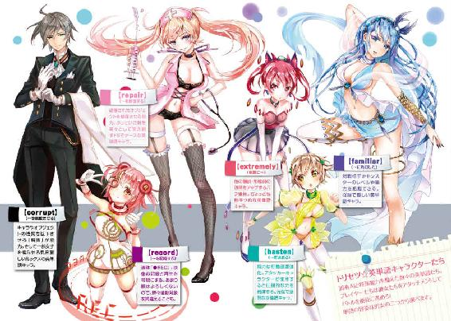
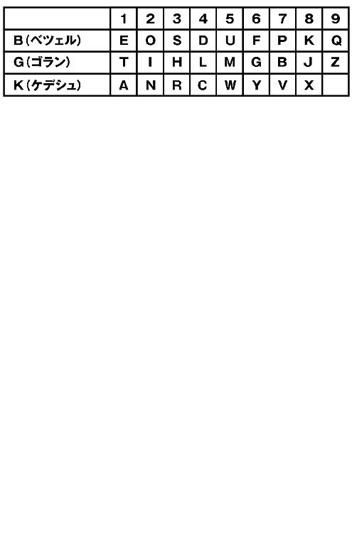
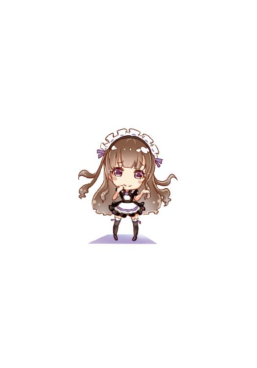

| MOE―召喚しませ!おとめなえいたんご (電撃文庫) | |
| 旭 蓑雄 | |
| (2015) | |


本書（電子版）に掲載されているコンテンツ（ソフトウェア／プログラム／データ／情報を含む）の著作権およびその他の権利は、すべて株式会社ＫＡＤＯＫＡＷＡおよび正当な権利を有する第三者に帰属しています。
法律の定めがある場合または権利者の明示的な承諾がある場合を除き、これらのコンテンツを複製・転載、改変・編集、翻案・翻訳、放送・出版、公衆送信（送信可能化を含む）・再配信、販売・頒布、貸与等に使用することはできません。
プロローグ ～萌えによる殺戮～
暗い墓地。最後の戦いの場はそこだった。
空に浮かぶ月の淡い光が墓碑銘の金箔を照らし、キラキラときらめかせる。その様は夜蝶の羽ばたきが撒き散らす鱗粉のようにも、鬼火の残り火のようにも見えた。
散在する石造りの墓石には、ある『歌』が彫られている。
その歌は世界でもっとも売れた本に載っている極めて有名なもので、これだけ情報化された社会では、ちょっとウェブを検索すればすぐに見つけることができるだろう。
聖書の『詩編』。ぼくたちはその歌の中に隠された謎を解き、ここまで辿りついた。
目的はもちろん、心に安寧と繁栄をもたらすためである。
多くの人が救いを求めて聖書を求めることを考えると、このゲームの運営が〝彼女〟のために聖書の歌を引っ張ってきたのはすばらしくえたやり方だと思う。
何せ彼女はもっとも崇高かつ偉大な存在であり、ＫＡＷＡＩＩという抽象的な概念に具体的なかたちを与えることのできた稀有な例であり、その場にいるだけで人の心をかき乱す力を備えた天使だからだ。
〝萌え〟──アルファベットではＭＯＥと記され、二○四〇年代に多くの神経学者や心理学者の議論の場となり、数多くの解釈が生み出されたその言葉は、いま彼女によって一つに集約されつつある。少なくとも、ぼくの中ではそうだ。
ぼくはいつか、萌えについて研究したある学者の本を読んだことがあった。
〝この本にはあなたの知りたかった萌えの全てが書かれている〟
そう銘打たれた本は、期待された内容に対して宣伝文があまりにも誇大すぎたような気がして、強い怒りを覚えた記憶がある。
しかしぼくはすでに、学者連中が難解な表現で煙にまくだけで、きちんと説明できなかった萌えを見つけだしていた。
萌えとは彼女のことだ。
いまぼくの周りには、彼女への道をふさぐゾンビモンスターの群れがいる。
萌えは闘争と切り離されなければならない。そう言った人は誰だったか。
萌えを闘争の中に置いてはならない。なぜなら萌えへの期待感を、人は闘争による高揚感と誤解してしまうからだ。結果として手段が目的へとすり替わり、萌えのための闘争が、闘争のための闘争、殺戮のための殺戮へと姿を変える。
これはMassacre On Ecosystem──〝生態系に刻まれた殺戮〟と呼ばれ、頭文字を取ってＭＯＥと表された。なるほど、これも萌えのもたらす恐ろしい一面であることに違いはない。
萌えは集合の意識を統率し、ときに功利主義めいた快楽への免罪符を与えることもある。
確かに、戦いに身を置くぼくの心には高揚感があった。これが萌えのためかどうか、すでに判断できる理性はなくなっている。彼女まで、もう少しなのだ。
これは萌えによる殺戮。
唯一問題があるとすれば、周りのゾンビは生物ではないということ。
「エイタ！ ぼっとしてんなよ！」
そんな声が耳に届いたと思った瞬間、ぼくへと肉薄していたゾンビの一体が視界から消えた。
ゾンビに強烈な一撃を与えたのは、ぼくたちのリーダー、アニさん。ギルドを率いる精神的支柱で、ややとぼけたところがあるものの、基本的には頼もしい男である。
最近筋力値が５００を超えたというアニさんの拳を受けたゾンビは、きりもみしながら吹き飛んでいき、大きなサウンドエフエクトとともに四散した。
「すいません、アニさん。助かりました！」
「ここのモンスターのレベルは、これまでよりかなり高え！ お前のレベルじゃ、一人で戦うのは無理だ！ 誰かと組んで戦え！」
「ならばエイタ氏！ それがしの後ろへ！」
そう言って、ぼくに背中を貸してくれるのはジーンさんだった。ギルドの一員で、生粋のエクスプローディアンとして多くの貢献を果たしてきた勇士でもある。
「ジーンさん、助かります！」
ぼくはジーンさんと背中合わせになると、剣を構えた。これで死角からの攻撃は防げる。
次いで、襲いかかってくるゾンビの一体を切り裂く。
「ジーン、エイタを頼んだぜ！ そいつはオレ達の切り札なんだからな！」
「わかり申した！ このジーン、命に代えても！」
それを聞いて安心したのか、アニさんは苛烈な最前線に戻っていった。
アニさんの戦い方は基本的に、このゲームの核とも言うべき〝単語キャラクター〟に頼らない自己完結型。しかしそれは別に、彼がそう望んでそうなった結果ではなかった。
言葉の中にも使いやすい言葉とそうでないものがある。
例えばシェイクスピアは有名な『恋の骨折り損』の中で、honorificabilitudinitatibusという恐ろしく長い名詞を使ったが、多分こんな単語を使う人はほとんどいないと思う。他の単語と結びつきにくく、文脈を乱すような単語に、適切な活躍の場が与えられないのは自明だ。
同様に英単語が重要な力を生むこのゲームでも、もちろん使いやすい単語と使いにくいものがある。アニさんの持つ単語はどれも彼自身の能力と結びつきにくく、結果、彼は素のステータスで戦うスタイルを確立せざるを得なかったということだ。
高いレベルと単語キャラクターのサポートを上手く戦闘スタイルに組み込んだ例が、いま戦場で鬼神の如き働きを見せるプレイヤー、ユウだった。
ユウは擬人化された英単語──つまり〝単語キャラクター〟を二人使役し、両手の剣で次々とゾンビを切り捨てていく。目を見張るべきはそのスピードだった。もともと素のステータスの時点で敏捷値が極めて高いが、さらに二人の単語キャラクターのサポート能力を受け、ゲームシステムにおける限界ぎりぎりのスピードを身にまとうことを可能にしていた。
可愛らしい少女にしか見えないルックスに反し、電光石火で戦場を駆け巡るその姿はまさに韋駄天。トルネードの通ったあとのように、ユウが通過したあとには、バラバラに切り刻まれたモンスターの欠片が降りそそいだ。
──と、そのときユウが、ぼくたちの近くで足を止める。
「いい戦いぶりじゃないか、ユウ。だが、お前に力を与えているのは、そこにいる二人ではなくexplodeだということを忘れないように」
「何よ！ ユウくんはあんたみたいな偏執狂とは違うんだから！ explodeみたいな幼女にときめくわけないでしょ!?」
「そうよ！ このサル！ 変態マスク！」
二人の単語キャラクターは両サイドからユウを抱きしめ、口悪くぼくを罵った。
しかしユウはメニューウインドウを開き、バツの悪そうな表情で二人をデータに戻す。
彼女たちは立ち消えた。「アホ！ ロリコン！」という言葉だけが、ぼくの耳に残っていた。
「ああ、ユウ。流石のお前でも耳が痛くなったか......」
「......ちげえよ。萌えポイントがもったいないだけだ。あの二人は結構コストを食うから」
ユウは言い訳するように、そっぽを向く。「でも、きりがねえぜ......この墓地じゃ、ゾンビは次から次へポップしてきやがる。このままじゃ根負けしちまう」
「何か打開策があるはずなんだ。必ず」
「まさか、また謎解きか？」
「わからない。でも、いまは目の前の敵を倒し続けるしかないだろ。それ以外にできることなんてないし。いつか──どこかで突破口が開くはずだ。それまで頑張るしかない」
言いながら、ぼくは戦場を見渡した。
共同墓地には味方のプレイヤーとゾンビモンスターが戦いを続け、集団から少し離れたところで、ボスモンスターの巨大な一つ目が輝いていた。ぼくたちの中で、あのレベルのボスに太刀打ちできる戦力は、ほとんどないと言っていい。いま何とかボスと一騎打ちを行っているプレイヤーも、かなり消耗が激しいようだった。あの調子では、いつまで保つかわからない。
そのとき、ぼくの視線が一振りの剣を捉えた。
墓地の入り口近く──地面に突き刺さっている神秘的な剣。
刀身の周りを、何かキラキラと輝く小さなものが飛び回っている。
それは文字だった。二十六の数からなる、英単語の根幹──すなわちアルファベット......。
第一章 突撃！ 仮想世界!!
１
ぼくの父は若い頃、擬人化ブームというものを経験したことがあるらしい。
「あの時代は何でも擬人化だったよ。船から城から刀から何でも擬人化して、それが受けに受けた。ちなみに当時の父さんの〝嫁〟は演歌これくしょんの〝天城越え〟ちゃんだった......」
父は遠い目をしていた。「楽しい、いい時代だった......」
その時代は、第一次擬人化ブームと呼ばれている。
ときは第二次擬人化ブーム。
ニッチな知識をゲームから得られることに目をつけたＺＵＮ台予備校は、デイドリームマート（通称ＤＤＭ）ドットコムと提携し、英単語を萌えキャラクターに擬人化したブラウザゲーム『えいたんご☆ますたあ』を発表した。
結果、中高生を中心にブームが広がり、日本の学生の英語学力は急上昇、コンテンツは文部科学大臣賞を受賞するほどに成長する。
日本の学生たちの前に立ちふさがっていた『英語』という学問が、畏怖の対象となり、一角の敬意を払われていた時代は過ぎ去った。
もはや英語は科目ヒエラルキーの最底辺に位置し、児童や生徒が得意科目として挙げようものなら、鼻で笑われてしまうような時代が到来しているのだ。
「英語で取りこぼすとやばいよねー」
「受験の成績開示する？ 数学滅茶苦茶難しかったよなあ。英語はほぼノーミスだと思うんだけどさ」
これは一般的なクラスで、極めて普通に行われている会話である。
二〇五〇年、四月八日。高校初日のホームルームが終わったばかりの教室には、ガヤガヤと雑然とした空気に混じって、どこか新鮮な空気が流れていた。
今日はぼくにとって、運命の日だった。
高校生活の始まりの日。これからの新生活に心を躍らせ、青春をエンジョイしようと期待を膨らませる若者たちのスタート。
入学式の式辞で校長先生はにこやかに、型どおりの挨拶でぼくたちを迎えた。
若い力を大いに発揮して、興味を持ったものには何にでも邁進してほしい。
理解ある大人の言葉に、涙が出そうになる。言質を取った気がした。
今日は運命の日──今日、ぼくは天使を探す旅に出る。
懇親のためにと銘打たれたカラオケ大会を払いのけ、ぼくは直帰した。しつこく誘ってくるクラスメートもいたが、「人を待たせているから」と言うと納得してくれたようだ。
そう......ぼくはとても大切な人を待たせている。しかも、三カ月も。
人生をかけると誓った天使。
ぼくの人生の、もっとも大きい部分を占める彼女の名前はexplode......。
ぼくと彼女の間には壁があって、それは住む世界がたった一次元違うということ。
ぼくは三次元の住民であり、彼女は二次元にしか存在することができない。
「だけど、そんな壁は今日なくなる......」
感極まって握り拳を作るぼくの目の前にあるのは、ヴァーチャル・リアリティ・ゲーム用のヘッドセットだった。ゲーム機の本体には、しっかりと『えいたんご☆ますたあ＠Ｖあーる』がインストールされている。
これは二〇五〇年の一月、つまり三カ月前にリリースされたばかりのゲームだ。
ＶＲゲーム──つまり仮想空間にプレイヤーが入り込んで行うゲームが一般的になって久しいが、まだまだこの分野の伸び代は凄まじい。
ブラウザゲームから始まった『えいたんご☆ますたあ』が爆発的なヒットののちに、コンテンツ領域をＶＲゲームにまで拡大すると聞いたとき、ぼくはついに自分の理想が叶うと思った。
「ついに、explodeに会いに行けるじゃあないか！」
作られた世界の中に入り込んでプレイする感覚というのは、ほとんど現実で得る体感と変わらない。電子情報に過ぎないオブジェクトの伝えてくる様々な質感は綿密に計算され、ヘッドセットを通して脳の中に信号として送り込まれる。
ぼくも他のＶＲゲームで仮想空間を体験したことがあるけれども、ゲームの中のものに五感で挑むことができるというのは、それだけでたまらない魅力を備えていた。ましてや今日からぼくがプレイするのは〝嫁〟の現れるゲームなのである。
ぼくは新しい世界に旅立つ前に、きちんと彼女に挨拶をしていこうと思った。
パソコンを起動し、ブラウザゲームの『えいたんご☆ますたあ』を立ち上げると、ウインドウに可憐な姿をしたキャラクターが現れる。
シルバーブロンドの髪、淡いエメラルド色の瞳......。トレードマークの髪飾りをちょこんと乗せ、身を包むのは赤いドレス。そしてホットパンツと黒いニーハイストッキングの間にできる絶対領域が、何よりぼくを惹きつけてやまない。
うむ、やっぱりぼくのexplodeが一番可愛い。
「explode！ ついにぼくは行っちゃうぜ！ ヴァーチャル空間にできた、『えいたんご☆ますたあ』の世界に！」
『え、もうヘッドセット返してもらったの』
ハードの内部マイクが拾ったぼくの声を聞いたexplodeが、そう返してくる。
「もともと高校入試なんて、ぼくには楽勝だったんだ。母さんは石橋を叩きすぎて壊すような性格だから。ほんとに、この三カ月は大きなロスだよ」
ぼくはため息交じりに言った。
タイミング悪く、『えいたんご☆ますたあ＠Ｖあーる』がリリースされた時点でぼくは受験生だったために、母の横暴によって今日までヘッドセットを没収されていたのだ。
『ふーん、でも今日入学式だったんだよね。おめでと』
「全部、explodeに出会えたおかげだ」
もともとぼくは理数系。英語が唯一苦手科目だったものの、『えいたんご☆ますたあ』のおかげで英語が苦にならなくなった。ぼくはexplodeの可愛さに惹かれてこのゲームを始めたので、彼女のおかげというのはつまりそういう意味だ。
ぼくがそう言うと、彼女は画面の中で頰を染めて、ぷいっとそっぽを向く。
......こいつ可愛いぜ、おい。やはり萌えは心のエントロピーを増大させる。
「あれ、照れてるの？」
『......うるさい』
赤い顔のまま、explodeは言った。『エイタの言うこと、わたし全然真に受けてないもん』
「どうして？」
『エイタがわたし以外の単語ともおしゃべりしてるの、知ってるんだから』
『えいたんご☆ますたあ』において、explode（動詞：～を爆発させる）などの各種英単語は、擬人化されたキャラクターとして登場する。驚くなかれ、総勢で二千以上。当然、初期段階ではそれぞれ異なった性格のＡＩが登録されていて、explodeという単語キャラクター（設定年齢十一歳）の特徴は子どもっぽく、ちょっとだけ焼きもち焼きというものだ。
ちなみにぼくはロリコンではない。好きになったキャラクターがたまたま幼かっただけ。現に、他のロリキャラにはまったく食指が動かない。そのことにぼくは強い誇りを感じている。
「ぼくが他の単語と話しているのは、彼女たちの特徴を押さえておきたいからだよ。そうすることが暗記にとても役に立つんだ。英文の中の単語を読むとき、最初にぼくの頭の中には彼女たちの顔や声が浮かぶ。そして次に、単語の意味を思い出すことができる。確かに、中には可愛いと思う娘もいるよ。でも、それだけだ。まったく心の中に入ってこない。ぼくの部屋を見せてあげたいぜ！ explodeのグッズで一杯なんだから！」
『それはそれでキモイかも......』
「よし、いま誓おう！ ぼくは今日から『えいたんご☆ますたあ＠Ｖあーる』をプレイするけれど、お前のための身体──つまりゲーム内でexplodeを手に入れるまで、他の単語キャラクターを使用しないと！」
『縛りプレイするってこと？』
「そうそう。ルールは攻略wikiを見てるから大体わかる。多分、何とかなると思う」
『エイタって運動は得意だっけ？』
「自慢じゃないが、体育の成績だけは地を這っていた。いや潜っていた。運動ミミズだった」
『ダメじゃん！』
「案ずるな。ゲームはシステムで戦うんだから、運動神経なんてなくてもいいんだ。数値化されたステータスですべてが決まるんだから。むしろ身体能力を信用してない分、ぼくみたいな奴の方がゲーム世界には上手く適応できるって」
『ま、別にどうでもいいけどさ』
explodeはこちらをちらりと一瞥してから言った。
『......はやく迎えに来てね』
ぼくはパソコンのモニターに両手を伸ばしていた。ガツン、と次元の壁に阻まれる。
こんなに彼女のことを思っても、抱きしめることもできない。
これほど心をかき乱される存在に、触れることすら許されない。
この世は地獄なのか......!!
「explode......行ってくるよ。『えいたんご☆ますたあ＠Ｖあーる』の世界へ。explodeの身体を手に入れて、ＡＩの引き継ぎが終わったら、やっとぼくたちのこの一方的な関係も終わる。お前はぼくの声を聞くだけじゃなくて、ぼくを見ることができるようになる」
『どうせ、イケメンにキャラメイクするんでしょ』
「そ、そんなことしないし。デフォルトのままプレイするし。そうすれば、ヘッドセットがぼくの思い描くぼくをゲームの中で再構成してくれる......ぼくがよほどのナルシストじゃない限り、現実とそう違わない印象がつくられるはずだよ」
『......ちょっと不安。わたしにとって、エイタってずっとこのアイコンだったから』
彼女の前に、三頭身位にデフォルメされた人間のアイコンが表示される。彼女たちにとっては、それがプレイヤーの視点を表しているらしい。ぼくたちが単語キャラクターを色々な角度から視姦......もとい観賞するために視点変更すると、そのアイコンが動き、彼女たちはプレイヤーがどの視点から自分を見ているかがわかるようになっている。
「ぼくは多分、平均的な容姿をしてると思うよ」
『ま、わたしは外見で人を判断するような単語じゃないけど』
「ぼくの夢は、お前がストッキングを穿くのを手伝ってあげることなんだ」
『外見を不問にするって言ってるのに、どうして内面の汚さをここで強調しようとするの？』
「explodeの可愛い反応が見たいからに決まってるじゃあないか。覚えておくといい。こういうのをセクハラというんだ」
『死ね。爆発しろ』
この冷たい視線が、何とも言えず快感である。
ジト目で睨んでくるexplodeをしばらく眺めて英気を養うと、ぼくは彼女にもう一度「じゃあ、行ってくるから」と言ってから、ヘッドセットを被った。
２
視界が一瞬真っ白に染まり、次の瞬間、周りに世界が構築されていく。
ぼくの身体は自室にあるにもかかわらず、五感は別の世界を捉えている。
仮想空間──バーチャル・リアリティだ。
ぼくは、西洋風の意匠が施された部屋に立っていた。ぴかぴかに磨かれた大理石の床が、壁面にそって並んだ胸像やタペストリーなどの芸術品に向かって、四方へ広がっている。明かりは天井からつるされた巨大なシャンデリアと、アーチ型にくり貫かれた窓を通して入り込む陽光によってもたらされていた。
窓からは景観美に圧倒されそうになる英国式の庭園が見えた。池には石造りの橋がかかり、周辺の木々は自由奔放な様子で繁殖している。その様は、幾何学的に自然を整える他の西洋風庭園よりも、自然の野放図さを強調しているように思えた。
英国人は、日本人の感覚に近い自然観を持っている。
ここは英国をイメージしてデザインされた空間なのだろう、とぼくは思った。英単語を扱う作品としては、ぴったりの舞台だ。
「ようこそ、『えいたんご☆ますたあ＠Ｖあーる』の世界へ」
はきはきとした声に呼びかけられ、窓から部屋の内部に視線を戻すと、そこにメイド服を着た女性が立っていた。細やかなポリゴンで作られた柔和な顔つきは、驚くほど整っている。
「わたくしは当世界の管理人の一人、ナビと申します。こちらの製品番号にはアカウントが登録されておりませんね。さっそく、このゲームにおけるプレイヤーアバターを作成しましょう。本製品のプレイが初めてでしたら、その後、わたくしがチュートリアルを担当させていただきます」
「おお......本物のメイドさんだ......」
「はい？」
「いえ、少し驚いただけです。ぼくにメイド属性はありませんので」
この場所の雰囲気といい、彼女の外国的な容姿といい、メイド喫茶にいるバイトさんたちとは偉い違いだ。ゲームのクオリティの高さに、ぼくはすでに感動を覚えていた。
「......ただ、あの......一度ご主人様と言ってもらってもいいですか？」
「プレイヤー名は『ご主人様』でよろしいですか？」
「ごめんなさい、真面目にやります」
するとナビと名乗ったメイドさんは、にこやかな表情のまま半透明のウインドウを表示させ、ぼくにプレイヤー名を入力するように促してくる。ウインドウのネーム欄にはすでに『ご主人様』と打ち込まれていたので、慌ててエイタに修正した。
危うくぼくは、この世界の全ての人からご主人様と呼ばれるようになってしまうところだった。いや、まあexplodeに「ご主人様」と言ってもらえるのはいいかもしれないけど......。
「エイタ様でよろしいですね？ アバターはいかがなさいましょう。デフォルトを選択しますと、ご自身でイメージするあなたに近似するアバターを作ることができます。こちらで用意させていただいたテンプレートから容姿や背丈などの特徴を選択していくことも可能ですし、また、互換性のある３Ｄソフトからまったくのオリジナルを作ることもできます」
「デフォルトでお願いします。彼女との約束なので」
「え、彼女いるんですか？」
「失礼なＡＩだな！」
すぐにぼくのアバターはできあがったらしい。メイドさんが部屋の隅からコロコロと持ってきた姿見に映っているのは、とりたてて特徴のない少年の姿。
「どこか修正は加えますか？ ヘルプを開いていただければ、美醜についての感覚を統計した外部のオープンソースから、アバターの改善点を十二万か所ほど提示できますが」
「......このままでいいです」
十二万て。そんなに不細工じゃないだろ、ぼく。何でゲームが始まる前から、こんなにへこまなきゃいけないんだ。
最近のゲームに使用される高度なＡＩは、人工知能管理会社とゲーム会社が提携することによって可能となっている場合がほとんどだ。そして膨大な情報量になるＡＩを、逐次的に搭載するのではなく、シェアすることによって解決している。
またＶＲゲーム用のヘッドセットには、使う度に脳モジュールが解析されるシステムが組み込まれていて、これまでのゲーム経験によって送信されたぼくの嗜好は、すでにその人工知能管理会社の様々な分析に役立てられるソースとして管理されている。
ぼくの価値体系を示す扁桃体などに走る信号パターン情報は、『えいたんご☆ますたあ＠Ｖあーる』のシステムにすでに伝わっており、簡単に言うと、ぼくは「こいつにはこれくらいやった方が面白がるに違いない」と、ＡＩに認識されているというわけだ。
設定ミスってないかなあ......ぼくは酷く傷ついているんだけど。
「アバターが完成したところで、チュートリアルに移行したいと思います。このゲームのプレイは初めてでしょうか？」
「初めてです。攻略wikiなら見てますが」
「メタ発言はおやめ下さい」
「ああ、すいません」
「あと、あれ、あまりあてにしない方がいいですよ。そもそもこのゲームでは情報が出回らないシステムが採用されていますし、たとえ出回ったとしても、それは我々が流したデマだったりする場合が多いですから」
「あんたも結構メタいこと言うねえ！」
「ああいったサイトは誰かの善意によって構成されるものです。手探りでゲームを楽しくプレイしていただきたいというのが、我々の善意ですよ」
ナビさんはにっこりと笑った。
「では、チュートリアルを開始いたします。......の前に、ぶっちゃけて聞きますけど、ブラウザゲームの『えいたんご☆ますたあ』はプレイしたことあります？」
ぶっちゃけすぎじゃね？ てか、それもメタ発言だし。
そう思いながらも、ぼくは「......はい」と返した。
「課金経験はございますか？」
「ございませんよ」
「──ちっ」
「いま舌打ちしただろ！ そういうの良くないぞ！」
しかしナビさんは何事もなかったように、柔和な笑みを浮かべている。
「本作も『えいたんご☆ますたあ』同様、ライトユーザーにも優しい設計を心掛けておりますので、安心してプレイして下さい。我々はユーザーの皆さまからの課金ではなく、キャラクターの周辺商品によって利益を出す方向性なので♪」
「それ建前だってみんな言ってますよ」
「じゃあ、上手いこと射幸心煽りまくるので、ジャブジャブ課金して下さいね♪」
「誰も本音を言えなんて言ってないだろうが！」
「嫌ですね、冗談ですよ」
「当たり前だ！ あんたコンプライアンスって言葉知ってるか？」
「ふふ、『えいたんご☆ますたあ』が、お役に立てているようですね。──compliance」
「カタカナ知識が何でも自分たちの手柄だと思うなよお！ で、でも発音いいなあ、畜生！」
「すいません。時間がもったいないので、そろそろチュートリアルを開始しますね」
「......敢えて言いますが、ユーザー側が突っ込みに回る事態というのは相当のものですよ。自覚ありますか」
「チュートリアルを開始しますね」
「......」
助けてexplode。ぼくはひょっとすると、このゲーム向いてないかもしれない。チュートリアルをクリアできる気がしないんだけど。
そんなぼくの不安などどこ吹く風、ナビさんは嬉しそうに胸の前で両手を合わせる。
「ブラウザゲームをやっていただいているというのなら、話が早いですね！ このＶＲゲーム『えいたんご☆ますたあ＠Ｖあーる』と、ブラウザゲーム『えいたんご☆ますたあ』は多くの部分で似ております。サル並みの知能でない限り、すぐにルールを理解できると思いますよ、エイプさま！」
「エイタだっつってんだろ！ 発言の度にボケなきゃいけないってノルマでもあんのかよ！」
「ちょっと何言ってるのかわかりませんね」
ナビさんはやれやれ、とばかりに首を振った。何だろう、この抑えがたい殺意。
「ゲームが始まってはしゃぎたい気持ちは理解できますが、とにかく、いまは集中して説明をお聞き下さい。本作にはデス・ペナルティもございますし、『ああ、あのときしっかりとチュートリアルを聞いておけばよかった......』と、後々になって思われても困ります」
「誰のせいだよ、誰の」
「ま、二、三回死ねば、だいたいルールはわかりますけどね。習うより慣れよですよ」
「早く説明しろってんだよ！」
「失礼いたしました」
と一度頭を下げてから、ナビさんはようやく説明を始めてくれた。
「この世界において、プレイヤーであるエイタさまが手に入れられるものは、全て〝アルファベット文字〟によって構成されております。アルファベットの二十六文字が、この世界をつくっている物質だと思っていただければ結構です」
彼女が両手を広げると、空中にポップなフォントのアルファベット文字が無数に現れる。
「エイタさまがこの世界で手に入れられるものとは、つまりアイテムと単語キャラクターです。この二つのものを構成する〝素材〟が、アルファベット文字だということですね」
「ああ、その辺はブラウザゲームと一緒なんですよね」
ブラウザゲームの『えいたんご☆ますたあ』は、ものすごく端的に言うと、たくさんの単語キャラクターを集めるゲーム。プレイヤーは単語キャラクターを入手するための手段として、クエストをクリアしたり〝単語召喚〟という儀式を行ったりする必要がある。
〝単語召喚〟とはつまり、素材の組み合わせによって一から単語をつくるということ。
「そのとおりです！ 今作でも、そのシステムに変化はございません。アルファベット文字は全ての根幹です。素材からアイテムや単語キャラクターを作り、また、アイテムや単語キャラクターを分解することで文字に戻すこともできます。実際にやってみましょう！」
メニュー欄にある〝アイテム合成〟が光ったかと思うと、空中に浮遊している文字の中にあるo、p、t、o、n、iのバラバラの六文字が、突然potionの綴りに整列し、ぼよよーんという謎の擬音を響かせたあと、赤い液体の入った丸フラスコが現れた。
「ご覧下さい！ ポーションです！ ポーション!!」
「そうですね。えらくテンションが高いのが気になって仕方ないですけど」
「今回はシステムで自動成功するようにいたしましたが、上手くいく場合ばかりではありません。というのも、同じアルファベットを使って、こんなアナグラムを作ることもできるからです。otinpo。さあ、大声で読んでみて下さい！」
「オチンポ！」
「変態！」
「あんたが言わせたんだろうが！」
「失礼いたしました。しかしこれでご理解いただけたと思いますが、同じ素材を使っても、狙ったアイテムやキャラクターを引き当てることは難しいということです。この確率を上げるためのレシピアイテムを手に入れることが、素材合成によって欲しいアイテムやキャラクターを入手するための近道だと言えるでしょうね」
それを聞いて、ぼくの頭の中に『えいたんご☆ますたあ』で初めてexplodeを引き当てた日のことが浮かんだ。何を隠そう、ぼくが彼女を入手できたのは、〝単語召喚〟をする際、素材として使う文字の順番を固定できるレシピアイテムのおかげだったからだ。
『あなたがわたしを呼びだしたの？』
目をぱちくりさせながら言う、あのときのexplodeの可愛さといったら......。
しかしそんなぼくの幸福な過去を、ナビさんは無慈悲にぶち壊す。
「うわぁ、気色わる......突然ニヤニヤしないで下さいよ......」
「あなたゲーム楽しんでもらう人！ わたしゲーム楽しむ人！ オーケー!?」
「何で急に外国人化するんですか、このイエローモンキーは......」
「それ絶対やめとけ！ 日本人滅茶苦茶怒るから！ てか、サルネタ引っ張るねえ！」
ナビさんはにっこり笑顔で言った。
「では今度は、先ほどのポーションを分解してみましょう！」
切り替え早すぎだろ。オフサイドトラップかよ。
ディフェンスラインの先に取り残されたオフェンスの気分を味わっているぼくを尻目に、ナビさんはさっと腕を振った。すると、もう一度メニューウインドウが立ち上がる。
「メニューの中にある〝分解〟を選択すれば、ほら、このとおり！ アイテムを文字にすることができます！」
すぐにぼくの手の中にあるポーションが、ぽん、という音とともにピンク色の煙に変わり、さっきと同じようなポップなアルファベット文字が出現した。
現れたのはｔとｏ。
「ただし分解時に注意していただきたいのは、アイテムを構成している文字全てを素材として入手することはできないということです！ これはアトランダムで、一～三文字ほどになります。還元率は分解するアイテム・単語キャラクターそれ自体や、分解の時期によっても変わってきますので、こればかりはプレイしながら感覚を身につけていただくしかありません。スーパーのポイント還元が、商品や曜日によって異なるのと同じですね」
「結構、俗っぽいことで例えてくるんですねえ」
「ここまでは、ほとんどブラウザゲームの『えいたんご☆ますたあ』と同じシステムですね。ここからが大きな変更点となるので注意して下さい。まずもっとも大きい変更点が、プレイヤーの立ち位置です。『えいたんご☆ますたあ』では、プレイヤーは単語キャラクターを使役する者として、全ての単語キャラクターの〝主〟という立場にいました。しかし今作の『えいたんご☆ますたあ＠Ｖあーる』では、プレイヤー──つまりエイタさまは〝名詞〟の単語キャラクターと化し、他の品詞キャラクターたちと協力して戦う〝仲間〟になります」
「攻略wikiにもそう書かれてましたね。そこはデマを流さなかったと」
「そんなところに噓情報を載せても、潜在プレイヤーを怯えさせるだけです。わたくしたちが相手にするのは、課金しそうでしない中堅プレイヤーどもですよ」
「プレイヤーを代表して色々言いたいことはありますが、この際続けて下さい」
「課金すれば、一定時間わたくしをレンタルすることもできます」
「誰が課金の説明を続けろって言ったんだよ！ チュートリアルを続けろよ！」
結構強いんですよ？ と笑顔で言うナビさん。あんたが強いのはわかってんだよ。こっちはゲームが始まる前から、すでに精神がやられそうなんだから。
「単語キャラクターは、その単語の持つ意味から派生したスキルを駆使して戦います。プレイヤーが〝名詞〟の単語キャラクターになるということは、その名詞の能力をユニークスキルとして使用できる存在になるという意味です。ユニークスキルとは、そのプレイヤー固有のスキルということですね。プレイヤーはレベルアップすることによって、能力値を高めたりスキルを覚えていきますが、このユニークスキルもパワーアップしていきます。上手く使いこなせば、低レベルでも高レベルのモンスターやプレイヤーを倒すこともできますので、色々な単語キャラクターと組み合わせて自分なりの戦い方を考案してみて下さい！」
ぼくが攻略wikiを見て、多少の縛りプレイをしても大丈夫だと思ったのは、このユニークスキルの存在を知っていたからだった。それこそ、最初に超強力な名詞を引き当てることができる可能性だってあるのだ。
そして、ぼくはリセマラをする気でいる。リセマラとは、ネットゲームでよく行われる合法的な裏技の一つである。
ネットゲームでは、ゲーム開始直後に一度だけ、アイテムなどを無条件にランダム決定で入手できる機会が与えられる場合がある。
そのほとんどの場合、ゲームを開始してすぐに手に入れられるような弱いアイテムが当たるものなのだが、低確率とはいえ、ごくまれに強力なレアアイテムを引き当てる場合もある。
そんなシステムを逆手にとって、強いアイテムが出るまでリセットを繰り返すことをリセットマラソン──略してリセマラと呼ぶ！
リセマラの利点は、ゲームの最初から超強力なアイテムで無双できるところにある。
「それではさっそく、エイタさまの名詞を決定する儀式を始めましょう！」
ぼくはこの裏技を〝名詞付与の儀式〟で使う気満々なのだった。リセットの度にこのナビさんに会い続けるのはきついものがあるが、チュートリアルは飛ばせると言っていたし、次からはいきなり名詞付与の儀式から始めることもできるだろう。
「ちなみに三月いっぱいをもちまして、リセマラはめでたく不可能になりましたので、この製造番号で得られる名詞はこれっきりになります！ 気合いを入れて下さいね！」
ナビさんがぐっと握り拳を作って放つ言葉が、ぼくにはしばらく理解できなかった。
「......ちょ、ちょっと待って。いま、変な言葉が聞こえたんだけど......」
「あ、リセマラする気でした？ 残念ながら、対策済みなんですよ！ 今回決定された名詞はアカウントを削除しても、大元の製品の製造番号が同じである限り、永久に変わることはございません！ て言うか、ぶっちゃけサーバーに負荷かかりまくるから迷惑だったんですよね、リセットマラソンって」
「そ、そんなことwikiに書いてなかった......」
「あ、そろそろ誰かに書いてもらいましょうか」
「だから、非公式の攻略wikiに運営が絡もうとするんじゃあない！ てか、まじかよ！ リセマラできないの!?」
ぼくは頭を抱えた。完全に計画が狂ってしまったじゃないか！
「あ、でもリセマラを行う方法もありますよ」
ナビさんは頰に指を当て、首を小さく傾けながら言う。
「......どうせろくでもない方法でしょ」
「製品をたくさん用意するんです！ 製造番号はそれぞれ違いますから、気に入った名詞が出るまで製品を購入し続ければいいじゃないですか♪」
「やっぱりろくでもなかった！ いいよ！ 絶対強いの引くから！」
ぼくはやけっぱちになって叫んだ。
「結構、結構！ それでは引いて下さい！」
そう言うナビさんの隣に、いつの間にか大きな機械が置いてあった。こいつはまさか......。
「......何これ？」
「ガチャです！」
「ええ......」
儀式っていうから、六芒星の上に立って魔法の力を手に入れるとかを想像してたのに......。ちょっと即物的すぎませんか......。
するとナビさんは、満足げに頷いて言った。
「引いてますねえ、エイタさま。ガチャだけに」
「すいません、しばらく黙っててもらってもいいですか」
ぼくのテンションは世界恐慌時の株価も真っ青なほどダダ下がりだったが、何とかレバーをひねるだけの気力は残っていた。
ガチャ、ポン。
小気味のいい音とともに、カプセルが転がり出てくる。
カプセルはカパッと開き、中からポップなアルファベットが現れ、空中で単語の綴りを形成していく。ぼくは、レアな名詞来い、レアな名詞来い、と祈りながらその単語を読んでみた。
３
inflection──〝屈折〟を意味する名詞だ。
「強力な能力ゲットおめでとうございます！ 今後、その名詞の持つ意味から生み出されるユニークスキルが、エイタさま固有の特殊能力となって戦いの役に立ってくれるでしょう！ エイタさまくらいの年齢なら、『フッ、俺の特殊能力は......』とか言ってみたいでしょ？ どんどん中二プレイしちゃって下さい！ 我々運営は『うわぁ......』とか思いながら、生温かい目でプレイヤーの皆さまを見守っているので！」
「強力な能力!? これってもしかして強いの!?」
「......ぷ」
「笑ったな！ さては何引いても強いって言うつもりだったな、あんた！」
「いえ、能力に強いも弱いもありませんよ。全て使い方一つです。名詞だけでは英語は意味を伝えることができません。他に動詞、形容詞、副詞やその他もろもろの単語があって初めて、センテンスを形成するのです」
ナビさんは、パチンと指を鳴らした。
「これから、プレイヤー以外の単語キャラクターの説明に入ります。いまわかりやすい能力の単語を呼んでおりますので、もうしばらくお待ち下さい」
......ええ、こんな説明役がもう一人増えるってこと？ 勘弁してください。
ぼくの背後で、ドアが、ギィと開く音がした。
「あ、来ましたね！ explode！」
───え？
「ほら、そんなところでもじもじしていないで、こっちに来て下さい」
───ちょっと待って？
ぼくはいまナビさんが言った単語の意味を、再検討してみることにした。
explode：爆発する、～を爆発させるという意味の動詞。第一文型と第三文型によって使用される。語尾変化によって名詞化されると、explosion：爆発という単語になる。
よし、完璧。やはり『えいたんご☆ますたあ』で培った知識は伊達ではない。
そして振り向く。
天使がいた。
「ああァァァァァァ！ え、エクスプロ──ドだ────！！！！！」
「わ、びっくりした......な、何ですか、急に大声出して」
「うわああァァァァァァ！ エクスプロ──ドた────ん！！！！！」
「ちょ、キモ......いや、うるさいので、explode！ この人を黙らせて下さい！」
「メイド服も可愛いいィィィィっっヒひィィ！」
ドゴン!!
同じ次元に天使を見つけて絶叫するぼくの思考は、強烈な破裂音とともに真っ白になった。
何が起こったのかわからず、目をぱちくりさせる。視界にはなぜか、巨大なシャンデリアが映っていた。
「......ああ、よかった。大人しくなった」
「......ね、ナビ。この人なに？」
「変態ですよ」
「ちがう！」
と、跳ね起きる。するとメイド服に身を包んだシルバーブロンドの少女は、びくりと身体を震わせ、ナビさんの後ろに隠れてしまった。
そういえばexplodeは最初のころ人見知りだったっけ......？ と思い出して、心がどこまでも熱くなる。しかしメイド衣装とか、ぼくを萌え殺す気か......!?
「変態ではない！ ぼくはエクスプロ─ディアン（訳：熱狂的なexplode信者）だ！ キャラクターの人気投票──すなわちMaster Of English（＝MOE）では必ずexplodeに投票しているし、年々長くなるイベントの行列もものともせず、イベント関連グッズは全て揃えている！ explodeを扱った二次創作活動でも、仲間から高い評価を得ているんだぞ！」
「カッコとコロンまできっちり口にするところに狂気を感じますね......」
「ね、にじそーさくってなに？」
「explodeを使って、いや～んな作品を作っているということですよ」
「あんたに何がわかる！ ぼくの愛はプラトニックなものだ！」
口から唾が飛び散る。本来なら仮想世界のクオリティに驚嘆するところだけれども、いまはそんなことを言っている場合ではない。
「......いくらだ！」
「は？」
「いくら払えば、彼女にお触りしていいか聞いているんだ！」
「え......いや、あの、困ります。うちはちょっとそういう店じゃないんで......」
「おう、ねえちゃん、できへんはないやろ？ こっちはお客さんやで？」
「キャバクラにセクキャバのノリを求める客みたいなことを言わないで下さい！」
叫んでから、ナビさんは悔しそうに片膝をついた。
「......くっ、突っ込みに回ってしまいました、不覚......」
「......わたし、もう帰っていい？」
「そうでした！ プレイヤーが重度のロリコンであろうとも、ゲームの説明を最後まで続けるのがわたくしの務め！」
ナビさんは力強く立ち上がった。
「ぼくはロリコンじゃあない！ あんな性犯罪者予備軍どもと一緒にするな！ explodeがたまたま幼かっただけじゃないか！」
「やかましい！ いいから黙って聞け！」
柔和な顔のメイドがついに怒る。彼女は、はあはあと肩で息をしていたが、しばらくするといつものにっこりスマイルに戻った。
「順序が狂ってしまいましたが、先ほどの爆破現象が〝動詞〟であるexplodeの能力です！ 使ったのは第三文型──ＳＶＯ。つまり、主語、述語、目的語ですね。わたくしを主語、目的語をエイタさま、動詞に〝～を爆発させる〟という意味のexplodeを入れることで、〝ナビがエイタを爆発させる〟という文章を作ったわけです！」
「掛け値なしに、すばらしい爆発だった」
ぼくはexplodeから目を逸らさず、強く頷いた。
「それが、動詞キャラクターの能力なのです！ 文章を作ることによって、その意味を具現化させるという魔法が使えるのですよ！ 同じように、他の品詞にも様々な効果がありますので、是非色々と試してみて下さい！ さて、単語の説明は以上です。プレイヤーは自分のユニークスキルを使ったり、他の単語キャラクターと協力したりして戦いに勝利し、レベルアップして強くなることができます。そうして手に入れた力を利用して、更なる未知の単語を集めていく。それが、この『えいたんご☆ますたあ＠Ｖあーる』のゲーム内容となります！」
「何だか、巻いてませんか？」
「早く仕事を終わらせて、こんな変態とおさらばしたい！ などとは、口が裂けても言えません。ねー」
「ねー」
「純粋なexplodeを巻き込むんじゃない！」
ナビさんに話と笑顔を振られて同じ反応を返してしまうexplodeは、胸が張り裂けそうなほど可愛かったが、一方でぼくの怒りは爆発しそうになっていた。この鬼畜メイドめ！
「いよいよチュートリアルも最後になります！ 先ほどの名詞付与の儀式同様に、今度はエイタさまの初めてのパートナーとなる単語キャラクターを決めましょう！ 当たる単語キャラクターの種類は三種類。動詞、形容詞、副詞ですね！ 言うまでもなく、これもリセマラはできません！ ガンバ☆！」
もはやこちらを煽っているとしか思えない。
彼女の隣に、さっきの機械とは違う色の機械が現れた。即物的魔法パート２である。
「はい、ガチャです！」
もはや何も言うまいと、ぼくは無言で機械に近づいてガチャを回した。
ガチャ、ポン。
名詞付与のときと同じく、カプセルからアルファベットが溢れてきて、一つの単語の綴りを形成していく。さっきと違っていたのは、そこに女の子の姿が浮かび上がってきたことだ。
「こんにちは！ アタシ、obviousよ。〝明白な〟を意味する形容詞！ これから一緒に頑張って──」
すかさずぼくは、メニューから分解を選択した。
現れたばかりの女の子は笑顔を凍らせると、「──え？」という言葉を遺言に、アルファベット素材へと変わってしまう。小文字のｏだ。
「ちっ、一文字にしかならんのか」
「ああ、obviousちゃんが！ な、何てことをするんです！」
「うるさい！ うるさい！ ぼくはexplodeを手に入れるまで、他の単語キャラクターは使わないという縛りプレイをすると誓ったんだ！」
「しばりぷれいってなに？」
「explodeに、サディスティックな調教を行うという意味ですよ！」
「それはちがうだろ！」
全速力で否定する。ぼくは好きな女の子の嫌がる顔を見て楽しむことはできるが、苦悶に歪む表情から快楽を得るような変態ではない！
そのとき突然、ぼくの目の前に、亀甲縛りをされているexplodeの映像が浮かび上がった。
縛られる彼女は、スクール水着（白スク）の上からかぼちゃパンツを身につけている。それらは、ぼくが彼女に何度お願いしても「やだ、キモイ」の言葉で一蹴されていた衣装だった。
な、何だこれは!? 幻覚か!?
縄を逃れようと身をよじるexplodeは恐ろしく生々しく、単なる妄想とは思えない。いや、このレベルの妄想ができるなら自家発電が大いに捗るが......!!
「......い、いったい何なんだ、このビジョンは!?」
「どうしようナビ、この人わたしのこと美女だって」
「こ、こんな変態的な方法で、〝inflection〟のユニークスキルを使わないで下さい！ 『えいたんご☆ますたあ＠Ｖあーる』は健全なゲームです！」
「ユ、ユニークスキル!?」
慌ててメニューから自分のステータスを確認すると、inflection──の欄に〝光屈折〟というスキルが表示されている。
「えーと、なになに......『光の屈折を利用して像を作りだし、相手に幻覚を見せることができます』......って、こいつは、まさか......」
ぼくは息を吞む。「神スキル!?」
幻覚のexplodeは、真っ赤な顔でぼくを睨みつけ「エイタ、さいてー......」と呟いた。
目の前の半透明なメニューウインドウを、ぼくの鼻からほとばしる赤い粒子エフェクトが貫いていく。
のけ反ったぼくが頭を元の位置に戻したとき、すでに幻覚は消え去っていた。
「な、何て恐ろしいスキルだ......上手く使わなければ、自分の身を滅ぼしかねない......!!」
「......チュートリアルは以上になります」
ナビさんはゴミでも見るような目をしていた。
「......えーと......まあ説明を聞くよりも、実際プレイをして得られる知識の方が多いと思いますし、これからまあ、精々頑張ったらいいんじゃないですかね？」
「急に投げやりにならないで！」
「ははは、まさか。やりが投げられるなら、間違いなくエイタさまに向かって投げていますよ」
ナビさんは部屋の隅にある扉を指さした。
「あそこから出てまっすぐ行けば屋敷を出られます。庭園の外が『始まりの街』となっておりますので、まずはそこのギルド会館や酒場で情報を集めると良いでしょう」
「......」
「......まだ何か？」
「いえ、何も」
ゲームが始まるというのに、行ってらっしゃいませもなしか。メイドなのに。
まあ別にいいけど。
それからぼくは慎重に、音を殺しながらすり足で部屋の中を動いた。
初めてではないとはいえ、ＶＲゲームのプレイは久しぶりだった。
身体が重い。
そもそもの話として、ＶＲゲームはタイトルごとにパラメータによって身体の動きが変わってくる。一つのゲームの『敏捷値：１００』が、他のゲームでは『敏捷値：２０』と同じぐらいなんてことはざらなのだ。操作の感覚はゲームによってかなり変わってくるし、はやくこのゲームに慣れなければならない。
心もとない身体パラメータを最大限活用できるように、神経を集中させる。
腕と足に力を込め、一歩一歩扉に向かって進んでいく。
何とかナビさんのいる部屋を出ることができて、とりあえず一息ついた。目の前に意識を持っていくと、カーペットの敷かれた廊下が正面玄関まで続いているのがわかる。
今度、ぼくは走ってみた。
しばらくすると、現実世界で息が上がるのとは違う疲労感が襲ってくる。
ゲーム内では「痛い」や「熱い」という感覚はカットされるが、痛さや熱さを感じているということはわかる。専門的な話はよくわからないが、人間が動物として持っている原始的な脳の感じる痛覚を残したまま、大脳皮質などの知的な高次領域が感じる痛覚をカットすれば、このようなことは可能らしい。
つまりぼくがいま感じているのは、原始的な衝動なのだ。
本能といってもいい。
いや、愛だろうか。
庭園を抜け、『始まりの街』の石畳を踏み締めたぼくは、まずメインメニューを呼び出した。
そして取得単語一覧にその単語があるのを見て、はっと息を吞む。
「そ、そんな......ま、まさか上手くいくなんて......」
「......いたい～」
「ああ、ごめんよ！ explode！」
ぼくは腕に込めていた力を抜き、ユニークスキルの継続を中止した。
そのスキルを使用していたのは、チュートリアルが終了してからいままで。
本物のぼくとexplodeを透明にし、部屋を颯爽と去るぼくと、ナビさんの後ろに直立するexplodeの映像を作りだしていたのだ。透明になったぼくはすり足で背後からexplodeに忍び寄り、声が出せないように彼女の口を押さえると、ここまで運んできたのである。
「ひゃっほう！ やったぜ！ まさか初日からexplodeを手に入れられるなんて！」
その日ぼくは、幼女を誘拐することに成功した。
４
『エイタはシステムの穴をついたんだよ。普通のプレイヤーは、チュートリアル終了時点で、一つは単語を持っているものなんだから。要するに、たまたまobviousちゃんを分解することによって、エイタがそのexplodeを外に連れだしちゃっても、システムが違和感を覚えないような状況を作りだしたってこと』
「なるほど。要するに愛は勝つということか......」
『要約できてない！』
これは昨晩ログアウト後に行われた、ぼくとexplodeの会話。
舌足らずな口調で背伸びして解説しようとするところなんて、この娘は本当に可愛いと思いませんかあなた？
一夜明けて太陽が昇り、いまは学校の昼休憩。次の授業は英語だった。
そんなわけで、ぼくは高校の指定教材に含まれていた真新しい英単語帳を眺めている。開いているのはもちろん、彼女の載っているページだ。
explode──その単語は、単なる七文字のアルファベットの羅列ではない。
おそらく昔の英国人はangelとexplodeを間違って、てれこにしてしまったのだ。
ああ、早く帰って『えいたんご☆ますたあ＠Ｖあーる』をプレイしたいものである。
あのあと僕は自分の『パーソナルＡＩ』のデータを、『えいたんご☆ますたあ＠Ｖあーる』に同期する作業に一晩中かかってしまった。中々接続が上手くいかずにいらいらしたものの、次からは仮想世界にぼくのexplodeが待っていると思うと、疲れが吹き飛んだ。
彼女の身体を抱きしめたとき（愛の逃避行のとき）の感触が、いまでも腕の中に残っている。彼女と同じ次元に存在できるというだけで、これほど幸福な気持ちになれるなんて......。
人生はすばらしい......。
Life is beautiful......。
「英単語帳を見ながらニヤニヤしているところを見ると、さては小島くん、『えいたんご☆ますたあ』ユーザーだね？」
──突然で悪いが、オタクであるとリアルで誰かに知られることは死を意味する！
「ね、どの単語キャラクター推しなの？」
ぼくは冷静に英単語帳をパタンと閉じて、突然話しかけてきた三次元の少女に意識を向けた。
「記憶というのは、印象によって定着する力が増すことはよく知られているよね。単なる丸暗記よりも、物事をイメージと結びつけた方が物事はより覚えやすい。『えいたんご☆ますたあ』はキャラクターを擬人化することによって、単語のイメージを視覚化することに成功した。実際いい方法だと思うよ。塾の先生が、あのゲームをお薦めするくらいだからね。ぼくは英語が苦手だったけど、英単語を覚えてからは成績が良くなった。でも、ゲームはゲーム。ぼくにとって、『えいたんご☆ますたあ』はキャラクターを利用して英単語を覚えるための手段であって、つまりぼくは『えいたんご☆ますたあ』ユーザーではあるがかなりのライトユーザーであり、推すキャラクターなどは存在しないからこの話題を続けるのはとても難しいよね非常に残念だ」
淀みのない口上。完璧だ。
「あ、そうなの？ 残念......私、実は『えいたんご☆ますたあ』って大好きだから」
「えっと、ごめん......名前は......」
「私？ 梨奈麻衣っていうの」
そう自己紹介してから、少女はにっこりと笑った。
「よろしくね、小島映太郎くん！」
「よろしく梨奈さん。あれ、ぼくの名前知ってるんだ？」
「だって、昨日自己紹介してたじゃん！ 私、名前を覚えるのって得意なんだ！」
にこにこと笑う少女は、どこか子犬を思わせる。かなり幼い容姿だが、三次元では美少女にカテゴライズされるはずだ。ボブカットの髪が、とても似合っている。
あ、美少女じゃん、と思った瞬間、ぼくは心の中でほくそ笑んでいた。
こんな三次元の美少女が、えい☆ますを大好き？ どのキャラクター推しかだって？
笑わせてくれるではないか！
エクスプローディアンの間では、約半年前にアニメ化された『えいたんご☆ますたあ』において、explodeが登場した話数、秒までを含めた時間、台詞の内容、使用されたカット枚数、使用された３Ｄモデルの型など、全てを押さえていなければ鼻で笑われる。
それができて初めて、「実はぼく、explode推しなんですよね......へへ」と、あくまで謙虚に主張することが許される。
この少女に〝大好きな〟単語キャラクターがいたとして、同じことができるだろうか？
舐めてもらっては困る！ こちとら、人生をかけているのだ。
そんなぼくの嘲笑に気づかぬ様子で、梨奈さんは照れたように頭をかく。
「いやあ、実は私かなりオタクでさ～」
はい、オタクアピールいただきました！ それは自らファッションオタクだと認めているようなものですよ！
本当の金持ちは自分を金持ちだと言わず、そう言ってしまうのは成金であるのと同じで、本当のオタクは見ず知らずの人間の前で自分のことをオタクだとは公言しない！
「特に最近は『えいたんご☆ますたあ』にどハマリしちゃってて、一緒に話せる人が欲しいんだよね」
「それじゃ、ぼくは役に立てそうにないね。残念だけど」
「あ、気分を悪くさせちゃったら、ごめんね。いや、さっきさ！ 小島くん、explodeちゃんの載ってるページを見てたから、ひょっとしたら同志かなって思っちゃったんだよね、えへへ」
──何だと？
「私、explodeちゃんのファンなんだ！ すっごく可愛いんだもん！ わかる？ ほら、『リア充爆発しろ！ ──All the happy people must explode！』のクエストで、低確率ドロップで手に入る単語キャラクターだよ！」
い、言うに事欠いて、こいつ......！
彼女のことを何もわかっていないくせに、explodeファンを名乗るだと......!!
ふつふつと怒りがこみ上げてくる。
「し、知ってるよ。ぼくも、あくまで軽くとはいえ『えいたんご☆ますたあ』はやってるからね。ああ、はいはい、explodeね、わかるわかる......」
「あ、通じる？ 超絶可愛いよね！ 熱狂的なexplodeファンのことを、ネットとかではエクスプローディアンっていうんだけどさ？」
そして少女は、決定的な一言を口にしてしまった。
「私それかも～あはは」
殺す！ こいつを生かしておくことはできない！
ぼくは必死に感情を押し殺してから、ゆっくりと口を開いた。
「い、いやあ、怖い話だけど、ああいうのって詳しい人は本当に詳しいらしいね～ぼくも素人知識だけど、確かexplodeって────年齢十一歳、誕生日２月14日、血液型Ａ型、身長１４３センチ、体重35キロ、靴サイズ20センチ、スリーサイズは69・54・72。趣味はお昼寝とマスターとのお散歩。好きな色は赤────だったかな～」
「え？ 滅茶苦茶詳しいね......？」
「詳しい？ まさかまさか！ いやあ、ゲームを普通にプレイしてたら、これくらいの知識は簡単に身につくよお。まあ常識っていうのかなあ。凄い人はもっと凄いと思うから、梨奈さんも実はそんなに詳しいとは言えないんじゃないかなあ」
実際、この程度は普通の人間でも知っていることだろう。ぼくの持っているexplodeの知識からすれば、こんなものは氷山の一角どころか、その一角の先端に位置する〝点〟に過ぎないのだから。
ぼくは冷静だった。要するに、オタクであることを見事に隠しながら、軽いジャブを放ったに過ぎない。
しかしこれで決定的だ。あの程度のことを「詳しい」と評する梨奈さんは、ファッションオタクと呼ぶのすら生ぬるい甘ちゃんである。
自分の知識レベルを思い知らされ、泣いてどこかに走り去るかと思っていた梨奈さんは、しかしここで予想外の反応を見せた。
「......すばらしい！ 小島くんには、とても見所があります！」
「は？」
「誰推しでもないってところも気に入りました！ それはつまり、これから誰推しにでもなれるってことだもんね！ というわけで、今日から私と一緒にexplodeちゃんを応援しましょう！」
「いや、ちょっと待って？」
君に言われるまでもなく、ぼくの〝嫁〟はもうexplodeですけど？ 手柄を横取りするみたいなことやめて下さる？
「無知は罪じゃないの！ むしろ何かを知らないというのは幸福なことなんだよ！ これから、たくさんそれについて知ることができるんだから！」
梨奈さんはぼくの隣の席に座ると、ずいっと身を寄せてくる。
「実は私、いまexplodeちゃんの布教活動中なの！ 彼女は危機に瀕しています！ ワシントン条約で保護する必要があると思うレベルで！」
「はあ？」
「まずはこれを見たまえ」
彼女が指にはめた小型情報端末のＯＳを起動すると、空中にホログラムディスプレイが立ち上がる。ＶＲゲームでメインメニューが現れるような感じだ。
都市全体に広がる拡張現実は、ぼくたちが生まれた頃に普及し始めた技術らしいが、情報化社会のますます進むいまとなっては、ほとんど生活に欠かせないものとなっている。
梨奈さんが立ち上げた半透明なディスプレイには、『Master Of English──単語キャラクター人気投票』という文字があって、更にその下に折れ線グラフが見えた。
「explodeちゃんは第三回ＭＯＥで見事一位を獲りました。それが、この折れ線グラフの頂点ですね。しかしここからの推移を見て下さい。explodeちゃんは、その後何とか人気を維持しつつも、毎回の投票ごとに順位をじわじわと落としています。前回の第七回ＭＯＥでは九位に入り、無事〝パワーナイン〟を維持することができましたが、これは安堵を意味するものでは決してありません。未だ予断が許されない状況が続いているのです......」
梨奈さんは、環境ドキュメンタリー番組のナレーターのような口ぶりで話す。
explodeのキャラ人気順位の逓減。それはぼくも懸念していることだ。『えいたんご☆ますたあ』には二千以上の単語キャラクターがいるため、九位といえば大人気キャラクターと言っていいが、explodeがこれ以上低い順位に甘んじていいかと聞かれれば──答えは否。
「人気の上位にexplodeちゃんがいれば、それだけ多くのメディア展開が期待でき、彼女と彼女のファンである私たちの双方が嬉しいWin‐Win状態なのですが、下位に落ちればそれと真逆のスパイラルが形成され、心ないファンはexplodeちゃんのことを嫌いになってしまうかもしれないのです！ これぞexplode不況！ バブルexplode！ この負のスパイラルから抜けだすのが難しいことは、いままでの日本の景気が証明しています！」
「そ、そいつは大変だ......」
「そう！ 大変なのです！ 私たちはこの九位という順位より下に、彼女を落としてはいけません！ ゴッドワン、エクストリームスリー、ミラクルセブン、そして、パワーナイン！ それから下の称号は、何とストロング48まで落ちてしまうのです！ 私はexplodeちゃんが、その他有象無象の英単語と同格になってしまうなんて耐えられない！ 作られるグッズも減っちゃうし！」
「そりゃ確かにまずいな......」
「わかってくれる!?」
「へぁ!? え、いや......」
「良かった、小島くんはわかってくれるんだね！」
梨奈さんは興奮した様子で、ばんばんと机を叩いた。
「小島くんだけだよ！ 実は昨日学校のあとのカラオケ大会に行ってみんなに布教したのに、全然ダメだったんだ！」
「......カラオケ」
カ、カラオケだとお!? こいつ、まさかをあの歌を歌ったんじゃあるまいな!?
「せっかく、私の十八番──『超新星☆exploding star!!』を歌ったのに！」
歌ってやがった！ explodeのキャラソンを！
「......ち、ちなみに、みんなはどういう反応だったの？」
「『explodeじゃなくて、麻衣ちゃんのファンになる！』って言ってお菓子くれたよ」
どっちもどっちだな、おい。
あ......でも、ちょっとわかる気もする。梨奈さんは妙に幼いところがあるし、友だちというよりは、可愛い小動物的な扱いを受けるタイプなのかもしれない。何かについて熱く力説すればするほど「おー、そんなことも知ってるんだねよしよし」と言われて終わる感じ。
「これ、昨日みんなでカラオケ終わりにアキバで撮った写真。ほら、見て。私の格好」
ぼくの失礼な想像など露知らず、梨奈さんは指輪型ＯＳのホログラムウインドウを別の画像に切り替える。そこには、路上でピースする男女の集団が写っていた。
なるほど、ぼくが『えいたんご☆ますたあ＠Ｖあーる』で有意義な時間を過ごしていたとき、彼らは無為に時を浪費していたというわけだ。
しかし写っているものをよく見ようと画像を覗き込んだ瞬間、ぼくは目を剝いてしまった。
その写真の中心に、どう見てもexplodeだとしか思えない女の子が写っていたからだ！
幼い顔立ち、シルバーブロンドの髪、赤いドレス、そしてふとももの絶対領域......。
「な、何だこれ......？ 合成......？」
「それ、私なんだ」
梨奈さんはふふん、と鼻を鳴らし、平らな胸を張った。
「すごいオブジェクトでしょ？ 作るの、すっごく苦労したんだ。電装街の拡張現実は解像度が抜群だから、これだけのコスプレができるんだよ！」
「コスプレ？ 拡張現実のオブジェクトなの、これ......髪も？ 衣装も？」
「そうだよーん」
「でも、下に着てる服はどうするの？ いくらオブジェクトが完璧でも、それは映像に過ぎないんだから、下から服が飛びだしたりするんじゃないの？」
「それは、その......」
少女はもじもじしながら赤くなり、目を泳がせた。
「......し、下は、身体にぴっちり合った衣装を身につけてるから、大丈夫なんだよ。服に邪魔なんてされないの」
「身体にぴっちりって......ああ、スパッツとか、トレーニングウェアのこと？」
「スク水」
「馬鹿野郎！ 事案じゃないか！ どこの世界に、コスプレするために街中を水着で歩く奴がいるんだよ！」
「ご、誤解だよ！」
梨奈さんはあたふたする。こうしてみると、本当に小犬が慌てているようだ。
「たんなる誤解！ 小島くんは、レイヤーの覚悟を知らないだけなんだよ！ 大丈夫だから！ 無知は恥ずかしいことじゃないって、さっきも教えてあげたでしょ？」
「......!? 何でこっちに責任をなすりつけようとしてるんだよ！ 誤解とか言うから、一瞬水着に正当性があるのかと思っちまったじゃないか！ 頼むから、常識人の価値観の方にフォーカスを合わせて下さい！」
「じゃあ、小島くんはスパッツとストッキングが地繫がりとなり、消失してしまった絶対領域に意味があると思うの!? インドとユーラシア大陸はもともと別の大陸だったんだぞ！ そんなことで小島くんのヒマラヤ山脈が大きくなったとして、それで嬉しいの!?」
「わけのわからん例えを繰りだすんじゃあない！ そもそも拡張現実でやろうとするからだろうが！ 普通にコスプレするか、どうしてもオブジェクトでやりたいなら、スパッツの上に薄いオブジェクトを展開して、肌色のテクスチャでも貼っとけ！」
「お腹の部分はやってるよ！ でも絶対領域だけは譲れない！」
それを聞いて、ぼくははっとなった。言われてみればそうである。ぼくとしたことが絶対領域にばかり目がいってしまい、explodeのへそだしファッションのことを失念してしまっていた。スク水を着ているにもかかわらず、写真の中の少女の腹部は肌色そのものだった。
「explode厨はふとももの絶対領域だけは偽らない！ おぬしは何もわかっとらん！」
「くっ......!!」
はあはあと息を荒げるぼくたちは、「......取りあえず落ち着こうか」という梨奈さんの一言で、休戦協定を結んだ。争いは何も生まない。
「とにかく私はマジってこと」
「......みたいですね」
もうわかっていたことだったが、この少女はガチだ。本物のエクスプローディアンだ。
一流は一流を知るという言葉があるが、それはまさにこのときのためにあるような言葉だった。ぼくは、この少女の奥から溢れるexplodeへの情熱を感じ取ってしまったのである。
もはや油断ならぬ存在となった少女は、ぼくに優しく声をかけてきた。
「まずはアニメから入るのが一番だよ。最初は何がいいのか理解できないかもしれない。でも、そのうちその意味不明さも快感に変わってくるから......」
「何だか麻薬みたいだな......」
「萌えにはね、精神の均衡を維持する力があるんだよ」
いや、違うんだなこれが！ 萌えは心のエントロピーを増大させるのだ！
「アニメは二十四話だから.........明日までには見れるよね？」
梨奈さんは当然のような口ぶりで聞いてくる。
まあ、二クール分なら明日までに見られるだろう。一話二十分として、八時間。非オタのパンピーでもその程度は大丈夫なはずだから、ぼくが頷いても違和感はない。
「まあ、それくらいなら......ぼくと真逆のタイプの人たちが、どんなものから楽しさを享受するのか、知っておくいい機会かもしれないしね」
すでにぼくは視聴する必要がないくらいアニメ版『えいたんご☆ますたあ』を周回しているので、もはや改めて全てを見直すことなどしない。見るとしても、気に入っているところを少し押さえておくくらいか。
それよりも、今日から『えいたんご☆ますたあ＠Ｖあーる』の世界で、explodeとの甘い生活が始まるのだ。アニメの視聴も大事だが、やはりいまその優先順位は下がると言わざるを得ない。
しかし、そのことを思い出したとき──『えいたんご☆ますたあ＠Ｖあーる』の存在に意識が向いたとき──ぼくは背筋に冷たいものを感じ取っていた。
......そうだ、どうして思いつかなかった？
動揺を押し殺すぼくの視線の先には、にこにこと笑う梨奈さんの顔がある。子犬のようなその笑顔が、いまは悪魔の笑みに見えた。
しまった！ こいつはエクスプローディアンではないか!!
「明日には感想聞かせてね！ 実は少し前に『えいたんご☆ますたあ＠Ｖあーる』っていうゲームがリリースされてさ。私の最近の日課は、寝落ちするまでそのゲームをプレイすることだから、明日また『えいたんご☆ますたあ』の話で盛り上がろうよ！」
や、やっぱりプレイヤーなのか!? こっちはキャラクター、いまと同じ姿でプレイしちゃってるんですけど!? 出会ったら一発でアウトじゃねえか!?
「あ、あのう......」
「ん、なーに？」
「......ちなみに、梨奈さんはそのゲームで、もうexplodeをゲットしました？」
「まだだよ」
よっしゃ！ とりあえずぼくの勝ちだ！
「？ どうして笑ってるの？」
「いや、何でもない。梨奈さんも（精々）頑張ってねえ」
その日の放課後、ぼくは家に向かう電車の中で攻略wikiをこっそり覗き、比較的序盤で入手できるアイテムの中から、顔をすっぽりと隠すことのできる頭装備を探したのだった。
第二章 集結！ エクスプローディアン!!
１
初バトルというのは、ゲームにおいて非常に重要な要素の一つ。ＲＰＧなら、戦闘はそのタイトルの魅力が詰まった箇所と言っても過言ではないし、このゲームで何ができるのか、どのようなシステムが採用されているかを確認する場になる。
その初バトルにおいて、ぼくはかなり濃い敵にあたった。
場所は『始まりの街』周辺の戦闘エリア。ＲＰＧにある〝最初はスライム〟というお約束どおり、いまぼくの目の前でぷるぷると揺れているのは紛うことなきスライムだった。
問題はその中身である。
「この覇王デュランダル！ スライムと化したとて誇りまでは失わん！ むしろこの苦境こそ騎士の本望よ！ さあ来い！ 我にそなたの正義を見せてみよ！」
『えいたんご☆ますたあ＠Ｖあーる』には、ネームド・エネミーという存在がいる。これは文字どおり名前を与えられた敵ということであり、彼らにはそれぞれ専用のＡＩが搭載されることによって、人格や記憶というものが与えられている。
ネームド・エネミーの最大の特徴は、ぼくたちプレイヤーと同様、ゲーム内で死亡しても復活するということ。ただ復活した際、そのＡＩが宿る身体が元の身体と違うらしい。戦いながらべらべらと語るこのスライムの話を聞く限り、彼の前世はかなり強力なモンスターだったのだろう。覇王というくらいだから、クエストボスくらいの地位にいたのかもしれない。
ぼくが何気なく横にないだ剣の一撃が、デュランダルに何度目かのダメージを与える。ＨＰバーが減少し、ついにレッドゾーンに突入した。
「うぬっ！ 中々よい一撃を放つ若者よ！ 北の大地に覇を唱えた我をここまで追い詰めるか！ フフ......久々に血がたぎってきおったわ！ いまの我に──」
スライムがぷるぷると身体を揺らして跳躍する。
「──血はないけどお！」
太陽の光が目に入り、視界が一瞬真っ白になる。次の瞬間、ぼくは覇王デュランダルの下敷きとなっていた。
「フハハ、これが地の利を得た戦い方よ！ まだまだこんなものでは済まさんぞ！ 戦場に出てきた以上、女子どもでも容赦せん！ そなたを倒しレベルを上げてやるわ！ 再び始まる我が覇道の礎となれることを誇りと思いながら、朽ち果てるがいい！」
スライムに大した攻撃力はないが、この距離で打撃を打ち込まれれば流石に効くだろう。どんな連続攻撃が始まるのかと、ぼくが身構えた瞬間──
......スライムの身体が、そっとぼくの気道を塞ぐ。
「む、むぐっ!?」
「さあ、大人しくしろォ！ 経験値を寄こせえ！」
ゲーム内で呼吸ができなくなっても、苦しいと実感することはない。しかししばらくしていると、ぼくのＨＰが目減りしていくのがわかる。
何とかもがいてスライムの魔の手（？）から逃れたぼくは、這う這うの体で立ち上がることに成功した。
「ひ、卑怯者！ 何が騎士だ！」
「何とでも言うがいい！ 我が血も涙もない暗黒騎士となった理由はちゃんとあるのだ！ 北の大地で情報を集めれば我の悲しい過去を知ることもできるだろう！ 語りたいのはやまやまだが、自分で背景を語ることほど格好のつかないことはない！ ただ一つ言えるのは──」
「いまは物理的に血も涙もないってんだろ！」
ぼくが言うと、スライムはぐっと詰まった。
「人の台詞を取りおって......そなた、生かして帰さんぞ......」
お互い息が上がっており、それぞれのＨＰも残りわずか。
なぜ最初からこんなことになっているのかはわからないが、まさに死闘と呼ぶにふさわしいバトル。おそらく次の一撃が勝負を決めるに違いない。となれば──
ぼくはだし惜しみせず、最大の攻撃でスライムに挑むことにした。
「いくぞォ、覇王デュランダル！ これがぼくの最強の攻撃だあ！」
ぼくの隣に光の粒子が結集し、女の子の姿を形成する。天使の具現化──
「ぬお!? こ、これは──!?」
「第三文型！ explode！ 敵を爆破しろ！」
現れたexplodeが、掌を前に突き出す。
Eitaexplodesthe enemy.──構文が成立。
渦巻く風が銀色の髪をなびかせ、キラキラと輝かせた。エメラルドの瞳が強い光を放ち、スライムの周りの大気だけが別のシステムによって切り取れたかのように震動する。
大気は赤く燃え上がると、一点に向けて──震える大気の中心にいるスライムに向けて──一気に凝縮される。
チュドーン!! 強烈な爆破音のあとに残ったのは、ぶすぶすと煙を発しながら黒く変色した、無残なスライムの姿だった。
「ぐふ......み、見事だ。この覇王の野望が再び挫かれるとは......フフ、我も衰えたな」
うん、衰えたことは確実に否めないと思う。レベル１のぼくと死闘を演じるくらいだから。
「名を聞いてもいいか......？ 次に生まれ変わったとき、そなたを思い出し腕を磨こう......」
「......エイタだ」
「......エイタか......良い名だ......我が好敵手！ 最後の手向けと思って、我が言葉を胸に刻んでくれぬか......？ この身体で敗れたとき、打倒された者に必ず贈ろうと思っていた言葉があるのだ......」
「聞こうじゃないか、覇王デュランダル」
「──〝いじめないで ぼく わるいスライムじゃないよ〟──」
「それいま言うのかよ！ 後味悪いなおい！」
ニヤリとやり遂げた笑いを顔に張りつかせたまま、覇王デュランダルは粒子エフェクトを撒き散らしながら消えていった。
経験値が加算され（たったの３）、あとはアイテムドロップとして、小文字のｅが二つ手に入る。こういう体験を通すと、やっとゲームが始まったという気になる。
それから、ぼくはexplodeに向き直った。単語キャラクターにもレベルはあり、プレイヤーに使用されるほど強くなっていく。見ると、彼女にも経験値が加算されていた。
「助かったよ。すごい一撃だったね」
「......もう。わたしの手は借りないって言ったのはだれ？」
「ごめんよ。強敵だったんだ」
ぼくはゲームにログインしてから、ずっとexplodeと一緒にいた。しかし戦闘はみっともないところを見せるかもしれないと思って、一時的に彼女をデータに戻しておいたのだ。
初めてぼくの姿を見たexplodeは、赤くなってぷいっと顔を背けるという何とも可愛らしい反応を見せた。〝銀髪幼女に外れはない。総じて可愛い〟という有名な金言があるが、彼女はまさしくそれを体現していると言えよう。
explodeを見つめるぼくの視線が下がる。吸い寄せられるように、彼女のふとももへと。
ホットパンツとニーソが作るその絶対領域は、ギリシャ神話の〝スキュラとカリュブディスの間〟とばかりに、見るものを圧迫して進退きわまった精神状態に陥らせ、最終的には膝枕を要求せずにはいられなくしてしまう恐ろしい空間である。
「......どこ見てるの？ 気持ち悪いんだけど......」
言いながらexplodeは、スケスケピンクのフリルスカートを押さえた。
でも隠せてないんだよなあ。このデザインを考えたクリエイターは本当に天才だと思う。
彼女は頰を染めながら言った。
「......ま、初勝利おめでと」
「ありがとう、ぼくはいま幸せだよ」
「な、何大げさなこと言ってるの、ばか！」
「いや、初めての共同作業が済んだいま、ぼくたちはすでに結婚していると言っても過言ではない。そして三次元の人間が幸せの象徴として挙げるものに結婚がある。ということは、三段論法的にぼくは幸せじゃないか」
「.........」
「引いてもダメだぞ！ ボケて突っ込み待ちをしている人間にとって、それがどれだけ恐ろしいことか、いい加減に理解するんだ！」
「......何だ、冗談なんだ......？ 本気かと思っちゃった......」
──ぐはあぁぁ!! し、死ぬ！ 湧き上がる萌えの内圧で爆発してしまう！
「な、何という返しだ......！ いましがた覇王につけられた傷が疼く......!!」
ぼくが苦しみ悶えていると、explodeはジト目になって言った。
「わたしも冗談なのに。ばか。もう知らない」
２
ぼくが『えいたんご☆ますたあ』にハマったのには理由があり、それはもちろんexplodeの可愛さに惹かれたからなのだが、更に大元を辿っていくと〝アニさん〟という人にまで行きつくことになる。
彼は偉大だ。
どれくらい偉大なのかというと、explodeが、第三回ＭＯＥで一位を獲るほどの人気を獲得できたのは、アニさんのおかげと言っても過言ではないからだ。
何を隠そうぼく自身、アニさんの『explodeの人気をexplodeさせるための活動』、いわゆるＥＥＣ（某経済共同体は関係ない）によってエクスプローディアンになってしまったのだ。
explodeは第一回ＭＯＥで二十八位だった。二千以上いる単語キャラクターの中では大健闘と言えただろうが、アニさんはそれに満足できなかったらしい。
『オレたちの力はこんなものなのか？』
これはアニさんがまだアニさんと呼ばれていなかった時代、ある掲示板で放った一言である。
『自分の好きな娘が一番じゃないなんて、オレには耐えられねえ！ オレはやるぞ、必ずexplodeを一位にしてみせる！』
『何こいつwww必死乙www』
『言うだけなら誰でもできるんだよなあ（呆れ）』
『けっ、お前らはそこで指をくわえて見てな！ オレはやると言ったら必ずやる！ 匿名の〝名無し〟じゃカッコがつかねえから、いま名乗らせてもらうぜ！ オレは〝ＥＨＳＰ〟の〝漆黒の爆弾魔〟だ！』
『し、漆黒の爆弾魔？』
『掲示板でどもる奴初めて見たわ』
『漆黒の爆弾魔っていや、explode×bombのカップリングを王道の一つとして確立させた奴じゃねーの？』
『......ほう、どうやら、オレのことを知ってる奴もいるようだな......』
『同人誌お世話になってます。百合こそ至高』
『ちょっと、待てよ。本人だって証拠ないじゃん。騙ってる可能性だってあるし』
『ちっ、こまけー奴だな。ならオレのＳＮＳのアカウント見てみな』
その言葉に導かれた掲示板の住民たちが〝漆黒の爆弾魔〟のアカウントを見に行くと、そこには、『某掲示板に出没なう』というつぶやきがあった。
『マジじゃねーか！』
『www』
『オレは本気だぜ！ 今日からオレは漆黒の爆弾魔じゃねえ！ オレのことを呼びたけりゃこう呼びな！ エクスプローディアンと！ そして、オレと志を同じにする奴もエクスプローディアンだ！ オレの力だけじゃexplodeを一位にすることはできねえ！ お前らの力を貸してくれ！ オレたちはエクスプローディアンだ！』
この演説は、後に『エクスプローディアン解放宣言』と呼ばれることになる。
この出来事のあと、〝漆黒の爆弾魔〟は一躍ときの人となった。
そこかしこの掲示板に〝漆黒の爆弾魔〟を名乗る偽者が続出したのだ。そのあまりのインパクトのために、面白がって真似する模倣犯が無計画テロを起こし、その迷惑行為の源泉を辿っていくうち、人々は彼の『エクスプローディアン解放宣言』を目にすることになった。
言わば悪目立ちである。
おそらくだが、当時『えいたんご☆ますたあ』のユーザーだった人間なら、彼のことを知らないものはいないのではないか。〝漆黒の爆弾魔〟の第一印象は良くも悪くも、強烈なものとして当時の人々に刻まれたらしい。
だが注目されたことには違いはない。たとえそれが、少し彼の思惑と違っていたとはいえ。
本物の〝漆黒の爆弾魔〟は、その流れに巧みに乗りながら精力的に活動を続け、同人誌、高品質な３Ｄモデルの制作、その３Ｄモデルを使った動画など、様々な媒体を駆使してexplodeの良さをネットに流し続けた。
そして人の熱は伝播する。好きと言われてその人を意識し始めることがあるように、やけに目立つ人間がそれほどの熱意を持って取り組む対象というのは、皆の注目の的になった。
第二回の投票において、explodeは五位。
完全に流れが来ていた。この結果でネットは再び過熱し、今度こそexplodeを一位にしようという運動が野火のように広がっていったのである。
その頃〝漆黒の爆弾魔〟は、エクスプローディアンを率いる兄貴分として、いつしか〝アニさん〟と呼ばれるようになっていた。
ぼくがexplodeを知ったのはその頃だ。
彼女はすでに〝『えいたんご☆ますたあ』と言えばexplode〟と言われるほどコンテンツの顔として成長しており、ぼくが天使を見つけるのに何の障害もなかった。
「おい、あいつ見ろよ......サルのマスクつけてるぜ......」
「あれって、『人間以前』って意味で初心者プレイヤーを煽る運営のブラックジョークだろ？ 防御力はたけーけど、あんなもん街中で装備する奴初めて見たわ......」
「ネタプレイだろ、どうせ。あとで恥ずかしくなるんだよな、ああいうの......」
何とでも言うがいい！ ぼくにはリアル世界の安住も大事なのだ！
ぼくは『始まりの街』の居住区に戻ってから、顔を手で覆いながら防具屋に駆け込み、マスク状の頭装備を購入した。
それがいま装備しているラピエンス・マスクだ。サピエンスの頭文字ｓが、アルファベットの順で一文字退行したｒになっており、いましがたひそひそとぼくの容姿を笑っていたプレイヤーたちが言っていたように、『人間以前』を意味する防具である。
こんな姿を見られないように、explodeはまたデータに戻してある。
ぼくは突き刺さる視線をものともせず、一人で始まりの街の『ギルド会館』を目指した。ギルド会館は円柱状をした小さな建物で、どの街にも必ず一つ備え付けられている施設だ。
誇り高いエクスプローディアンとして、ぼくは所属するギルドをもう決めていた。アニさんがリーダーを務める『ＥＨＳＰ』がそれで、すでに相手方にもきちんと了解をもらっている。
ちなみに『ＥＨＳＰ』とは『explodeをハスハス（hshs）する会（party）』の略である。
「おお、やっと来たか！ 兄弟！」
ぼくがギルド会館に入ろうとしたとき、誰かに声をかけられた。
振り向くと、そこには見知ったアニさんのいかつい姿がある。
やたらと鋭い眼光、そして細身だが引きしまった身体つきを見る限り、どうやら彼もデフォルトでプレイしているようだった。
ぼくたちの付き合いはこれまでほとんどネット上で行われてきたが、同人誌頒布会などを通してリアルでも会ったことがある。
アニさんはぼくの肩をがしりと摑み、ニヤリと獰猛な笑みを浮かべた。
「待ちくたびれたぜ、エイタ！」
「アニさん！ こんな格好しているのに、よくぼくだってわかりましたね！」
「どうせお前のこったろうから、『explodeに自分の本当の姿を見てほしいからデフォルトでプレイしたいけど、リアル割れも怖い』とか考えると思ってよ！ 三人目でビンゴだったぜ！」
「三人目？」
「マスクで顔を隠した奴がここを通る度に、片っ端から声をかけていったんだ！」
「え、あのドヤ顔で二回も失敗したってことですか？」
「大丈夫大丈夫、仏の顔も三度までって言うだろ」
「使い方おかしいでしょ！ ぼくが三人目以降に現れてたらキレてたってことですか？ ぼくは一度目なのに!?」
「こまけーこと気にすんな！ ったく、三カ月も待たせやがって！ 受験なんて気合いで何とかしろよ！ 睡眠時間を削れば大概のことは実現可能なんだ！」
「流石は、えい☆ますのナポレオン！」
これはアニさんが『えいたんご☆ますたあ』におけるキャラクター人気勢力図を完全に書き換えたことからついたあだ名の一つだ。寝る間を惜しんでexplodeのために尽力したことも、その要因として高く評価されている。
「それで、エイタ。お前はどんな名詞引いたんだ？」
アニさんは先導してギルド会館に入りながら、そう訊ねてくる。
ぼくは昨日のことを説明した。神スキルを引いてしまった、と。
「マジかよ！ それでこそエクスプローディアンだ！」
「アニさんは何の名詞なんです？」
「そりゃ、オレにふさわしい、最強の能力よ！ destruction──つまり、破壊だな！」
うわ、マジで強そうなの引いてる、この人。
「せっかくだから見せてやるぜ、エイタ！ オレのユニークスキルを！ 筋力値ガン振りの攻撃力から放たれる一撃の威力を！」
何を思ったのか、アニさんは石造りの壁に低い姿勢で突進していくと、そこに思い切り拳を叩きつけた。
とてつもない破裂音とともに、ギルド会館に大穴が開く。
「力こそジャスティス!!」
拳を天に突き立て、高らかに叫ぶアニさん。
ギルド会館に集まる人たちが驚愕の表情でぼくたちを見つめる中、ぼくは思った。
......あ、この人パワー厨だ。
それは、力至上主義者のことを指して言う用語。
この思想に取り憑かれた者たちは、ゲームなどでレベルアップに伴うステータス上昇を、ある程度自由に割り振れる場合、攻撃力や技の威力ばかりを重視してしまう傾向にある。
「いまのがdestructionのユニークスキルの一つ、〝オブジェクト破壊〟だ！ どうだ、すげーだろ！」
「......これ怒られませんか？」
「オブジェクトは、時間が経てば自動的に修復されるからいいんだよ」
そういうものだろうか。
「でも確かにとんでもない威力ですね、これ。こんなのでプレイヤーを殴ったら一発でしょ」
アニさんはチッチッと指を振った。
「プレイヤーはオブジェクト扱いじゃねえから、単に普通の攻撃ダメージが入るだけだ。こいつはいわゆる魅せプ用。バトルマンガとかじゃ、攻撃が外れたときに地面に穴があいて、『な、何て威力だ......』って感じの場面があったりするだろ。ああいうのができる」
「クソスキルだコレ！」
「そんなことねーよ！ カッコいいだろ！」
ぼくたちは入り口からではなく、アニさんが作った大穴からギルド会館の中に入った。戦闘では役に立たないだろうが、こうして邪魔なオブジェクトを破壊できるのは実は結構有用かもしれない、と一応思い直す。
それからぼくは会館の隅にあるカウンターで『ＥＨＳＰ』にギルド入団申請登録を行い、アニさんがそれを許可することで、ぼくのギルド入団が正式に認められた。
「よっしゃ、これでお前もオレたちの仲間だ！ 来な。ギルドルームに案内するぜ！」
「確かどのギルド会館からでも、転移装置を使って所属ギルドの部屋に行けるんですよね」
「そういうこった。ここはそれぞれのギルド用の部屋が用意されてるわけじゃなくて、共通の入り口があるだけってことだな。ギルドルームから出るときも、扉をどの街のギルド会館につなぐことだってできるぜ。オレたちのいまの主戦場は『十九世紀ロンドンエリア』だから、オレもさっきまでそこにいたんだ」
「十九世紀のロンドンって随分限定的ですね。他にはどんなエリアがあるんです？」
「多すぎて説明できねえな。普通のファンタジーっぽいエリアだってあるし、ＳＦチックなところもある。現実をモデルにしたエリアでいうと、だいたいイギリスとかアメリカとかの英語圏が多いかな。『ＮＩＮＪＡ』『ＧＥＩＳＨＡ』とかいう、外国人勘違い日本エリアもある」
「いや、ユーザーは日本人でしょ!? このゲームの運営大丈夫なんですか!?」
「多くの選択肢を用意して、淘汰はユーザーに任せるらしい。この間も、稼働率の悪かった『ＨＡＲＡＫＩＲＩ』エリアが『ＳＡＭＵＲＡＩ』エリアに統合されたところだ。残念だがな」
いや、それは妥当だろ。腹切りなんて、侍の一要素でしかないやん。
アニさんについて入った『ＥＨＳＰ』のギルドルームは、小さなパブのような内装をしていた。カウンター席とテーブル席があって、古びた喫茶店のようにも見える。
「『十九世紀ロンドンエリア』のロイヤルミント・ストリートに面したパブを間借りしてんだ。転移装置じゃなくて、普通に玄関から出ればロイヤルミントの大通りに出れるぜ」
「いいところじゃないですか！」
「だろ!? すげーだろ！ 先月開かれたバトルロイヤルでギルドが四位まで勝ち残って、その賞品としてここの権利をもらったんだ！」
「え、まさか、アニさんって強いんですか？」
「愚問だぜ、エイタ！ オレほどの男になれば、自らが勝ち残る必要なんてねえ！」
「は？」
「アニさんの能力はバトロワ向きじゃねえし」
突然声がして、そのときやっとぼくは、もう一人パブに人がいることに気づいた。
精巧な人形のように整った顔立ちをしたショートヘアの美少女。小柄で、どうやらぼくより年少のアバターを使っているようだった。
「ふーん、お前がエイタか。サルみてえな顔してるんだな」
彼女のそんな物言いに、思わずむっとしてしまう。
「何だ君は、いきなり失礼な奴だな......これはラピエンス・マスクだよ。海より深い事情があって、顔を隠さなければいけないんだ。そういう君だって、その『私、ファンタジー世界の住人です』ってキャラメイクはどうかと思うけどなあ」
「これはデフォルトだ、アホ。俺はハーフだからしょうがねえだろ」
ぼくは混乱した。彼女の言葉に矛盾があったからだ。
俺!? 俺って言ったぞこの娘!? どういうこと!?
「......ああ、そうか」
すぐに納得できる答えを見つけだし、ほっと息をつく。一時はどうなるかと思った。
「つまり女性アバターでプレイしてるネカマくんってことか......」
「だから、デフォルトだって言ってんだろ！ 人の話聞けよ！ アニさんだけでも手一杯だってのに、これ以上ボケ役が増えんなよ！」
「いや、君の言っていることには矛盾があるだろう！ 君はどう見ても美少女だ。なのに、どうして俺なんて言うんだ？ おかしいじゃないか！ 君は二次元のキャラクターなのか!? ははーんわかったぞ、さては〝俺っ娘〟属性をまとってやろうと、そういう魂胆か？」
「人間の言語をしゃべれ、このサル！ 俺は男だ！ 舐めたことぬかすな！」
「男だと？」
ぼくは意外に思いながら、まじまじと、自分のことを男だと言うその俺っ娘を見つめた。
確かに中性的ではあるが......。
「......そうか、なるほどな。いや、悪かった、そういうことだったか」
「ったく、やっとわかったかよ、このアホ......」
「つまり君は俺っ娘ではなく──『自分は男の娘だ』と、こう主張したいわけだな？」
「ちげえよ！ もうやだこいつ、アニさん助けて！」
「待て、君から話しかけてきたんだろう!? まだ話は終わってないぞ!! 英国の偉人シェイクスピアも言っているだろう！ 〝あるべきか、あらざるべきか、それが問題だ〟と!!」
「あるよ！ ついてるよ！ ──って何言わせてんだ、このアホザル！」
彼（本人談）は、真っ赤になって叫んだ。
「どうやらすぐに打ち解けたみてえだな！」
アニさんは腕を組み、うんうんと大きく頷いた。
「エクスプローディアンに壁はねえ！ エイタ、紹介するぜ。こいつはユウだ。さっきちょろっと話に出た先月のバトロワで四位に残ったのもこいつさ！ レベルもかなり高いし、多分『えいたんご☆ますたあ＠Ｖあーる』屈指のプレイヤーの一人だぜ！」
「この男の娘がですか？」
「お、俺のことを今度そういう風に言いやがったら、切り刻んでやる！ 戦闘エリアに出たときは、精々背後に気をつけな！」
「ユウはお前に会うのを楽しみにしてたぜ、エイタ！ お前の二次創作ドラマあるだろ？ ほら、オレの３Ｄモデルを使ったexplodeの動画シリーズ。あれの大ファンなんだとさ！」
「あ、アニさん！ いまはそういうこと言うタイミングじゃないってば！ 空気読んでよ！」
「............」
涙目になって慌てるユウを見ながら、ぼくは自分の中で目覚めかけた危険な怪物を必死になだめることになった。
い、いかん！ いま一瞬不覚にも萌えてしまったじゃないか！
ちなみにぼくのexplodeの動画シリーズとは、中学時代の半分以上をかけて作り上げた全百二十話の大巨編である。
「他のメンバーはいま、いないんですか？」
話を変えようとして、ぼくは訊ねた。
「他の奴らは色々と情報を集めに行ってるところだ。実はいま色々と大変でな。お前が来てくれてほんとに頼もしいぜ。謎解きとか、お前得意だったろ？」
「謎解きって言うか、パズルとか数字に強いってだけですよ」
「十分だ。実は、いまオレたちはクエストの攻略中でな。巨大な敵と抗争状態にある。お前の力があれば、あいつらを押さえられるかもしれねえ」
いつになく真剣な表情のアニさんを見て、ぼくは居住まいを正した。
「クエスト？」
「そう」アニさんは言った。「──explode入手クエストだ」
３
explode入手クエストだって？
「......まさか、実装されてないんですか？」
ぼくは嫌な予感を覚えながら、アニさんに訊ねた。
「どういう意味だよ？」
「いや、explodeって、もう普通に入手できる単語キャラクターじゃないんですか？ ほら、〝単語召喚〟とかで......」
「いや、まだだな。いまやってる入手クエスト・イベントがexplodeを取得できる初めての機会だ。イベントが始まって二週間。個人じゃとても太刀打ちできねえ難易度のクエストのせいで、オレの知る限り、まだexplodeを入手した奴はいねえ。それにこのイベントが終わっても、多分〝単語召喚〟にも実装されねえだろってのが大方の予想だぜ。だからオレたちはいま必死になって、クエストの謎と格闘してるんじゃねえか」
ブラウザゲームの『えいたんご☆ますたあ』においても、レアな単語キャラクターはイベントでしか手に入らず、単語召喚などの通常のプレイ手段では取得できないということが多々あった。これはまあ、イベントを盛り上げるために、ある程度仕方のない処置と言えるだろう。
だが、ぼくが恐れているのはそういうことではなかった。
いまexplodeは、この世界に存在しない単語キャラクターだということである。
昨日はたまたまシステムの穴をつけたかもしれない。しかし、誰も入手していないはずのexplodeを持っているプレイヤーがいると、運営に察知されればどうなる？ それこそ、ぼくは堂々とexplodeを連れて始まりの街を歩いていたのだ。誰かが運営に通報するかも──
ぼくは青ざめて、メニューウインドウを立ち上げた。
そしてすぐに、取得単語一覧のページに飛ぶ。
──空白──
「ああァァァァァァっぁぁぁ!! い、いなああァァァァァいいい!!」
「ど、どうした、エイタ!?」
「ぼ、ぼくのexplodeがああァァァァァァ!!」
「explode!? explodeがどうした!?」
目の前の出来事が信じられなくて、ぼくはメニューのあらゆるページを開いてみた。
何かの間違いに違いない！ さっきまで一緒にいたのに！ 今日からやっとexplodeと生活できると思っていたのに！
するとすぐに、フレンド欄に見知らぬメッセージが届いているのを発見した。ぼくはこれが何かの助けになると確信し、すがるような気持ちで再生をプッシュした。
空中にナビさんの笑顔が浮かび上がる。
「げぇ!? 鬼畜メイド!!」
『この度は当方のシステムエラーにより、取得不能の単語キャラクターが、エイタさまの取得単語リストに記載されてしまうという不具合が生じましたことをお詫びいたします。他プレイヤーとの公平を期すため、単語リストの該当キャラクターは削除いたしました。せめてものお詫びといたしまして、キャラクターを分解して得られたこちらの文字をお受け取り下さい』
それは小文字のｘだった。explodeのｘ......。
あの可愛かった天使が、こんな姿に......。
単語を分解するなんて、何という鬼畜の所業......。
『お伝えすることは以上です。それではアデュー♪』
そのとき、ぼくの精神は崩壊した。
「あいつ突然どうしたんだ......ユウ、お前何かわかるか？」
「アデューって、二度と会わないって意味らしいよ。くすくす」
「いい性格してるじゃねえか！ このカマホモ野郎！」
ようやく意識を取り戻したぼくは、聞こえてきた嘲笑に反応して猛然と立ち上がった。
「だ、誰がカマホモだ！ どっからどう見ても俺は男じゃねえか！」
「いや、お前は野郎十人が十人とも振り向く美少女にしか見えない！」
「エイタ。混乱しているのはわかるが、せめて褒めたいのか貶したいのか整理してから話せ」
アニさんはぼくの肩をがしりと摑むと、優しい調子で語りかけてくる。
「一旦落ち着け、な？ いったい何があったんだ？」
それが呼び水となり、ぼくは昨日のことを一部始終話すことになった。
メイド服姿のexplodeが可愛かったこと。チュートリアル中、ユニークスキルが暴発したこと。亀甲縛りされたexplodeが可愛かったこと。そこで彼女を誘拐しようと思いついたこと。逃走中抱きしめたexplodeが可愛かったこと。そしてexplodeが可愛かったこと......。
「お前ただの変態じゃないか」
「いやそれは違うぜ、ユウ。こいつは自分に正直なだけだ。オレはこいつを否定できねえ。なぜなら、エクスプローディアンとはそういうものだからだ！」
「あんた『explode可愛い』しか聞こえてねえだろ！」
「とにかくだ。エイタ、確かにお前はいま半身を失った状態であることに違いはないが、嘆いていても何も始まらねえ。お前もこのクエストを受注して、今度は正攻法で彼女を入手するんだ！ 女々しくすんじゃねえよ！ なあ、ユウ!?」
「アニさん、この娘に同意を求めるのは酷ですよ。女々しくすべきでないなんて」
「......ぁ......」
「何でそこで弱気になんだよ！ しかも『ぁ』って何だよ！ いいんだよ！ どんと俺に同意を求めろよ！」
「ああ、すまん。一瞬ごっちゃになっちまった。悪気はねえんだが」
「なお悪いわ！ あんたもそのうち俺の剣の錆にしてやるからな！」
「こまけー奴だな。ジェンダーフリーっていや、好意的に受け止められる概念だろうが......」
「こっちはフリーにした覚えがねえんだよ！ 性別に選択の余地がある時点でおかしいだろ！」
涙目になって怒るユウを、アニさんはやんわりと手で制した。
「悪かった悪かった。ユウ、とりあえずいまから、エイタをクランドール卿のところに連れてってくれ。こいつに、正式にクエストを受注させるんだ。あそこにはＮＰＣとしてexplodeもいるし、こいつの心の傷を癒す意味でもちょうどいいだろ」
「......ええ、やだよ。アニさんが連れていけばいいだろ」
「オレはこのあと、フェックスの奴らと話し合いの約束がある。気は進まねえが......」
ぼくはその言葉にぴくりと反応した。
フェックスだって......？
「アニさん、まさか、いまＥＨＳＰが抗争してる相手っていうのは......」
「ほう、流石に察しがいいな、エイタ。そのとおりだ。オレたちの敵ってのは、巨悪の根源──邪悪の中の邪悪──フェックスの奴らだ」
「あの害虫ども、『えいたんご☆ますたあ＠Ｖあーる』の世界にも湧いているんですか？」
「悪がはびこらない世界なんて存在しねえ。オレたちはあいつらに負けるわけにはいかねえんだ。お前にならその意味がわかるだろ。これはＥＨＳＰだけの問題じゃねえ。人間が人間として生まれた以上、正義を執行しなければならないときがある。それが、いまだ」
ぼくは青ざめた。フェックスがいる以上、ぼくたちは常に危険に晒されることになる。
奴らの存在は、本来ただのエンターテイメント作品である『えいたんご☆ますたあ＠Ｖあーる』を、デスゲームへと変えてしまう。
あまりにも巨大な敵を知って、ぼくの身体は震えていた。
「勝算はあるんですか......？」
アニさんは豪快に笑った。
「ビビってんじゃねえよ！ オレがいる限り、あいつらの好きにはさせねえ！ 勝てるかどうかじゃねえんだ。勝つんだよ！ そんじゃ、行ってくるからよ！ ユウ、あとは頼んだぜ！」
「それ死亡フラグにしか聞こえねえぞ。ちゃんと帰ってきなよ」
アニさんが転移装置ではなく、玄関から出ていくのを心配そうに見送ってから、ユウは露骨に嫌そうな顔をぼくに向けた。
「じゃ、俺たちも行くぞ。アニさんが言うから、しょうがなく連れてってやるんだからな」
「ほほう、今度はツンデレのキャラメイクにいそしんでるというわけか」
「いつ俺がデレた！ いい加減、そのわけのわからん考え方をやめろ！」
十九世紀ロンドンエリアのギルド会館は、トラファルガー・スクエアに面していて、窓から有名なネルソン記念碑の塔が見えた。
ギルド会館の外に出ると、ユウはすぐに辻馬車を呼びとめた。
クランドール卿の別荘まで、と御者に依頼してから馬車に乗り込む。座席で優雅に足を組むユウは（しつこいかもしれないが）男装の美少女のようにしか見えなかった。
「わかってると思うがよ、ここはゲームの世界とはいえ、十九世紀のロンドンだ。ＮＰＣのＡＩはその時代の価値観で話すし、俺たちもそれに合わせなきゃいけねえ」
「大丈夫だよ。ぼくだってＡＩシェア型のＶＲゲームをするのはこれが初めてじゃないし。ここではＮＰＣはただの背景やモブとかじゃなく、普通のプレイヤー並みの情報源になるってことだろ？ パーソナルＡＩが不気味の谷を越えたってのは、随分昔から言われてることだ」
「不気味の谷？」
「人間じゃない存在が人間らしく振舞うと、人間はまずそれを好意的に感じる。しかしある基準を越えると、今度は非人間的な特徴にばかり目が止まってしまって、急に嫌悪感を抱くようになる。それを不気味の谷と呼ぶんだ。そしてさらにそこを越えると、ほとんど人間と接しているような親近感を抱くようになる。そういう話だよ」
「へ、へえ、よく物を知ってるんだな。お前って実は頭いいの？」
「こんなのは普通だろ。ちょっとネットを調べればわかることじゃないか」
するとユウは気まずそうに、辻馬車の座席に身を深く沈ませた。
「......やっぱりそういう知識がねえと、二次創作とかってできねえかな......？」
「はあ？」
「いや、俺もお前がやってるようなことやってみてえけど、どうやってやればいいのかわからねえから......」
「知識のせいにするな。それは、君の心に萌えが足りないからだ」
「お前に聞いた俺が馬鹿だったよ」
途端に冷たい目になったユウを気にせず、ぼくは訊ねた。
「ところで、クランドール卿って誰だ？ ぼくたちはその人のところに向かってるんだろ？」
「クランドール卿ってのは、今回のクエストをプレイヤーに依頼してくるＮＰＣだ。ハイドパークの近くに彼の別荘があって、彼はいまの時期──つまりこのイベントの間、そこにいる。屋敷では、異世界の貴重な生き物って設定でexplodeが囚われていて、クエストをクリアすれば彼女を連れていっていいことになってる」
「ほうほう、なるほど」
この辺は、ブラウザゲーム時代のクエスト『リア充爆発しろ！』を踏襲してるようだ。あのときも〝リア充〟を戯画化した諸侯を成敗する英国貴族に、explodeが囚われていた。シェイクスピアの『テンペスト』に登場した風の精の如く、explodeがいいようにこき使われているのだ。しかし貴族を手伝うことで、彼女を解放することができた。
「今回のクエスト名は、『エクスプロードの箱を秘めし、斑な墓地!? 聖祖が眠れぬ浅き闇、燃ゆる剣によって終わりへ!!』──こいつを、これからお前に受注してもらう」
「やけに長いなあ。しかも何か、違和感のある文章じゃない？」
「いや、ある程度違和感があって当たり前だと思うぜ。こいつはいろは歌なんだ。よくよく見てみな。四十六文字のかなを、一回ずつしか使ってねえだろ」
えくすぷろうどの はこをひめし まだらなぼち せいそがねむれぬ あさきやみ もゆるけんによって おわりへ
「......へえ、ほんとだ！ 面白いな、なかなか凝ってる！」
「運営の発表によると、このクエストは、これまでのものよりかなり公平なクエストってことらしい。確かにどのかな文字も公平に使われてる。わかんねえのは、単に運営が洒落を言いたいだけなのか、それとも......」
「それとも？」
ぼくが先を促すと、ユウは真剣な顔で首を振る。
「いや、今回のクエストは色々と雰囲気が違うんだ。まだ会ってないうちに言っとくが、クエストの依頼主が善人だっていう保証はねえぜ。ゲームってのは、プレイヤーが正義を貫けるような設定で作られるべきだと思うが、今回は違う。実際のとこ悪い噂もあるから、俺はクランドール卿のことがあまり好きじゃねえ。できれば、もっとスカッとしたクエストが良かったぜ」
「悪い噂って？」
ぼくが聞くと、ユウはメニューウインドウを立ち上げ、アイテムリストから何か項目を選択した。古びた紙面が実体化する。それは一八九三年の三月に発行された新聞だった。
「ほれ、ここ読んでみろよ」
「へえ、こんなアイテムもあるんだな。なになに？ ──〝彼は広大な領土にいくつもの猟場を所有しているが、いまとなって、イングランドが彼を追い詰める猟場そのものである。皆、十年以上の歳月が経っても、未だに彼を許していないらしい。それゆえ我が紙だけは彼の味方でありたいと思う。クランドール卿、マーカス・ザヴィアーの喉元に食らいつく猟犬が、せめて苦しませずに彼を葬らんことを！〟──どういうことだ？」
「これからしゃべるのは、俺たちＥＨＳＰが必死にこのエリアを駆けずり回って探した貴重な情報だからな。他にもらすなよ......一八九三年の十年くらい前といや、アフガン戦争があったときだ。クランドール卿は貴族の当然の責務として、その戦争に従軍してたんだ。そして自分の優位な立場を利用して、不正を働いたらしい。それがばれて彼はいまイングランド中の嫌われ者なんだとよ。もちろん、そういう設定だってことだけど」
「不正か......ふーん。軍事費の横領とかか？」
「な、なんでわかるんだ？」
ユウは驚いたようだった。
「いや、似た話はよくあるだろ」
「そうなのか？ まあ、そのとおりなんだ。名前だけの国営機関を作って、そこに国の費用を割いてたらしい。アフガン戦争では、多くの貴族やその跡継たちが戦線の一番前に立って死んでいった。そんな中一度も機能したそぶりを見せねえブラックボックスのような機関があって、その中身を覗けないとなりゃ、みんな当然不信感を募らせるだろ？ そんで調査団が立ち入り検査をした結果、多額の金がその機関から、クランドール卿の所有する会社に流されてたことが発覚したらしい」
「要は、戦争を利用して私腹を肥やしたってことか」
「お前、理解はええな。アホザルのくせに......」
「君はこれまで生きてきて、美少女からの罵倒はご褒美だと誰からも教わらなかったのか？」
「だ、だから、誰が美少女だ！」
「そう呼ばれたくないなら、ぼくのことをサルと呼ぶのをやめろ！」
ぼくはラピエンス・マスクを取り、ユウの顔に思い切り自分の顔を近づけた。
「ほらあ！ よく見ろ、これがぼくの顔だあ！ 言っただろ！ 海より深い理由があって素顔を隠していると！」
「ち、近づくな、この変態！」
ユウは耳まで真っ赤になって目を逸らし、小声でぶつぶつと何かを呟いた。
「な、何なんだ、お前......レベル１でよわっちいくせに......」
「ああ、話が逸れてしまった。君のせいで」
ぼくは再び、すっぽりとマスクを被り直した。
「話を戻そう。その新聞を見る限り、まるでいま現在そのクランドール卿という人が追い詰められているような書き方をされているけど、それはどういうことだ？ 戦時中の不正と何か関係があるのか？」
ユウの顔はまだ赤かったが、何度か深呼吸をすると落ち着きを取り戻したらしい。
「......いや、それはまた別件だ。詳しくはクランドール卿本人から聞いたらいい。それが、今回のクエストの内容なんだ」
４
「おお、ユウさま。よくぞお越し下さいました。依頼した件に何か進展がありましたかな？」
召使いに客間に通されたぼくたちは、すぐにこの屋敷の主との面会が許された。
クランドール卿マーカス・ザヴィアーは、ワシ鼻で豊かな顎鬚を蓄えた男性だった。少し顔色は悪いものの、背が高く、ダンディズムここに極まれりという風体である。
ＮＰＣとはいえ、人の脳情報資源から組み立てられたＡＩを搭載した人格だ。
ふと居住まいを正すぼくの隣で、ユウが答えた。
「いえ、今日は新たな冒険者を連れてきたのです。きっと閣下の役にも立てることでしょう。紹介いたします。こちらはエイタと申します」
ぼくはぺこりとお辞儀をした。「どうも」
「ほう、これはこれは............サルのような方ですな」
「ダーウィニズムはまだ浸透していないのですか？ 人間は創造主を真似てつくられたのではないのですよ。適応を経て進化してきたのです。ぼくのようなサルから」
そう言ってから、ぼくはマスクを取った。
「冗談です。ぼくはバスティーユの鉄仮面のように正体を隠す必要がありまして、このように覆面をつけているだけです。驚かせてしまったらすいません」
そしてまたマスクを被り直す。
「ほう、鉄仮面をご存知か！ 鉄仮面といえば、三年ほど前に歴史学者ルイ・ジェンドロンが発表した内容によりますと、その正体は軍規を犯したビュロンド将軍であるとか。〝ルイ十四世の大暗号〟の解読が、歴史の闇に光明をもたらしたという話ですな。エイタさまは暗号に興味はお持ちか？」
「パズルや数字は得意ですが、文字に関しては未知数ですね」
「異界の方々は常々面白い表現をお使いになる！ そして不思議な力をお持ちだ。エイタさま、あなたからはただならぬ力を感じますぞ。あなたなら、きっと私の苦境を救って下さることでしょう」
クランドール卿、マーカス・ザヴィアーは目を細めた。
「ユウさまから、もう私の現状はお聞きでしょうな？」
「いえ、まだ聞いてません。あなたから直接聞けと」
「なるほど、ならばお話しいたしましょう。実は三カ月ほど前に、レスターシャーのディミーラという村で、大変な発見がありました。発見されたのは巨大な円形の石板と一通の手紙であり、これがいまの騒ぎを引き起こしているのです。まずはこちらをご覧になって下さい」
彼が差し出す新聞にはクリアな写真が載っていた。このときの時代にはここまでの撮影技術も印刷技術もないはずだが、そこはゲームだということだろうか。
写真には彼がいま言ったような円盤が写っている。円盤の上の方にアルファベットで〝Ｂ〟、そして下の方に〝Ｓ〟が刻まれている。真ん中に突起がついており、まるで盾の中心から槍が生えているかのようなかたちだ。また円の内側がくり貫かれ、円周の縁が五センチほど盛り上がっているように見える。そこに目盛のようなものが等間隔で彫られ、何マスかおきに、模様を個別に色づけするかのように金箔が貼られていた。
「この円盤はいま、大英博物館に収められております。新聞等で発表されてはおりませんが、円盤の裏にはこのような文言が刻まれているとのこと」
──〝告白は神のみぞ知る。死しても、讚美歌は歌える〟──
「......これだけでは何のことやらさっぱりわかりませんが、この円盤とともに発見された手紙が、全ての筋道を明らかにしておりました。手紙はトマス・ジョンソンという男に向けて書かれたものであり、その差出主は何と、私の先祖であるエクランド・ザヴィアーだったのです！ やりとりを見る限り、トマス・ジョンソンはエクランドの従僕だったようですな」
「手紙の内容は、どのようなものだったのですか？」
「それによると、どうやらエクランドが、一族を揺るがすような恥ずべき失態を犯し、それを墓場までもっていく決意をしたらしいのです。しかし敬虔なキリスト教徒であった彼は、犯した罪の大きさゆえに苦しみ抜き、その秘密を神のみに〝告白〟する方法を考案したとのこと。それが、この円盤だというのです。手紙には〝例の恥ずべき秘密〟という表現が、いたるところに見られました。トマス・ジョンソンはエクランドにとって、よほど信用のおける従僕だったようで、おそらく彼にはその秘密を伝えていたのでしょう」
「暗号に興味があるかどうか訊ねたのは、そういうわけだったのですね。これは、かなり暗号めいたやり方だと思います」
「そのとおりです。そして、私の依頼というのはいたって単純なものです。この暗号を解読し、我がザヴィアー家の恥ずべき秘密というものを、イングランドの好事家たちよりも先に見つけだしていただきたいのです。奴ら──いえ、彼らはゴシップを愛し、他者の不幸を何よりも喜びます。私は......まあ、あまり良い評判を持った人間ではないので、その追及の目にも一層厳しいものがあるのでしょう。もちろん秘密が明らかになり、それが大英帝国の発展のために公表すべきものであるならば、公表する心づもりはあります。しかし、そうでないならば───私の言いたいことはもうおわかりでしょう？」
「端的に言うと、秘密の抹消に加担しろとおっしゃりたいのですね？」
「当然それなりの報酬はお支払いいたします」
マーカス・ザヴィアーは眉をひそめて言った。
この時期の英国貴族がここまで我慢強ければ、かなりの人格者だと言えるだろう。
一方のぼくは、話が報酬のことになって、途端に心を浮き立たせていた。
「私は立場上、世の中の様々な珍品を入手する機会に恵まれております。そして、いま私の屋敷では〝妖精〟なるものを飼っておるのです。異世界の方々がそのような存在を重要視することは存じ上げておりますし、もし私の望みをかなえていただけるなら、その妖精をお譲りしてもかまいませんよ」
「そ、その妖精とはひょっとして、天使の間違いではありませんか？」
「天使？ いえ、翼は生えておりませんが......どうやら実物をお見せした方が早いようですね。実は妖精の様子が先ほどから変わりましてな。これまでずっと大人しかったのに、いまでは凶暴性を発揮することもあるので、力を封じ込める檻に閉じ込めておるのです」
クランドール卿は呼び鈴を鳴らした。そして現れた召使いにぼそぼそと何かを呟く。
少しの時間があってから、ぼくたちの前にキャスターつきの檻に入れられたexplodeが連れてこられた。彼女は三角座りをしていて、いままで泣いていたのか、目と鼻が赤かった。
「......なに？ わたしは見世物じゃないもん」
「ああ、explode！ 何という姿に！ しかし捕まったお前も萌えると言わざるを得ない！」
すると、そこにいるexplodeは目をぱちくりとさせ、ぽつりと呟いた。
「......その声、エイタ？」
「え？」
長い沈黙。ぼくはしばらく、目の前の物事に理解が追いつかなかった。
なぜ？ と思ったからだ。
どうしてＮＰＣとしてのＡＩを使用されているexplodeが、ぼくを知っているんだ？
パーソナルＡＩの管理は各自の情報端末によってなされているけれども、そのデータが定期的にＡＩ管理会社に送られる際には、情報保護の観点から記憶領域については完全に消去される決まりだ。情報資源のかたちを取り、様々なメディアにおいてシェアされるＡＩとして管理会社に保存されるのは、性格や嗜好などの人格部分だけなのである。
「エイタ？ エイタなの？」
explodeが檻の中で立ち上がった。
「......いかにもぼくはエイタだが、お前はぼくのexplodeなのか？ ぼくのexplodeなら『えくすぷろーど、エイタに膝枕してあげるの☆』と毎日言っていたものだが......」
「そんなこと言ってない！ そう言えってずっとお願いしてたのはエイタでしょ！ ばか！」
顔を真っ赤にして怒る彼女は、ぼくをかなり動揺させた。
「ほ、本物なのか......？」
「それで判断できるお前もどーなんだ......」と、ユウ。
「エイタが未実装のexplodeに、わたしを同期させたからこんなことになったんだから！ 所有単語リストのexplodeがエイタのメニューからシステムデータに移されたとき、それまでのexplodeのＡＩに、わたしが上書きされちゃったんだよ！」
「な、何てこった......ぼくのせいなのか」
なるほど、先ほどクランドール卿が妖精の様子が変わったと言ったのは、つまりシステムが書き換えられたのがそのときだったということなのだろう。
explodeは目に涙をためて言った。
「......責任、取ってよ」
「わかった。結婚しよう」
「ノータイム!? そうじゃなくて、ここから出してって言ってるの！」
「クランドール卿、聞いてのとおりです。彼女を解放して下さい。ぼくたちはすぐに式を挙げなければなりません」
ぼくの言葉を聞いたクランドール卿は呆気に取られた様子だったが、すぐに意味深な笑みを浮かべた。
「事情はわかりませんが、それはできません。おわかりでしょう。彼女は私の所有物であり、私の望みはたった一つです。エイタさまがそれを叶えてくれさえすればいいのですよ。エイタさまにとっては、むしろこれがいい動機づけになるのではないでしょうかな？」
「何だと！ ぼくのexplodeを自分の所有物だと！ それは、ぼくがＮＴＲものを嫌いだと知った上での言葉と捉えてもよろしいか!?」
「ややこしくなるから、お前はもう黙ってろ！ この変態！」
ユウが、顔を真っ赤にして怒鳴った。
「か、閣下、申し訳ございません。必ずや閣下のご期待に応えますので！ 今日のところはこのへんで失礼いたします！ ほら、お前も早く来い！」
「な、何をする、放せ!? ぼくの話はまだ終わっていないぞ！ おい、この横暴貴族め！ 覚えていろよ！ 必ずお前の家の恥ずべき秘密とやらを暴き立ててやるからな！ ぼくを怒らせたことを後悔させてやるぞ！」
「目的が変わっとるだろうが！ ええいじたばたするな、早く来い！」
ユウの理不尽な力が、ぼくとexplodeの距離を引き裂いていく。ぼくたちは、まるでロミオとジュリエットのようだった。
「エイタ！」
「ああ、explode！ ごめんよ！ 必ず助けだして──」
「エイタってアバター作り直したの？ いまの野性的な方が断然いいよ！ わたし、待ってるから！ 絶対に早く来てよ！」
その瞬間、ぼくは抵抗する力を失った。
５
「取り乱してしまった」
「......お前の横にいると、すげー疲れるんだけど」
クランドール卿の屋敷を出てから、ぼくたちは再び辻馬車に乗っていた。どうやらユウはまだ、ぼくをどこかに連れていきたいらしい。
クランドール卿から事情を聞いたことでクエストは受注できたらしく、メニューの受注欄には、しっかりとあの長ったらしいクエスト名が並んでいた。
「しかし、おかしなことになったもんだな。あのexplodeって、お前のパーソナルＡＩの記憶を引き継いでるんだろ。他のエクスプローディアンに知られたら嫉妬で殺されるぞ、お前」
「explodeを入手したあとは、みんな自分のパーソナルＡＩを同期するんだから関係ないよ。でも確かに、いまのexplodeにとって、ぼくは唯一のヒーローだ......こういうのは何というか......その......」
「お、気負ったか？」
「顔がニヤける......!!」
「ほんとキモイなお前」
辻馬車からは、十九世紀ロンドンの美しい街並みが見えた。この世界が一八九三年なのだとしたら、コナン・ドイルのシャーロック・ホームズがリアルタイムで発表されているのだろう。そう思うと、妙な興奮を覚えた。ぼくはシャーロッキアンではないが、いまこうしてクエストの謎解きに挑んでいると、まるでホームズ本人にでもなったような気分である。
ぼくは途中で本屋が見えたのをいいことに、馬車を停めてもらって、シャーロック・ホームズが掲載されているストランド誌の三月号を購入した。
「そんなもん買ってどうすんだよ？」
「ゲームの楽しみ方は人それぞれってことだよ。ぼくはバトルに明け暮れることだけがＭＭＯじゃないと思ってる。explodeのために、少しでも教養を身につけたいんだ。『萌えは知識に優先する』という有名なことわざは、知識を軽視するものじゃない。萌えが、あらゆるものの源泉になるという意味なんだ」
「......ふーん、俺も買おうかな。それ、いくらした？」
「五コイー」
『えいたんご☆ますたあ＠Ｖあーる』の貨幣はコイーと呼ばれていて、異世界の冒険者として住人に認められているゲームプレイヤーは、その単位でものを購入することができる。
ちなみにこの〝コイー〟とは、貨幣として独立したものではなく、素材アイテムである小文字の〝ｅ〟がそのまま貨幣としての役割を担っているからついた俗称だ。
このゲームでは、アイテムや単語を分解することによってアルファベット文字を得ることができるが、それぞれの二十六文字が手に入る割合は一定ではない。
プレイヤーは〝ｅ〟を手に入れる機会が多く、それがそのまま貨幣として流通しているというわけだ。この素材文字の入手頻度が多くなるのは、theやweやmake、helpなど、英語でよく使われる単語の中に〝ｅ〟が含まれていることを考えると、わかりやすいと思う。
ぼくは先ほど『始まりの街』でラピエンス・マスクを買っていたので、少し手持ちが減っていたが、まだ雑誌を買うくらいの〝ｅ〟は残っていた。
ストランド誌三月号のホームズは、『株式仲買店の店員』という題名の短編だった。ぼくはリアル世界でホームズを読んだことがあるので、当然この作品も知っていた。しかし内容より興味深かったのは、雑誌の中身が英語ではなく日本語で書かれている点だった。
ドイルの作品に触れてすっかりホームズ気取りのぼくは、アイテムリストにストランド誌を収めてから、隣のワトソンくんに訊ねた。
「あの円盤の謎って、どこまで見当がついてるんだ？ アルファベットが二文字ついていたし、きっと英語ならではの謎解きが求められているんだろ。いまＥＨＳＰが集めている情報を教えてくれないか」
「そうだな、どっから説明すればいいか......とりあえず、円盤はさっきの一つだけじゃねえ。おそらくだが、あれを含めて、合計で三つあると俺たちは考えてる」
「その理由は？」
「俺たちは、さっきの奴に似た円盤を、ある墓地に出現するゾンビ・モンスターのドロップで手に入れたんだ。俺たちはそれを第二円盤って呼んでる。第二円盤はギルドルームのアイテムボックスに入れて誰も持ち歩かねえようにしてるから、あとで帰って見ればわかると思うけど、大体こんな感じだ」
言いながら、ユウは紙とペンのアイテムを具現化し、さらさらと図を描いた。
「第二円盤は大英博物館の奴と同じような材質で作られてて、金箔が貼られているところとかもそっくりだった。ただ大きさは博物館の円盤よりも二回りくらい小ぶりなんだ。あと違うのは、突起のあった中心に、その突起のすっぽりはまりそうな穴が空いてるってことだな。それに金箔の貼られている位置も違ってるし、今度の円盤の上の方にはアルファベットの〝Ｋ〟が刻まれてて、下の方には逆向きの〝Ｒ〟が刻まれてた」
ユウは続ける。
「そして裏面には──〝我が秘密を知りし血族よ、完成を見ぬうちに、逃れの町に入れ〟──と彫られてあった」
「逃れの町？ 聖書のか？」
「知ってんのかよ？」
「聖書に登場する六つの町のことだろ。それぞれケデシュ、シュケム、ヘブロン、ベツェル、ラモト、ゴランと名づけられた町。ああ、それで合点がいったぞ。最初に見た円盤には〝Ｂ〟と〝Ｓ〟が刻まれていた。この円盤には〝Ｋ〟と〝Ｒ〟だ。つまりそれぞれ、ベツェル、シュケム、ケデシュ、ラモトの頭文字を表しているというわけか。円盤にそれぞれ二つの逃れの町が表現されるなら、六つの町のために必要な円盤は合計三つ、とこう推理しているということだな？」
ユウは目を丸くした。
「お前、本当に昨日ゲーム始めたばっかりなのか？ 俺たちがこのことを調べるのに、どれだけかかったと思ってんだ」
「こんなの、逃れの町のことを知ってたら一発だろ。少し前、ぼくはexplodeという単語を探して、英語の聖書を読みふけったことがあったんだ。つまり萌えの副産物ってことだな」
「お前、聖書を愚弄してるだろ！」
「神が人間を愛するくらいは愛してる。で、この円盤はどうやって見つけたんだ？」
「クエストの中である条件を満たせば、ロンドン・ヴィクトリア駅から列車に乗って別エリアへの移動を選択できるようになる。ノーザンプトンにある小さな村の共同墓地。そこで、いわゆる中ボスっぽい敵がこの円盤を守ってた。ちょっと見せてやろうか」
「見せる？」
「record！ 出てこい」
ユウがそう言うと、馬車の中に赤い片眼鏡をかけた小柄な少女が出現する。
単語キャラクターだ。record......〝～を記録する〟という意味の動詞。
この世界では初めて見るが、ぼくは彼女をよく知っていた。
〝●ＲＥＣ〟というあだ名で呼ばれるその少女は、『えいたんご☆ますたあ』界隈の二次創作において、色々と便利な使われ方をされることが多い。
海と●ＲＥＣ。露天風呂と●ＲＥＣ。更衣室と●ＲＥＣ。下から●ＲＥＣ。
これらは業界において、もはや揺るがしがたい鉄板と見なされている。というよりも、ユーザーは誰しも心の中に一人、●ＲＥＣを所有している。
「呼んだ？ ユウさまぁ」
少女はぱちりと目を開くや否や、自分の主に抱きついて頰ずりした。
「ば、馬鹿！ 何いきなりひっついてんだよ！ 人が見てんだぞ！」
「えー、人なんていないよお。いるのはサルだけじゃーん」
「サルにしか見えんだろうが、こいつはヒト科だ！」
「おい！ 言葉は用法・用量、使用上の注意を守って使え！ ヒト科はチンパンジーやゴリラまで含む分類群だぞ！ まったく言ってくれるじゃないか、自分だって広義には♀のくせして！」
「性別に広義とか狭義とかねえよ！ 常に二者択一で、かつ俺は男だって言ってるだろ！ ほら、recordも離れろ！ 今日は頼みたい仕事があって呼んだだけだ！」
「えぇー」
「いや、続けたまえ！ ぼくは一向に構わんぞ。百合百合しくて大変結構！」
「な、何で百合になるんだ！ いい加減にしろよお前！」
ユウは剣を鞘から抜こうとしたが、すんでのところでここが戦闘禁止区域であることを思い出したらしい。
「どうした、やれるものならやってみろ！ その剣は飾りか!? いや、果たして君にも剣があるのか!? ほらほら、ぼくはまだ疑っているぞ!!」
「く、くそっ、こんな変態を相手にするだけ無駄だ！ おい、record！ この間、ラビット☆ジ・アンデッドとの戦闘をフィールドごと記録させただろ。そいつを再生しろ！」
「ユウさまのラストアタックのとこしか残してなーい。それでもいい？」
「はあ!? 何勝手なことしてんだ！」
「みんなが苦戦してるとこなんて見たくないもーん。アタシ、読者とか視聴者にストレスをかける作品って嫌いなんだぁ」
「このゆとりキャラクターめ......!!」
「はーい、はじまりはじまり～」
ユウが不平を言おうとしたときには、すでにrecordは記録の〝再生〟を始めていた。
馬車の中にいるぼくたちの視界を、荒れ果てた共同墓地の風景がジャックする。こういうのは仮想世界ならではだろう。端の方に〝●ＲＥＣ〟という謎の赤いマークが浮かんでいた。
そんな視界の中心にいるのは、青白い肌をしたバニーガール。モンスターであることを示す〝エネミー〟タグが浮かび、ＨＰはレッドゾーンを示していた。
それを見て、ぼくは啞然とした。
「えっ......ラビットってこっち系......？」
バニーガール。
英国を舞台にしたクエストを展開しているにもかかわらず、ピーター・ラビットや不思議の国のアリスに登場するホワイト・ラビットなど、英国の権威あるＵＳＡＧＩたちを差し置いて、ラビットという言葉からこのゲームの運営がチョイスしたのはバニーガール。
正気か......？
もう一度言う。正気か......？
彼女はそれから何度か攻撃を繰り返したが、騎士職の盾に跳ね返されて打つ手がないようだった。すでに肩で息をしており、衣装がところどころほつれている。露出も多くなっている。
まあ、萌えられれば何でもいいかぁ！
そんなことを考えながらrecordの記録を視聴するぼくは、そのときラビット☆ジ・アンデッドの周りにある墓石が、奇妙な特徴を備えていることに気がついた。
おや、と不思議に思う。そこに刻まれている文字に、統一性がなかったからだ。
形や大きさではなく──色が。
墓石の文字は二種類の異なった色で彩色され、見る者に明らかな違和感を与える。
「......何だ、この斑模様は？ 金色と黒色の二色......普通、西洋の墓はこんな風に奇抜な色づけはしないものだけど......」
「気づいたか？ 良かった、映像として残ってたんだな。それを俺は見せたかったんだ」
「え、バニーガールの痴態じゃなくて？」
「そんなもん好き好んで見せるか、アホ！」
こいつ本当に男か？ 信じられん、バニーガールだぞ。破れた網タイツだぞ。ふともも。
「......まあいい。で、この墓はいったい何なんだ？」
「ここは〝黄金の墓碑銘〟って呼ばれてる共同墓地だ。この墓はいくつも秘密を隠しているみたいでよ。このバニ──中ボスのところに辿りついたのだって、墓地が隠してた秘密の一つを解いたからなんだぜ。要は、必要なフラグを立てたってことだ」
「なるほど、クエストのことがだんだんわかってきた気がする。それでいまは、残り一つの円盤を手に入れるためのフラグを立てようとしてるってことだな？ そのために、この〝黄金の墓碑銘〟って奴の新しい謎を解こうとしてるわけか」
ユウは映像をrecordごと消し、真剣な表情でぼくの方を見つめた。
「半分当たりで、半分外れ。フラグを立てようとしてるのは確かだけど、挑戦する次の謎自体が見つかってないから、それを探してるとこだ。いま向かってるのは、黄金の墓碑銘のことを専門的に調べてる施設──大英博物館だ。そこに、お前に会わせたい人がいてよ」
「ぼくに？」
「ん。大英博物館の学芸員をしてるＮＰＣの女性で、名前はイヴ・メルヒオール。俺たちＥＨＳＰが、このクエストでかなり重要な立ち位置にいると思ってる人だ。彼女と一緒に謎を考えていくうちに、俺たちはヴィクトリア駅から、さっきの中ボスのいるエリアに移動できるようになったくらいだから」
「なるほど、他のＡＩシェア型のネトゲとかでも、ＮＰＣがクエストのシナリオに大きくかかわったりするからな。情報へのアクセス権限を制限されて」
「とにかく、このクエストのクリアは早くしないといけねえ。不味いことに、フェックスの奴らはすでに最後の円盤を入手してるらしい。ただ幸運だったのは、俺たちが持ってる方の円盤はまだ探し切れてねえってことだ。俺たちも、多分向こうも、焦れてる。今回イベントで配布されるexplodeは先着で百人だけ。ＥＨＳＰは合計で三十人くらいしかいないけど、俺たちが先にクリアしちまえば、捨てアカウントとかに回すことで、フェックスの奴らにexplodeが配布されねえようにすることができるだろ？ でも──その逆も然りだ」
大英博物館は古典的様相の壮大な建物で、数十本ものイオニア式円柱が立ち並ぶファサードはギリシア神殿を思わせた。彫刻を施したペディメントを見上げたまま、列に並んだ円柱をくぐり抜けて吹き抜けのロビーに足を踏み入れると、外側からは見えない円形の大ドームが正面にそびえ、それを取り囲むようにギャラリーが延びている。
ロビーの一角に受付があった。ユウが受付の男性にぼそぼそと何かを呟くと、彼は一度小さく頷いてから、奥の部屋に入っていく。
そこでぼくたちが少し待っていると、部屋の中から一人の女性が出てくるのがわかった。
「これはこれは、ユウ。よく来てくれたじゃないか」
その女性は、博物館の職員の制服を着ていた。こんな権威ある施設の学芸員という身分ならある程度年齢はいっているはずだが、彼女は随分と若々しく見えた。女子大生くらいにしか見えない。まあ大体のゲームで、女性キャラは若く表現されるものだ。
そう言えばギャルゲなどで母親と娘のルックスに年齢の差が出ず、攻略対象でない母親を堕としたくなるときがある。そういった萌えは、行き場をなくしたユーザー心理と、余計だったキャラクターをひっくるめてMiserable Odds and Ends──〝惨めながらくた〟と表現され、ＭＯＥの罪深い一面として知られている。製作側とユーザー側を両方不幸にする悲しい萌えだ。
話が逸れてしまった。そんなことはいま関係ない。
シニョンにまとめられた黒い髪は艶やかで、大理石のように透きとおった肌と、理知の光を感じさせるハシバミ色の瞳が印象的だった。この人がイヴ・メルヒオールなのだろう。
彼女はにっこりと笑った。「ごきげんよう、ユウ」
「ごきげんよう、イヴ。いまお時間はありますか？ 例の貴族の一件で、何か進展はあったかお話を聞かせていただきたいのです」
「それじゃこっちへ。話が話だし、誰かに聞き耳を立てられてもいけないからね」
そう言うと、イヴさんはぼくたちを一室に案内した。何だかサバサバした雰囲気の女性だ。扉にしっかりと鍵をかけてから、彼女はぼくの方にちらりと目をやった。
「ところで、こっちの彼は？」
「俺と同じ異世界人で、名前はエイタ。変態ですが、なかなか頭の切れる男です」
「ちょっと待って。その前置き必要かな」
「ユウの友だちってことだね。初めまして、エイタ。私はイヴ・メルヒオール。三カ月くらいしか働いていないから見習いもいいとこだけど、この博物館の学芸員をしてるよ」
「え、初耳ですよ。イヴはそんなにここのキャリアが浅いんですか。かなり知識が豊富でしたから、ベテランだと思っていました」
「まだ私は、そんなに年を取ってるってわけじゃないんだけどねえ」
ユウに返すイヴさんは冗談めかしていたが、目は本気だった。
「す、すいません」
「いや別にいいよ」
そんな彼らのやり取りを見ていて、ぼくは気になることがあった。違和感の正体を確かめようと思って、訊ねてみる。
「あの、イヴさん。ひょっとして、シャーロック・ホームズはお好きですか？」
「ん？ ああ、好きだよ。ひょっとしてユウに聞いた？ 何度か話したよね、ユウ」
「ああ、そういえばそういう話もしましたね。でも俺はこいつにそんなことを教えた覚えはありませんよ。おい、アホザル、何でわかった？」
「いや、何でもないんだ。メタ発言になるから、いまはやめとく」
「？ 変な奴だな......まあ、いい。イヴ、さっきも言ったように、例の話を聞かせて欲しいんです。俺たちの見つけた第二円盤の情報は何か役に立ちましたか？」
するとイヴさんは、ばつが悪そうに眉をひそめた。
「悪いね、実はまだ核心的なことは何も。でも、新しい円盤の裏にあった〝逃れの町〟っていうのは、ヒントになりそうだって私たちは考てるよ。これでエクランド・ザヴィアーが円盤の他に残した、もう一つの暗号が解けるんじゃないか、ってね」
「もう一つの暗号？」
ぼくが訊ねると、ユウは了解したとばかりに目配せした。
「イヴ、まだこいつに〝黄金の墓碑銘〟のことを説明していないんです。順を追って説明してやってくれませんか？」
「ああ、そうなの。わかった、それじゃちょっと待ってて。英国紳士大事典を持ってくる」
イヴさんは数分して、分厚い本を胸に抱えて帰ってきた。
「エイタ、ここ見なよ。クランドール卿マーカス・ザヴィアーの先祖、エクランド・ザヴィアーの詳細が書かれてる」
クランドール伯爵、エクランド・ザヴィアー（一六四二年─一七〇三年）
ヨーク公のずっ友だったのに、彼が心変わりしておこ。バイブス上げて名誉革命したょ。
あと、何か共同墓地で事業ったらしい。
──えっ？──
「ああ、ごめん。間違えた。それ『ギャル語英国紳士大事典』だ。この言葉、いまロンドンで流行ってるんだよ。最高にナウくてヤングな言語だって」
正直に告白する。かなり面食らった。だいぶ前に日本で絶滅したＧＡＬ語が、こんなところで生きているなんて。とりあえず、このゲームの運営は英国に謝罪すべきだ。
「私も勉強してるんだけどねえ、ギャル語。でもラテン語並みに難しくて、ＭＮ５～」
「......ＭＮ５？ それ、どういう意味です？」
「マジ泣き五秒前」
いや、泣きてえのはこっちだよ。何でこんな歴史ある博物館の中で、ギャル語みたいな言語の化石を見なきゃいけないんだ。化石枠は、ヒエログリフでも置いとけば事足りるだろ。
当惑して周りを見渡すと、渋い顔をして立ちすくむユウと目が合った。
（教えてくれ。この人はボケ役......？）
（いや、知らない）
ぼくはイヴさんに向き直った。確かめなければ。ソナーを飛ばすように、言葉を発信する。
「.........それならイヴさん、ＰＫって知ってますか？」
「え、ＰＫ？ それは知らないね、何だろう？」
「ほうほう、ならユウはわかるか？」
「ん？ プレイヤーキルだろ？」
「違う。これは〝パンツ食い込む〟といって、ＫＹ、つまり〝空気読めない〟と並んだ──」
「イヴ、あなたの責任ですよ。隙を見せると、このアホザルはすぐにつけ込んできます」
「せ、せめて最後まで言わせてよお！」
「ごめん、ごめん。よくわからないけど、今度から気をつけるよ」
照れたように頭をかき、さっきと違う本を渡してくるイヴさん。
「こっちが本物だね」
ぼくは背表紙を見て、今度はしっかりと『英国紳士大事典』であることを確認する。
クランドール伯爵、エクランド・ザヴィアー（一六四二年─一七〇三年）
十七世紀、草創期のホイッグ党指導者。ザヴィアー家がもともとカトリックの家系であったこともあり、熱心なカトリックだったヨーク公に理解を示して、一時期、彼と親密な関係を築いたが、ヨーク公がジェイムズ二世として即位してからは、徐々に王の政策に不信を抱くようになり〝血の審判〟事件を機についに離脱。その後ホイッグ・トーリー両党を結び付かせるために奮闘し、名誉革命の原動力の一因となった。
一六六五年の大疫病に心を痛め、多くの魂を救済する目的で〝黄金の墓碑銘〟の建築を開始したことが特に有名。彼も事業に参加し、その遺体は『詩編』七章一節の場所に建てられたケルト十字の墓標の下に眠ると言われている。
「ああ、良かった。今度はちゃんと、ここに書いていますね。〝黄金の墓碑銘〟と。一六六五年の大疫病とは、ペストのことですよね」
「疫病に興味があるなら、ほら、『ロビンソン・クルーソー』で有名なデフォーが、ペスト流行時のロンドンを書き記した『疫病の年に関する記録』って本があるから、それを読むといいよ。戦々恐々としていた当時のことがよくわかるから」
「ありがとうございます。それで〝黄金の墓碑銘〟って？」
「〝黄金の墓碑銘〟ってのは、共同墓地を利用した祈禱の一形態だよ。そこに書かれているとおり、エクランド・ザヴィアーによって始められた事業でね。通常の墓碑銘は、死者の経歴や成し遂げた事柄を刻むものだろ？ でも、この共同墓地に葬られる人の墓碑銘は、ある『歌』が刻まれることで有名なんだ」
イヴさんのほっそりとした指が、英国紳士大事典にある文章を指し示す。
──その遺体は『詩編』七章一節の場所に建てられたケルト十字の墓標の下に──
「なるほど、それが、『詩編』ですか」
『Psalm：詩編』とは、旧約聖書に収められた最大の讚美歌のことだ。
「そのとおり。エクランド・ザヴィアーは事を始めるにあたって、この『歌』以上にふさわしいものはないと思ったって話でね。『歌』は事業の性質上、何よりも清らかで、信仰深く、加えて公共性の高いものでなければならない......当然だろう、一つの墓が歌の一節を歌い、隣の墓が次の一節を歌い──そうして完成する全体での詠唱によって、無念のうちに疫病で亡くなった人々の魂を鎮め、神の怒りを和らげ、大地に蔓延していた恐怖が取り拭われることこそ、この事業に期待されていたことなのだから──まあこれ、同僚の受け売りなんだけどね」
イヴさんはいたずらっぽく、ペロッと舌を出した。
今度はユウが言った。
「〝黄金の墓碑銘〟として数えられる共同墓地は、過去にクランドール卿の領土の一部だった場所に点在してんだ。レスターシャーとか、ラトランドとか、ノーザンプトンに。まあこれ、ロンドンエリアの延長エリア扱いだけどよ。それで一章一節は、例の円盤が見つかったディミーラ・エリアの教会共同墓地から始まってる」
「君たち冒険者は本当に不思議なことを言ったり、したりするよねえ。突然色んなところに現れたりするし。もう慣れたけどさ......。でね、エイタ、この事業が〝黄金の墓碑銘〟って呼ばれるのは、墓石に刻まれた文字に黄金が流し込まれたことに由来するんだ。でも不思議なことに、全ての文字が金色に光っているんじゃなく、不規則な方法で、金色の文字と黒い塗料を流し込まれた文字が斑に入り混じってるんだよ」
部屋のテーブルにあったメモ一式を手に取り、イヴさんはさらさらと何かを書く。
「この〝黄金の墓碑銘〟がどういうものかは、見た方が早いだろうね。エクランド・ザヴィアー自身も、死後この事業に参加しているんだけど、七章一節を表現する彼の墓碑銘はこんな感じになってる」
LORD, my god, I come to youfor protection; rescueme and save me from all who pursue me,
「網掛けにしている部分が金を流し込まれている個所、その他が黒い塗料の個所になるね」
「ああ、確かに二色の斑ですね」
ぼくは言った。ユウのrecordが再生した映像にあったとおりだ。
「内容を訳してみると──私の神、主よ、あなたを避けどころとします。私を助け、追い迫る者から救って下さい──ってところですか」
「どこか、追及を恐れているようにも見えるだろう？ これが、例の〝恥ずべき秘密〟を告白する円盤と結びついている可能性は大いにある」
そう言うイヴさんが浮かべるのは、ゴシップ好きなイングランド人特有の表情。
「こういう斑な墓碑銘が、詩編の節と同じ数だけあるということですね？ そして、それらを刻んだ墓石が、クランドール卿が過去所有していた領土にたくさんあると」
「そういうことになるね。なぜ、エクランド・ザヴィアーがこのような方法を採用したのかはこれまで謎とされてきた。よくよく考えてみると、祈禱という意味なら、こんな斑模様を作る必要はないだろ？ でも例の円盤が発見されることで、ひょっとするとこれも暗号の一種ではないかと議論されるようになった。いまロンドン中がこの問題に熱狂してる。ただ厄介なのは、いまではグレート・ブリテン島の多くの共同墓地にゾンビや魔物が溢れ返って、私たちみたいな一般人じゃ、中々そこに近づくことができなくなってること。アニさんやユウみたいな異世界の冒険者さんたちと協力しないと、私たちも調査を進められないんだ。我が大英帝国の発展のため──ってのは建前だけどね──どうか、エイタも力を貸して欲しい」
「もちろんですよ。ぼくにもこの秘密に辿りつかなければならない理由はありますから」
それからユウとイヴさんが少し世間話のようなことをした後、ぼくたちは彼女と別れて大英博物館を出た。
「彼女はもう、このクエストに関係ないのかもしれねえな」
トラファルガー・スクエアのギルド会館に戻ってきたとき、ユウはぽつりと言った。
「彼女に第二円盤を見せたのは一週間くらい前なんだ。でも、いまだに進展なしだろ。もっと違う角度からクエストを追った方がいいのかもしれねえ」
「そうかな？ 少なくとも、今日一つは新しいフラグが立ったと思うけど」
「ん？ どういうことだよ？」
「いや、ぼくに挨拶したとき、彼女はユウが知らない情報を口にしただろ。『この博物館に来て三カ月だ』って。ぼくはそこが気になった。最初のとっかかりは『何だ新人じゃん』って思ったことだったけど、よくよく考えてみると違和感が大きくなった。プレイヤーに情報提供できるほど知識が豊富なＮＰＣが、なぜそんな経歴の設定でいる必要があるんだ？ そもそも、ユウも彼女のことをベテランだと思っていたわけだろ？」
「まあ、そうだな」
「そこで逆に考えてみて、彼女のここでのキャリアが浅い必要性は、クエストのシナリオ上にあるんじゃないかと思った。そしてぼくは、この仮定が正しいものとして考えを進めてみたんだ。彼女はどうやらそのことを、初めてプレイヤーに伝えたらしい。なぜだ？ それは、必要な条件を満たしたことによって、あるフラグが立ったからじゃなかろうか。だから確かめてみたんだよ。彼女に訊ねただろう、『シャーロック・ホームズは好きか？』と」
「ああ、そういえばそんなこと言ってたな。何でわかったんだ？」
「だから、それがフラグなんだって。幸運なことに、ぼくは昨日からゲームを始めたばっかりだし、ぼくがユウと一緒に彼女と会うことによって、増える条件というのは絞られていると思った。最初に頭に浮かんだのがサルのマスクだったけど、これはすぐに却下した。次がストランド誌で、今度はこれに間違いないと思った」
すると、ユウははっとした表情になった。
「ぼくたちのアイテムリストには、今日購入したストランド誌があった。それは完全に偶然の産物だったけど、話を聞く限り、君はイヴさんから『シャーロック・ホームズが好きだ』ということを何度も聞かされていたようじゃないか。ＲＰＧとかなら、その関連アイテムを持ってその人を訪ねるのは基本中の基本だろ。メタ発言っていうのは、つまりそういうことだ」
「......気づかなかった。俺たちは彼女からずっとヒントをもらってたってことか？」
「早いか遅いかで、いずれ気づいてはいただろうけどな。少なくともぼくなら今後、彼女と話していくうちにそんなヒントをもらうことがあれば、絶対に試そうとしたはずだし」
「......でも新人ってところから、よくそこまで推理できたな」
「ちょうど似た状況を知ってたんだ。ストランド誌の三月号に書いてあるよ」
ギルドルームへと続く転移装置の前でユウが振り向き、ぼくたちの視線が交差する。
「......ユウ、あの雑誌に載ってる『株式仲買店の店員』って、新しい職場に採用された人間が、騙されてその地位を利用される話なんだ」
言いながら、ぼくはこのクエストが、並みの労力でクリアできるものではないという確信を深めていた。円盤などの断片的なパーツが持つ情報の複雑さや、立てなければならないフラグの緻密さなど、通常のゲームとは明らかに比べ物にならない。
しかし困難であればあるほど、愛は燃え上がるものだ。
６
ギルド会館の転移装置からギルドルームへと戻ったぼくたちを迎えたのは、達成感に満ち溢れた表情のアニさんだった。
「おう、お前ら！ 帰ったか！」
「アニさん、無事だったんですね。フェックスの奴らに会って、ケロリとしていられるのはアニさんくらいのもんですよ......」
ぼくは奴らのおぞましさを思い出しながら言った。
「エイタ、どうだ？ ユウと一緒に行ってみて、クエストの内容は飲み込めたか？」
「大体は」
「そいつは良かった！ お前の発想力には期待してるぜ。二次創作ドラマの中で、あらゆるカップリングを試してexplodeの可能性を引きだそうとしたお前だ。explodeのこととなれば、お前の頭脳は天才的だからな！」
そこでユウが、ぼくたちの間に割って入った。
「アニさんの方はどうだったんだよ。あいつらから何か情報を得られる自信があったんだろ」
「情報を得られる？ 何だ、そりゃ？」
「とぼけんなよ！ 交渉に行くって言ったじゃん！」
「おう、その話か！ 交渉に行ってきたぜ！ 奴らにデュエルを申し込んできた！」
アニさんはニカッと笑った。
「デュエル？」
「イベント期間は、あと二週間しかねえだろ？ 俺たちもあいつらもひりついてんだ。このままじゃ、どっちもexplodeを手に入れることができねえ！ だからよ、一発賭けをしねえかって言ってやったんだ！ 俺たちは、お互い別々の円盤を所有してる。そこで勝負をして、勝った方に円盤を渡すんだ！ いいアイデアだろ？」
「ば、ばっか野郎!! 何勝手なことしてんだよ！ 負けたらどうすんだ！」
「負けたときのことを考えてどーなるよ。男は前進あるのみ！ 勝ちゃいいんだ勝ちゃ！ な、エイタもそう思うだろ！」
楽観的なアニさんと、怒気を孕んだユウの視線がぼくに注がれる。
アニさんの態度は、やや投機的すぎるように思えた。ただ、第二円盤に書いてあった〝逃れの町〟という言葉から、ＥＨＳＰは円盤が三枚だと推理できた。それを考えると、フェックスの奴らは円盤が合計で何枚あるのか、まだ気づいてないのかもしれない。状況はこちらが有利──いやしかし、結局負ければその情報は奪われるのだし、同じことか。
ぼくの考えがまとまらないうちに、アニさんの笑いが含みのあるものに変わる。
「それによ、オレにいい考えがあるんだ。考えようによりゃ、勝つ必要もねえかもしれねえぜ」
「どういうことです？」
「オレの名詞能力のことは知ってんだろ。destruction──破壊だ。実はこないだ、二つ目のユニークスキルが覚醒したばっかりでよ。色々と使い道を考えてたんだ」
「そういや、そんなこと言ってたね」と、ユウ。
「〝アイテム破壊〟ってスキルだ。ダメージを与えた敵のアイテムリストからランダムでアイテムを一つ破壊できる能力なんだけどよ、初めはまったく使えねえと思ってた。地味だし、どう考えても〝オブジェクト破壊〟の方がカッコいいだろ」
アイテムを破壊する能力......と聞いて、ぼくは、それは結構面白いスキルではないかと思った。少なくとも、オブジェクト破壊よりは有用そうだ。
しかしランダムならほとんどの場合、素材アイテムであるアルファベット文字が破壊されるだけだろうか？ 多分普通のプレイヤーは、所有している通常のアイテムは多くても五十から百くらいで、素材アイテム──特に貨幣を兼ねる〝ｅ〟なんかは万単位で持っているだろうから、確率的に考えて、やはり敵に打撃を与えるような使い方をするのは難しいかもしれない。
そんなぼくの疑問を、アニさんは豪快に笑い飛ばした。
「オレもそう思ったんだよ！ でもな、これは『えいたんご☆ますたあ＠Ｖあーる』だぜ。一つの単語の力で戦わなきゃいけないっていうルールはないんだ。そして、見つけたぜ。このスキルを活かすための、最強のパートナーをよ！」
そう叫ぶアニさんの後ろに、クールな感じの美女が現れる。切れ長の目をした彼女は、青と白の布が胸元で混ざり合う羽衣をまとっていた。どこがとは言わないが、とても大きい。
「familiarだ！ 『熟知している』って意味の形容詞だぜ！ 普通に使えば敵のレベルや能力値を知ることのできる単語キャラクターなんだが、オレの〝アイテム破壊〟が発動されるときに一緒にいれば、オレは敵のアイテムリストを閲覧して、それぞれがどんなものか確認してから、破壊するアイテムを選択することができる！」
「選択？ ランダムじゃなくなるってことですか？」
「おうともよ！ もともとランダム破壊だったのは、オレが敵のアイテムリストを知らなかったからってことなんだろうな。『熟知して』りゃ、話は別ってことだ！」
アニさんはペロリと唇を舐める。その様子はまるで、獲物を見つけた猛獣のようだ。
「オレたちが必要なのは円盤の情報だろ？ 円盤それ自体じゃない。そのアイテムがどんなものかを確認する方法は、何も手に入れるだけじゃないってことだ。奴らのアイテムリストに潜入する方法が、あるってことだぜ。オレのdestructionとfamiliarの能力を組み合わせることでな！」
「照れます、マスター」と、familiar。
「おうよ！ そしてオレは勝負の条件として、必ず陣営の誰かが円盤を持ってくることをねじ込んどいた。即時清算！ これがルールだ！ そして敗北条件は、リーダーが打ち取られること。つまり敵のアイテムリストを覗くだけ覗いて、勝てそうでないならリーダーが逃げればいいってことだ」
「それでアニさんはいいんですか？ アニさんって、逃げるとかそういうの、滅茶苦茶嫌いじゃないですか」
「馬鹿野郎！ オレが勝負から逃げるわけねえだろ！ オレはいつでも特攻隊長！ リーダーなんかをやる気はねえ！ エイタ、リーダーはお前だ！ お前のユニークスキルなら、上手く使えば敵の攻撃から隠れ続けることができるだろ!?」
それを聞いて、ぼくは思わずドギマギしてしまった。
「ちょ、ちょっと待って下さいよ！ ぼくはまだスライムに勝ったことしかないレベル１ですよ！ そんなのつとまるわけないでしょ！」
「勝負は三日後だから、それまでに戦闘のコツを摑めばいいだろ！ レベルもパラメータもガンガン上がる時期だ。オレもfamiliarのレベルを上げねえといけねえから、修行に付き合ってやる。デュエルは三対三！ ＥＨＳＰ側の代表はオレとユウとエイタだ！」
「無茶だ！」
しかしアニさんは、がしりとぼくの肩を摑んだ。
「......男にはやらなきゃいけねえときがある。フェックスの奴らにexplodeを取られてもいいのか？ お前には耐えられんのかよ？ あのexplodeが、おぞましい姿に変えられちまうことがよ！」
「うう......!!」ぼくは呻いた。
気は進まないが、ここまでくればフェックスの説明をしなければなるまい！
フェックスとは、正式名称を〝腐ex〟という、腐り切った三次元の豚どものことを指す！
『えいたんご☆ますたあ』はもともと男性用のゲームとしてリリースされたが、女性ユーザーが増えるにつれて、キャラクターの男性化を求める声が高まり、ブラウザゲーム時代から、単語の容姿を女の子か野郎か選べるシステムが採用されていた。
これは今作の『えいたんご☆ますたあ＠Ｖあーる』でも採用されている。
ぼくがプレイしているのは、正確には『えいたんご☆ますたあ＠Ｖあーる──サイドＦ』であり、登場単語キャラクターは、初めから女の子の姿になるように設定されている。ただ悩ましいことに、このゲームタイトルは、女性向けソフトである『えいたんご☆ますたあ＠Ｖあーる──サイドＭ』と中の世界で繫がっているのだった。サイドＭの単語キャラクターは当然、イライラするほど顔面偏差値の高いイケメンばかり。
ブラウザゲーム時代なら、ユーザーは自分のブラウザの中でキャラクターを愛でるだけだった。しかしコンテンツ領域がヴァーチャル空間にまで広がることで、ユーザーは自分の嫁キャラクターが性転換した望まぬ姿を見てしまう機会が、急激に増加してしまう。
特にexplodeは女性の容姿のときは（ご存知のように）天使のように可愛らしい姿だが、男性化したときは、なぜかオネェ口調で話す筋骨たくましいホモキャラになる。エクスプローディアンの間では、男のexplodeは当然の如く〝なかったこと〟扱いになっていて、あるいは存在だけは認める穏健派でさえも、それを〝『えいたんご☆ますたあ』最大の過ち〟と呼び、更に悪いことに、その話を口にした者には誰かれ構わず襲いかかる過激派すら存在する。
そして〝腐ex〟とは、そんな男性化したexplode、通称〝汚エクスプロード〟を愛してやまない腐女子集団のことを呼ぶ蔑称なのだった。
一応言っておくと、ぼくは別に腐女子の方々を否定したいわけではない。男×男のカップリングで盛り上がるのも、大いに結構だと思っている。だがフェックスの豚どもとは、ほとんど信仰上とも言える理由で共存することができない！
「エイタ！ 思い出せ！ オレたちがこれまで奴らにどんな目にあわされてきたのかをよ！」
「そ、それは......!!」
アニさんに呼びかけられ、ぼくの頭に、ある事件のことが浮かんできた。
一年くらい前だろうか、ある動画サイトで、サムネイルに可愛いexplodeが映っている動画を見つけたぼくは、萌えと癒しを得るためにその動画を再生してみた。
しかし目の前で展開されたのは〝汚エクスプロード〟が気色悪くダンスを繰り広げる地獄絵図。ぼくは吐き気を堪えながら、やっとの思いでコメントを打った。
『こういう釣り動画ははっきり言って不愉快です！ たくさんの人が見る公共の場で、このようなことをするのはやめた方がいいと思います！』
『ファ───www釣られたクマ────www』
『は──いwwwロリコン一名さまごあんな───いwww』
『ねえいまどんな気持ち？ ねぇねぇどんな気持ち？www』
......いつの間にか、ぼくのマスクの上を涙が伝っていた。アニさんは、はっと息を吞んだ。
「エ、エイタ......お前......」
「あの豚ども......!! 一匹残らず屠殺してやる......!!」
「......そ、その意気だぜ！ そこまでの何があったのかは知らねえが、お前もオレたちと同じように、奴らに精神を傷つけられてきた仲間だ！ やってくれるな!?」
「殺らいでか！」
「いや、お前単純すぎだろ......」
ユウは遠くから、冷めた目でぼくたちを見ていた。
「そんなこと言ってる場合じゃねえぜ、ユウ！ 今日聞いてきたところじゃ、フェックスどものいまの餌場は、『汚エクスプロード×ユウきゅん』にあるらしい！」
「.........や、奴ら、どうやら死にてえらしいな！」
凶悪な外敵を前に、ぼくたちは一致団結して事にあたることになった。
そんなことがあったあと、ぼくは改めて『ＥＨＳＰ』のギルドメンバーに紹介された。
すでにネット上で知り合っていた人も多く、また、ぼくの活動を知っている人がほとんどだったので、「エイタ氏もようやく来られましたか、ふふ......」といった歓迎を受けたのだが、ログアウトする直前に、ぼくはメンバーの一人から妙な話を聞かされた。
リアル世界において、何人かのＥＨＳＰメンバーが、explodeファンを名乗る女の子に声をかけられたというのだ。
「それがしに話しかけてきた少女は、かなりの知識を有しておりました。麗しい見目に加え、エクスプローディアンもかくやとばかりの熱意を引っ提げておったので、それがしがもし三次元に現を抜かすような阿呆であったなら、ねんごろになっていたやもしれませぬ」
「流石はエクスプローディアンにこの人ありと謳われたジーンさん。しかし、客観的に判断するなら、それは......」
「ええ、スパイ行為だと思うのです」
「......すると、敵はやはりフェックスでしょうか？」
「だと、それがしは思っております。言い寄ってくる少女はそれぞれ違うようですが、どうもどの娘も似た内容を口にするようです。それがしやアニさん、エイタ氏など、同人活動を活発に行っておる者はリアルでの顔も割れておりますし、敵も近づきやすいのではないでしょうか？ 薄汚い欲望のためには何をしてくるかわからぬ相手ゆえ、警戒を怠らぬことですよ」
その言葉は、ぼくの心に重い一撃を加えた。ぼくにも、心当たりがあったからだ。
第三章 発進！ 超・破壊機動兵器!!
１
「おはよう！ 小島くん、昨日は萌えられた？」
翌日の朝。ぼくに元気よく声をかけてきたのは、他ならぬ梨奈さんだった。
しかしぼくはジーンさんとの会話を経て、彼女に疑いの眼差しを向けずにはいられなくなっていた。彼女はすでに、ぼくがエクスプローディアンであることを知っているのではないか？
昨日の段階では、確かにまだぼくはＥＨＳＰのメンバーではなかったが、アニさんとぼくの仲が良いのは、彼の同人誌にぼくがショートストーリーを寄稿しているのを見ればわかる。
ぼくは梨奈さんをじっと見つめてから、言葉を返した。
「......アニメは見たよ......確かに、explodeという子は可愛いと思う......」
これは軽いジャブだ。ぼくがすべきは、彼女がフェックスなのかそうでないかを確かめること。もちろん、彼女がフェックスでなかったときのことを考えて、自分がオタクであることを隠しながら。
「やった！ これで小島くんもエクスプローディアンだね！」
だからエクスプローディアンってのはそんな簡単な概念じゃねえんだよおォ！ このアマ、わかってやってるなら大したタマじゃねえか！
ぼくは痙攣する頰を一度強くつねってから、冷静な声を絞りだした。
「い、いや、可愛いと思うって言っただけだよ。ぼくはまだ君たちが言う〝萌え〟っていう概念がよく理解できないなあ」
「萌えは人生の目的なのだよ、小島くん」
「き、急に語りだすね？」
「萌えは〝快楽〟や〝ＫＡＷＡＩＩ〟の中から邪な欲望を排除したものなの。そして、その善悪の価値判断基準は自分の中にしか存在しないんだよ。それを追求するのはとても難しい......」
「ど、どういうこと？ 例えば肉欲が悪だと感じる人は、対象を可愛いと思っても同時に性的な欲望を感じてしまうと、それは萌えではないということ？」
「そう......純粋な心が必要なんだ。ピュア・ハート。あげぽよ。萌えの境地に達することができるのは、神を理解するのと同じくらい難しいんだ」
それ誰が言ってたんだよ。萌えはもっと自由なものだろ。
「いま、一瞬死語が聞こえた気がしたけど......」
「気にしないで。それで、小島くんはexplodeちゃんに萌えられた？」
「ハードル上げてから聞くなよ！」
と言いたいところだが、ぼくのexplodeへの愛は純粋なものだから大丈夫なんだなこれが。彼女への愛に罪悪感を抱いたことなどまったくない。口から出るのは真逆の言葉だが。
「ぼくは聖人じゃないんだぞ！ そういう君は本当にexplodeに萌えているのか？」
「愚問だね。私を誰だと思ってるの？」
いや知らないって。街中をスク水で歩き回れる鋼鉄の心臓を持ってるくらいしか。
しかしよくよく考えてみると、それすらもぼくたちの懐に飛び込む策略だった可能性がある。三次元にexplodeが現れれば、ぼくたちが夢中になるのは自明の理なのだから。
「神は自分の姿に似せて人間をつくりました。だから、人は自分の中に神を見つけられるのです。同じように、ホロ・コスプレイヤーである私はコスプレすることによって、萌えそのものであるexplodeちゃんを理解できる......」
「すごい理屈だな」
「でも真理だから」
得意そうに薄い胸を張る梨奈さん。しかし、ぼくの疑念は一向に消えない。
「......実はぼくも昨日色々調べてみたんだ。explodeには二つの姿があるそうじゃないか。可憐で可愛らしい天使のような少女と、筋骨たくましい変態カマホモ野郎。女性ユーザーの中には、後者を好む人がいるって話をよく聞くけど？ で、君は女の子だよねえ？」
ぼくは素知らぬ振りをしながら、核心の質問を投げかけた。
すると、梨奈さんの眉がぴくりと動く。
「はっきり言って男のexplodeは気持ちの悪いキャラクターだったよ。まったくなってない。吐き気をもよおすほどだ。ぼくが『えいたんご☆ますたあ』の運営だったら、あんなキャラクターをデザインしたクリエイターは一発で首にするね。いや、まあこれはぼくが男だから感じるだけかなあ？ 梨奈さんはどう思う？」
これは踏み絵である！ 隠れキリシタンを見つけるために利用された方法とまったく同じ。
さあ梨奈さん、君は汚エクスプロードを否定できるか？
胸中でほくそ笑みながら、彼女の反応を心待ちにしていると──
「小島くん、危ない！」
──思い切り頭をはたかれて、ぼくは机に顔をぶつけてしまった。
「い、痛いな！ 何するんだ！」
「滅多なこと言わないで！ ここが『えいたんご☆ますたあ＠Ｖあーる』の中だったら、小島くん三回は死んでるよ！」
ぐいっと顔を近づけ、ひそひそと話す梨奈さん。
「いま『えいたんご☆ますたあ＠Ｖあーる』ではexplodeを巡る抗争が起こってて、みんなぴりぴりしてるの！ リアルとはいえ、どこにそれぞれの過激派が潜んでるかわからないし、どちらかを極度に否定するような発言は控えて！」
「......そうだとしても、やけに力がこもってたような気がしたよ。他意があるんじゃないの」
「何が言いたいのかまったくわからない」
梨奈さんは無表情で首を振る。
あやしすぎるだろこいつ......。やっぱりフェックスなんじゃないか？
上手く誤魔化されたようなかたちになってしまったが、それはぼくの中で、逆に彼女への疑惑をより深めることに繫がった。
そこで、少し手法を変えてみることにする。
「ぼくも、君のやっている『えいたんご☆ますたあ＠Ｖあーる』をやってみようかな？ 聞いた話じゃ、普通のゲーマーもプレイできるような内容みたいだし。ああいうのってギルドとかに所属して、みんなで協力して何かをクリアしたりするんでしょ？ 梨奈さんのギルドって何ていうの？」
「そ、それは教えられないかも。いまは時期尚早っていうか」
「どういうこと？ 時期尚早って、じゃあいつからならいいの？」
explode取得クエストが終わってからか？ そうなのか!? お前はやっぱりフェックスなのか!? さあ言って楽になっちまえよ!!
「そう言えば昨日『えいたんご☆ますたあ＠Ｖあーる』をプレイするから、今日は『えいたんご☆ますたあ』の話で盛り上がろうって言ってたよね？ ぼくの話は終わった。今度は梨奈さんの話を聞かせてよ。昨日どんなことをしたの？ ギルドのメンバーにはどんな人がいるの？ メンバーは何人？ ギルドルームとか持ってる？」
「や、矢継ぎ早の質問はダメ！ 圧迫面接反対！ 私たちのギルドはホワイトギルドだから、そんなことしないよ!?」
「いや、ホワイトギルドって何だよ。じゃあブラックギルドとかもあるのかよ」
「普通にあるよ。一日十時間以上接続できる人限定とか。それで過労死寸前までギルドに搾取されるんだ。もちろんその心構えを入会面接で問われる」
「いまゲームの話してたよね!? ネトゲってそんなに世知辛いの!?」
「意識高い系ギルドはネトゲの闇を体現しているのだよ」
「ゲームに意識高い系とかあるのかよ！ そもそも入会面接って何だよ！」
「安心して。私たちのギルドは違うから」
「そうだよ！ 梨奈さんのギルドの話だよ！ 話を戻してくれてありがとう！」
すると梨奈さんは、しまったと言わんばかりに目を泳がせた。
「そ、そう言えばさ！ 小島くん一時間目の数学の予習した？」
「mathematicsのpreparationか。ぼくにはunnecessaryだ」
「......うわあ、ばかっぽ」
「話を逸らすなと言っとるんだ！ いままで英単語の話してただろ！」
その後も梨奈さんはのらりくらりと質問をかわし、中々尻尾をださなかった。
始業のチャイムが鳴ったせいもあり、ぼくは追及の手を一時的に緩めることになってしまった。しかし、彼女への疑惑はますます大きなものになっていく。
その日の数学の授業は集合に関するもので、〝ＡかつＢ〟というグループ同士の共通部分を表す〝〟という記号を習った。しかし、ぼくたちとフェックスの間にそのような概念は存在しない。必ず白か黒かであり、灰色というものはあり得ない。
彼女はどちらなのだろう？ 梨奈さんは本当にエクスプローディアンなのか──それともフェックスなのだろうか？
２
その日、ぼくは事あるごとに梨奈さんに水を向けてみたのだが、ウナギのようにぬるぬると質問をかわす彼女を捉えることはできなかった。放課後、ログインしてアニさんに梨奈さんのことを相談してみると、彼は複雑そうな顔をして言った。
「お前深読みしすぎなんじゃねえか？ その子が本当にエクスプローディアンだったらどうすんだよ？」
「都合が良すぎる気がするんです。あんな美少女がexplodeの良さを理解できるかどうかでいうと確かにexplodeは可愛いし萌えるし天使ですがやはりその魅力にはみな抗えないのか......」
「ま、待て。文章構造が複雑すぎて何を言いたいのかわからん」
「すいません。理性で話していたのに、ちょっと途中から感情に吞まれました」
ぼくたちはフェックスとのバトルに備えるため、少しでもレベルを上げようと、戦闘エリアに出てモンスターを狩っていた。場所は十九世紀ロンドンエリアのヴィクトリア駅から移動できるエリアにある共同墓地。もちろん〝黄金の墓碑銘〟を形成する墓地の一つだ。
ここでは地中からゾンビ・モンスターが続々と出現してくる。しかしぼくのレベルが低いこともあってか、弱めのモンスターが出るエリアをアニさんが選んでくれているらしい。
ぼくは騎士のジョブを選択していて、装備しているのは剣。一方のアニさんはモンクなので素手のまま。それぞれのできることを確認しながら、いまは三体目のゾンビを倒したところだった。
「フェックスっていうのは、ここのゾンビ以上に腐り切った奴らですからね。どんな手を使ってくるかわかったものじゃないですよ」
「それは否定しねえけどよ......ってかその子可愛いのか？」
「え？」
「いや、いまお前が言っただろ。美少女だって」
「三次元的な可愛さですよ。いまだけの一時的な可憐さです。言わば散る前の桜を綺麗だと思うのと同じで、ＷＡＢＩＳＡＢＩがもたらす同情や憐憫にも似た感覚ですかね」
「お前たまにものすげえこと言うよな」
アニさんは口をへの字に曲げて腕を組む。
「まあそれでこそ、エクスプローディアンの面目躍如ってとこか」
「しかし彼女がフェックスだとすれば、ぼくたちにとって最大の脅威かもしれません。彼女のコスプレは確かに目を疑うほどの完成度です。ＥＨＳＰの中には、コロリとやられる人間も出てくるかもしれませんよ。情報を共有しておいた方がいいかも」
「その子のコスプレは〝クイーン〟以上の脅威だってのか？」
アニさんがその言葉を口にした途端、ぼくの身体に悪寒が走った。
〝クイーン〟──その名前を躊躇なく言えるのは、ＥＨＳＰの中ではアニさんくらいだろう。
エクスプローディアンから、〝最悪の女〟と恐れられるフェックスのリーダー。
彼女は、おぞましい妄想をかたちにしてネットに垂れ流す邪悪そのものであり、エクスプローディアンが遭遇する〝汚エクスプロード〟被害の半分以上はこの女のせいだと言われている。
汚エクスプロード毒アレルギーによって精神に深い傷を負うことを〝穴フィラキシーショック〟と呼ぶが、この被害への対応策は、いまのところ〝見ざる聞かざる触らざる〟のサル三大活用しか見つかっていない。
ぼくは鳥肌の立った腕をさすりながら答えた。
「......驚異のベクトルがまったく違いますよ。クイーンは誰の目にも恐怖の存在として映りますが、彼女は違う。一見すると何の害もないように見えます。アニさんは、最強の暗号ってどんなものかわかりますか？」
「最強の？ いや？」
「ぼくは昨日クエストの内容を知ってから、色々と暗号のことを調べてみたんです。クランドール卿がふと口にした〝ルイ十四世の大暗号〟という暗号もどんなものがわかりました。それで思ったのは、一見して暗号だとわからない暗号こそ最強の暗号ではないか、ということです」
「どういうこった？」
「暗号は秘密を隠して伝えるための手段です。そのために昔から様々な工夫がなされてきました。一般的には、誰にも解かれないように複雑性を増していったんです。でもその複雑性は、それを見る者に『これは暗号だ』と伝えているようなもの。要は、既知の言語体系にない文字の羅列を使って手紙とかのやり取りをしていたら、誰でもそれが暗号だと思いますよね」
「まあそりゃそうだわな」
「結果、その暗号を解読してやろうと思う人間が出てくるわけです。そして実際に解読され、情報が流出する。しかし、一見して暗号だと思われない普通の通信文の中に秘密を隠すことができれば、そもそも解読しようとする意思が生まれないわけですから、その秘密は安全だということですよ。これが多分、最強の暗号です」
「ふーん、なるほどな。確かにその喩えで考えると、その子は厄介かもしれねえ。一方でクイーンの奴はあけっぴろげだからな。こっちに敵意を隠す気ゼロだし、そういう意味じゃわかりやすいか」
「あいつの場合は指導的な立場のために、そういう態度を崩せない面もあるとは思いますけどね。圧倒的なカリスマ──フェックスの精神的な支柱なわけですから。クイーンも当然このゲームをプレイしているんですよね？」
「ああ、昨日オレがデュエルの交渉に行ったのも奴のところだ。前のバトロワとか他の大会には出場したことがねえようだから、どんな名詞能力を持ってるかはまだ未知数だけどよ」
ぼくは恐る恐る訊ねた。
「次のスリーオンスリーにクイーンは出てきますかね......？ そのう......できればぼく、あいつとは関わり合いになりたくないんですけど」
「出てくるぞ。出場メンバーは事前登録制だから、今日向こうから連絡があった」
「えぇえ!? マ、マジでえ!?」
「マジマジ。クイーン、ルキア、フラーミって三人が登録されてる。何ビビってんだよ？ 安心しろって！ これまでどんな大会にも参加してねえってことは、そりゃ大した能力を持ってねえからだろ？」
楽天的に笑うアニさんが、ぼくは羨ましかった。あの女の恐ろしさは力だけでは測れない。
「......他の登録メンバーの中で強い奴はいます？」
「フラーミって奴はわからんが、このルキアってのは相当ヤバいぞ。ユウと同クラスの上位ランカーだ。名詞はprohibition──〝禁止〟で、厄介なことに他プレイヤーのスキルを封じるユニークスキルを持ってやがる。オレもこないだのバトロワで、親のカタキみてえに襲いかかってくるこいつの攻撃をもらっちまってよ。それから何にもできずに負けちまったぜ、ははは」
「笑い事じゃないでしょ！ 今度のデュエルはアニさんの〝アイテム破壊〟に頼らなきゃいけないかもしれないんだから、スキルを封じてくるそいつは完全に天敵じゃないですか！」
「大丈夫大丈夫、単純な戦闘能力ならユウの方が上だし！ 優先的に倒せばいいだけだろ？」
「こっちはアニさんの能力もユウの能力もバレてるわけですよね？ その上でデュエルを受けたってことは、向こうにはかなりの勝算があるってことじゃないですか？」
「オレが〝アイテム破壊〟を覚えたのは最近だから、多分これは知られてねえはずだぜ。それに能力バレしててもユウを止めるのは至難の業だ。エイタはエイタで、かなり使えるスキルだしよ。なーに、こっちはこっちの戦い方を徹底すりゃあいいんだ」
そんなアニさんの言葉を聞きながら、ぼくは今度のデュエルのルールを思い出していた。
デュエルは、各都市エリアに設置された闘技施設から、専用のデュエルフィールドに転送されて行われる。フィールドは日替わりで環境が変化するらしく、カレンダーを確認する限り、ぼくたちのデュエルは〝嵐吹き荒れる荒野〟で行われるようだった。
条件は三体三のリミテッド。リミテッドとは、一人が使える単語キャラクターの数が制限されるという意味だ。今度のデュエルでは、一人のプレイヤーが使える単語キャラクターは二人までと設定されていて、これは現環境の『えいたんご☆ますたあ＠Ｖあーる』で、もっとも多く採用されるデュエル方式ということらしい。
そして肝心の勝利条件は、敵リーダーを討ち取ること。ここでは互いにリーダーは伏せて戦うクローズド・ルールが採用されている。
「敵リーダーはやっぱクイーンですかね？ でも、こっちはぼくがリーダーをやるくらいだから向こうも意表を突いてくるかも......」
「その辺は考えてもわからん！ とにかくお前はいま戦えば戦うほどパラメータが上がるんだからよ。戦力の底上げをすりゃいいんだ！」
アニさんの言葉に呼応するかのように、また大地がもこもこと動き出し、地中からゾンビが這いだしてきた。
この共同墓地が『詩編』の一章が始まる最初の場所だと気づいたのは、二十五体目のゾンビを倒し、ようやくレベルを一上げることができたときだった。
並んだ墓石の金と黒の縞模様を何気なく見ていると、そこに見知った文章があったのだ。
一章六節。もちろんぼくは詩編の全てを覚えているわけではないけれども、最初の方は大体押さえている。
「あれ？ ひょっとして、ここって例の第一円盤が見つかったディミーラって場所ですか？」
「ん？ そうだぜ。十九世紀ロンドンエリアで、一番レベルが低いモンスターが出るフィールドがここなんだよ」
「何か想像してた以上に墓石がありますね。一章は六節までだから......ひょっとして七章一節を表すエクランド・ザヴィアーの墓もあるんじゃないですか？」
言いながら、ぼくは墓地をぐるりと見渡した。
墓石が一定の間隔で立ち並び、その間を縫うように枯れ木が所々に点在する寂しい場所。墓地自体は丘の斜面に作られており、申し訳程度に木の柵で覆われている。人が来なくなったせいか雑草が鬱蒼と生え、ゾンビが出現した場所だけがぽつぽつと茶色の地肌を見せていた。
「エクランド・ザヴィアーの墓は確か......あっちにあるな。見に行くか？」
アニさんの言葉に頷き、ぼくたちはそこから移動することにした。
墓石の間を通り過ぎる際、よくよく見てみると、墓地にある墓石のかたちは一定ではなかった。いや、ほとんどは四角く磨かれたかたちをしているのだが、中には円と十字架を組み合わせた小さな塔のような墓石もあったのだ。
そのとき、ぼくは博物館のイヴさんが見せてくれた英国紳士大事典の内容を思い出した。
──その遺体は『詩編』七章一節の場所に建てられたケルト十字の墓標の下に眠ると言われている──
「......アニさん、ケルト十字ってどういうものかもう調べました？」
「ケルト十字？ ああ、流石にそれは調べたぜ。そこにある墓標のかたちが正にケルト十字だ。円と十字を組み合わせた形。お前、聖パトリックって知ってるか？」
「いえ」
「『アイルランドの守護聖人』って呼ばれてる偉人だよ。アイルランドにキリスト教を布教したことが有名で、その布教用につくられたのがケルト十字ってことらしいな。イヴに聞いたんだが、ザヴィアー家はもともと、チューダー朝のアイルランド遠征での活躍によって爵位を与えられたみたいでよ。かなり聖パトリックを意識しているらしいぜ」
「なるほど、だからケルト十字ですか」
そこから少し行った場所に立つエクランド・ザヴィアーの墓標も確かにケルト十字の形をしていた。よくよく見ると十字架の中心にＫと刻まれ、その下に伸びる支柱に〝聖なる父 エクランド・ザヴィアー〟の文字と、例の七章一節が黄金と黒の斑模様で刻み込まれている。
「アニさん、このケルト十字がどうして置かれてるか、もう見当はついてます？」
「いや、そいつはさっぱりだ。絶対、何か意味はあると思うんだがな......」
「他の共同墓地には、こういうケルト十字はあるんですか？」
「あるにはあるが、一番多いのはここだな。何なら全部見てまわるか？ お前なら何か気づくかもしれねえ」
ぼくたちはその後、墓地にある全てのケルト十字を見てまわった。エクランド・ザヴィアーの墓標の中心にはＫと刻まれていたが、他にはＢやＧと刻まれているものもあった。
「アニさん、十字の中心の文字は明らかに円盤にもあった〝逃れの町〟と対応してますよね。ベツェル、ゴラン、ケデシュ......」
「だと思うがな。どうだ、何か思いつくか？」
墓地にはＢと刻まれたケルト十字が九つ、同様にＧも九つ、一方でＫは八つあった。
合計で二十六──そのことに気づいたとき、ぼくの頭に閃くことがあった。
「......二十六......アルファベットの数か？」
「何がだ？」
「いや、ケルト十字の総数がａからｚまでのアルファベットの数と一致してるんです。全部で二十六でしょ。もう一回、詩編の章順に墓標を確認してもいいですか」
そしてもう一巡したとき、ぼくの予感は確信に変わっていた。
「やっぱりそうですよ！ このケルト十字は、アルファベット文字の出現頻度順に並んでる！」
「？ どういうことだ？」
「アニさん、アイテムリストを見て、ａからｚまでの各アルファベット素材文字が、それぞれどれだけあるか確認してみて下さい。それで大体わかると思います」
ぼくが言うと、アニさんはメニューを開いて、アイテムリストを表示させる。
「この世界で〝ｅ〟が貨幣として利用されているのは、それがもっとも入手する頻度の高い文字だからです。なぜ入手頻度が多くなるのか？ それは英語の文章の中で〝ｅ〟がもっとも出現する回数の多い文字だからです。昨日調べた暗号の文献に書いてあったんですが、英文の中に出現する文字の頻度を統計にしたものを頻度分析と言って、これは暗号解読の基本となるものだそうですよ」
「暗号解読の？ どうしてだ？」
「例えば単アルファベット換字式暗号というものがあります。これは一つのアルファベット文字を別の記号に置き換える方法で、有名なものにシーザーが使った暗号があります。アルファベットを辞書順に三つシフトさせた文字で置き換える──つまり、ａをｄに、ｂをｅに置き換えるってことですね。例えばこんな文章を考えて下さい」
言いながら、ぼくは地面にアルファベットの文章を書いた。
Explode loves Eita.（explodeはエイタを愛している）
「おいずるいぞ！」
「すばらしい文章だ......」
ぼくはアニさんを無視して話を続けた。書いた文章の下に、今度は同じ内容をシーザー暗号でスクランブルした文字列を書いて並べる。
Hasorgh oryhv Hlwd.
「文字を三つずらすだけで、こんな風にまったく意味のわからない文章ができあがります。このルールを知っている人間なら、その暗号をもとの文章に復号できますが、暗号を解読しようとする人たちは当然そのルールを知りません。そんなときに使うのが頻度分析です。この文章は短すぎるのでちょっと統計的に調べることはできないですけど、通常の暗号文というのはもっと膨大な量の情報をやりとりしますからね。当然、置き換えられた文字は、置き換えられる前の文字の出現頻度に従って現れるわけです」
「ああ、なるほど！ そう言われれば、このしょーもない文章でもｅが置き換えられたｈが一番よく出てきてるな！」
「しょーもないって何ですか。あ！ それ、嫉妬って言うんですよ！」
「いいから続けろよ」
ぼくは心に強いわだかまりを覚えながら続けた。
「......暗号化された文字がどのアルファベット文字と対応関係にあるか突き止められれば、もうその暗号は解読されたも同然です。もちろん換字式暗号はもっと複雑なものもありますが、解読の基本は頻度分析になるそうです。暗号とアルファベットの頻度分析というのは、昔から切っても切れない関係にあったようですね。厳密には、頻度分析のあと、英単語の中で並ぶアルファベット同士の癖とかを参考にして、文字を対応させるようですが。例えば〝クイーン〟とか考えるとわかりやすいですけど、英語ではｑのあとにはほぼｕが来るんです」
「へえ！ 一日でよくそこまで調べられたもんだ。感心するぜ！」
「explodeを取り戻すまで、ぼくは寝ませんよ。十九世紀末といえば、ロンドンで暗号が流行ってた時代ですし、このクエストでも運営はそれを考慮してるに違いありません」
ここで改めてアニさんのアイテムリストを所有している個数順にソートすると、素材アイテムがｅ、ｔ、ａ、ｏ、ｉ、ｎ、ｓ、ｈ......の順に並ぶ。これこそまさしく、英語におけるアルファベット文字の出現頻度の順番である。
「ケルト十字の墓標に刻まれてた人たちの姓の頭文字が、一つも被ってないことには気づきました？ エゼルレット、ティレット、アディントン......それぞれ、ｅ、ｔ、ａ......ですよね。これを十字架の中心にあったＢ、Ｇ、Ｋの〝逃れの町〟との対応を考えながら表にすると.........こうなります」
言いながら、ぼくは三行×九列の表を地面に書き加えた。
「なるほど、確かにその出現頻度のとおりに並んでるな！ ケルト十字にはこういう意味があったってことか！ でも、こいつが何なんだろうな？」
「まだそこまではわかりませんけど、多分、円盤と組み合わせて使うんですよ。パズルと一緒です。円盤には枠みたいなものが彫られてたでしょ？ 三つ集めれば三つの枠の行ができあがりますよ！ この表も三行なんですから、ぴったりじゃないですか！」
アニさんは唸った。
「流石はエイタだ！ オレの見込んだとおりだぜ！ これでまたexplodeに一歩近づいたな！」
ここまでくれば、ぼくたちの士気はウナギ登りだった。
ギルドルームに帰ってから、アニさんとぼくが興奮しながらメンバーにこの発見を伝えたところ、あのユウですらぼくを称賛するのを忘れなかった。
瞳をキラキラと輝かせて驚嘆するユウを見ていると.........何と言うか.........ものすごく、たぎった！
「すげえぜ！ あとはフェックスの奴らから第三円盤をぶんどりゃ仕舞いじゃねえか！」
「ユウ、オレたちのエースはお前だ。しっかり頼むぜ！」
「任せとけってんだ！ あんなノロマどもが俺に追いつけるわけねえだろ！」
ぼくたちの作戦は単純だった。基本的にはユウを戦力の中心に置きつつ、隙をついてアニさんが敵のアイテム欄を覗き見るというもの。敵のカードが二枚も謎である以上、対策も立てようがないという判断だ。とりあえず、ぼくたちは三人とも〝嵐吹き荒れる荒野〟フィールドに適応できるような装備に切り替えるなど、可能な限りの準備は整えた。
デュエルまでの残りの時間を、ぼくはひたすらパラメータを上げる作業に費やした。
『えいたんご☆ますたあ＠Ｖあーる』の世界はなかなかレベルアップできないように設定されているようだったが、パラメータの上昇は何もレベルアップのときだけに限られない。
ぼくはひたすらゾンビを狩り続けて、狩った数が四百九十に達すると、ゲンをかついでそこでやめることにした。
罪の数は七の七十倍まで許すと言ったイエスの言葉に従おうと思ったのだ。それでも決戦当日、ぼくは覇王デュランダル程度なら一撃で撲殺できるほどの強さになっていた。
３
シェイクスピアの作品に『アテネのタイモン』というものがある。
友人だと信じていた周囲の人間に裏切られ、自分から非リア充宣言した貴族タイモン（※『リア王』の話ではない）の発言に、こういうものがある。
一つ腹の兄弟でも、いい牧草地に恵まれた羊は太り、恵まれない羊は瘦せる──と。
ぼくたちエクスプローディアンとフェックスの関係がまさにこれだった。
explodeという同じ対象を愛しているにもかかわらず、ぼくたちは常に誇りとともに生きる正義の使者であり、一方の彼女たちはと言えば、存在するだけで絞りたてのミルクでさえ腐らせる邪悪そのものである。
しかしまた英国の風刺家スウィフトの言葉を借りるなら、ぼくたちは同じ基礎を有するがゆえに、同一の中心から同じ半径で円を描く二つのコンパスに例えることもできた。最初は反対方向に動いていても、結局それは円周のどこかで出会うに決まっている。
デュエルルームが開かれた途端、閲覧者の数がどんどん膨れ上がっていく。デュエルルームの様子は誰でも閲覧可能で、特に上位ランカーの現れるデュエルは閲覧数が跳ね上がる。
ユウとルキア──二人の存在が、フィールドに無数の視線を呼び込んでいた。
いま殺風景な〝嵐吹き荒れる荒野〟フィールドにたたずむぼくたちの目の前には、三人の少女がいた。
金髪の縦ロールが最悪の女、クイーン。自信がそのまま人間になったような彼女は、超然とした笑みを浮かべながら、防御性能より派手さを優先するようなドレスをまとっている。
そのすぐ横にいる水色の髪を肩まで伸ばしている少女が、ぼくたちの要注意人物、〝禁止〟のルキア。こちらはしっかりと鎧で身を固めている。剣を収納できる大柄な盾を装備しているところを見る限り、騎士のジョブを選択しているのだろう。
二人の後ろに隠れるようにして立つ最後の一人が、どこか陰のある小柄な少女、フラーミ。大きなとんがり帽子を被り、杖を持っていることから魔道師系のジョブだと思うが、どんな戦い方をするのかはまったく未知数だ。
「逃げずによく来たな！ そのことだけは褒めてやるぜ！」
口火を切ったのはアニさんだった。
「ごきげんよう、エクスプローディアンの御三方。あなた方を見直しましたわ。わたくしたちが雄エクスプロードを手に入れられるよう、協力して下さるなんて」
「もう勝った気でいやがんな。そうはいかねえぞ！ おい、お前らも何か言ってやれ！」
「わかりました、アニさん。積年の恨みをぶつけてやりますよ」
アニさんの要望に応えるように、ぼくはずいっと一歩前に出た。
「やい、フェックスども！ お前たちのような集まりを、何というか知っているか！」
「......何なの、このサル？ キモ......」と、ルキアが呟く。
確かにぼくはいまもラピエンス・マスクを被っているが、そんなことはどうでもいい！
「いいか、お前たちのような集まりは、駄サイクルというんだ！ 需要も供給もその空間の中にしか存在しない題材を使って創作を繰り返す！ そこに進歩はなく、生産性の欠片もない！ 吸収と排泄を繰り返す負の永久機関だ！ とっとと廃炉を検討しろ！」
「な、何ですって!? 萌え豚のあんたたちにそんなこと言われる筋合いはないわよ！」
「も、萌え豚だとお!? 言ってはならんことを！ 豚はお前たちだ！ 外との関わりを絶ったゴミニケーションしかできないくせに！」
「自分たちのことを棚に上げてよくそんなこと言えるわね!? はっきり言って、いまのあんたの台詞は全部自分に跳ね返っているわよ!? ブーメランばっかり投げて、ひょっとしてドＭなの!?」
「お前たちと一緒にするんじゃあない！ ぼくたちの作品はエクスプローディアン以外からもたくさん称賛されている！ お前たちの創作はどうだ!?」
「馬鹿ね！ 太ったことを褒められていい気になっている豚がいたら、お笑い草だわ！ 明日には肉になるっていうのに！」
「な、何だとお！」
「何よ！」
「落ち着きなさい、ルキア」
前のめりになって啖呵を切るルキアを、クイーンが手で制す。
「ふふふ、中々威勢のいい方ですわね。その方が、あなたがこの間言っていたＥＨＳＰの切り札かしら、〝漆黒の爆弾魔〟？」
「二つのダガーは中二の証！ 人の黒歴史に土足で踏み込んでくるとはいい度胸じゃねえか！ だが認めよう！ このエイタこそ、確かにオレたちの切り札！」
「......ほう」
クイーンが目を細め、ぼくの方を見る。
「......ほう」
返す刀のように、クイーンの目がユウに向けられる。
次の瞬間、彼女はハンカチで口元を押さえ、顔を青ざめさせた。
「さ、流石にわたくしでも獣×男の娘で萌えることはできませんわ......」
「何を考えとるんだ、貴様は!!」
「いえ、獣姦はちょっと......」
「ぼくが悪いの!? 泣くぞ！ ぼく、そろそろ泣くぞ！ ......ユウも顔を赤らめるんじゃない！ 誤解を生むだろうが！」
「あ、赤らめてなんかねえよ！ 何言ってんだ、このアホザル！」
「落ち着け、お前ら!!」
アニさんがぼくたちを一喝した。
「......中々やるじゃねえか。戦う前からオレたちの鉄壁のチームワークを崩そうとしてくるとはな......だが、勝つのはオレたちだ！ 時間だぜ！ デュエルを始めようじゃねえか!!」
「ふふふ、望むところですわ!!」
双方が身構えたとき、デュエルフィールドにカウントダウンの数字が表示される。
数字がゼロになった瞬間、『デュエル・スタート!!』の音声が響きわたった。
まず動いたのはユウだった。
「第一文型！ hasten！」
叫ぶと同時に、体勢を低くする。
ぼくがユウの姿を視認していたのはそこまでだった。次の瞬間、ユウの姿は突如として前方の岩場に現れ、そこを足場にして跳躍した瞬間、また姿を消す。
ジグザグに走りながら敵との距離を詰めているはずだが、ぼくの目ではユウが進行方向を変えるために一瞬止まるときしか、その姿を捉えることはできない。
爆発的な加速力を得た、高速移動。
ユウの戦闘スタイルは、圧倒的な速度による一方的な蹂躙である。
これを可能としているのが、彼が使用している二人の単語キャラクターと、彼自身の名詞能力だった。ユウが最初にいた場所には、二人の単語キャラクターが実体化されており、すでにそれぞれがスキルを発動させているようだ。
一人はhasten。〝急ぐ、速める〟という意味の動詞で、自動詞としても他動詞としても使うことができる。キャラクターは金髪を短くした活発そうな女の子。
もう一人はextremely。〝極端に〟という意味の副詞であり、動詞や形容詞の内容を強める意味を持っている。こちらのキャラクターは淡い赤の髪をして、少し目つきのきつい女の子。
「ユウくん、頑張って！」
「負けたら承知しないんだから！」
黄色い声援が飛んだ。二人の少女が、握り拳を振り上げて叫んでいる。
そうか、あいつ、主戦力キャラには自分のことユウくんって呼ばせてるのか......。
hastenによる行動の加速と、extremelyによるその能力の強化。しかしこれだけでは、目の前で展開されているユウの瞬間移動とも呼べる速さには到達しない。
ユウがあれだけの速さを得ることができるのは、実際のところ、ユウ自身の名詞能力によるところが極めて大きい。
duplication──〝二重、複製〟などを意味する名詞だ。
そして、いまユウが使用しているユニークスキルは〝二重行動〟。あらゆる行動を二重にすることを可能とする能力である。
つまり加速の効果が二倍。その力を強める効果も二倍。
ユウは第一目標であるprohibition──〝禁止〟のルキアの背後を取ると、死角から一気に距離を詰めた。
両方の手に握られているのは、青と緑の細身の剣──いわゆる二刀流だ。
右手の青い剣が、完全に不意をつくかたちでルキアにヒットする。
「──ちいっ!!」
「へっ、どこ見てんだ、このノロマ！」
そして〝二重行動〟の恐ろしさは、ここから始まるのだ。
〝行動が二重になる〟という言葉の意味は、何も単語のスキルを行使するときに限られない。
繰りだした攻撃においても同様なのである。先ほどユウが繰りだした右手剣の一撃は、一瞬ののちにコピーされ、再び少女を襲う。
威力、軌道はまったく同じ攻撃。来ることがわかるデジャヴ。
しかし、それを防ぐためにその位置に盾を構えようものなら、すでに次の一撃を繰りだす準備の整ったユウが放つ、新しい攻撃を防ぐことができない。
そしてその攻撃もさらにコピーされる。
加えて、ユウは二刀流だ。
両の手から放たれる異常な速度の連撃と、それら全てが複製されたさらなる連撃。
仮想的な二本の腕を加えた四本腕から連続攻撃を繰りだすことから、『えいたんご☆ますたあ＠Ｖあーる』ユーザーがユウにつけた二つ名は〝四つの武器を持つ男〟──これは四本の腕を持つ神、ヴィシュヌの称号でもある。
ユウのジョブは軽剣士であり、攻撃力はさほど高くない。しかし、その威力不足を補って余りある圧倒的な手数があり、それによって簡単には真似できないレベルの高火力が生まれる。
誰をも寄せつけない速度と、爆発的な火力。この二つこそが、ユウをして『えいたんご☆ますたあ＠Ｖあーる』のトッププレイヤーたらしめる所以なのだった。
この戦闘でも、ユウが一瞬の接近で放った斬撃は十二発。そして、その手数が倍になって二十四発。すべてがルキアの身体に叩き込まれる。
さらにぼくたちの作戦は、ここで終わらなかった。
ユウはルキアのそばを飛び退きながら、叫んだ。
「アニさん！ 出番だぜ!!」
「──おうともよ！」
怒濤の連続攻撃で自由な行動が取れなくなっていた少女の背後から、接近していたアニさんが攻撃を繰り出す。
「パーフェクト・パワー・パ──ンチ!!」
炸裂音が響き、ルキアは吹き飛んで近くの岩に激突した。
技のネーミングセンスはともかくとして、流石はパワー厨。当たりさえすればものすごい威力だ。たった一発でルキアのＨＰがごっそりと削れていく。
「く！ さ、３Ｐですって!? 何てインスピレーションを揺さぶる淫靡な攻撃なの!?」
言いながら、少女はふらふらと立ち上がった。多分揺れているのは腐った脳みそだと思う。
一方、攻撃の前にきっちりとfamiliarを発動していたアニさんの視線は、虚空をさまよっていた。隙の大きくなったアニさんを庇うように、彼の周辺をユウが飛び回って他の二人をけん制する。
いまごろアニさんはルキアのアイテムリストに侵入して、各アイテムのプロパティを覗いていることだろう。果たして──
一瞬の沈黙の後、アニさんは叫んだ。
「──ダメだ！ 外れだ！」
それはつまり〝禁止〟のルキアは円盤の運び手ではなかったということ。
「なら、もう用済みだな！ とどめを刺してやる！」
彼女のＨＰバーはユウとアニさんの連続攻撃でレッドゾーンに近づいており、あと一度ユウがさきほどと同程度の攻撃を仕掛ければ落とせるだろう。
円盤を持っていなかったとはいえ、彼女が脅威であることに変わりはない。
ユウが身構えたとき──
「......うふふ、ユウきゅん。残念だけど、それはできないわ」
ルキアがあやしく笑う。
ぼくははっと息を吞んだ。
いつの間にか、彼女のそばに黒い燕尾服に身を包んだ男が出現しているではないか！
「ああ！ ま、まさか、あのイケメンは!? 手に入れていたのか!?」
ぼくはそのイケメンを知っていた。フェックスを含む腐女子だけでなく、女性ユーザー全般に人気のある単語キャラクター......。
その名前をcorrupt──〝腐敗する、～を腐敗させる〟という意味を持つ動詞だ！
その名前のとおり、女子を腐らせる恐ろしいルックスとキャラクター性を秘めている。
彼はベルベットボイスで囁いた。
「──お嬢様。お怪我は？」
「大丈夫よ、corrupt！ 私が最初に敵の狙いになるのはわかっていたことだわ。だからこそ、あなたの力が必要だったのよ！」
「なるほど、お嬢様は〝総受け〟になる覚悟があったというわけですね」
「あなたほど理解ある執事を持って私は幸せだわ！ 雄エクスプロードが手に入った暁には、あなたと彼のための同人誌を作ってあげる！」
「ありがたき幸せ」
「お前はそれでいいのか！」
思わず、ぼくは突っ込んでいた。しかしルキアは邪悪な笑みを絶やさない。
「うふふ、彼は調教済みよ」
「この悪魔め！」
「サルの言葉に構っている暇はないわ。そんなことより、ユウきゅん！ どう？ corruptの力によって、私はあなたの攻撃力を奪ったわ！」
その言葉とともに、ユウの両方の剣と、両手が赤い光を放ち出す。攻撃力低下を示すエフェクトだ。
「あなたの攻撃を目的語にして、対象を腐らせるという第三文型を組んだのよ。あなたの動きは私の目では捉えることはできない。でも攻撃するためには、必ず私の身体に武器を触れさせなければならない。それに対応した文章を作るくらい造作もないことよ。私が敢えて全ての攻撃を受けていたのには気が付いていたかしら？ ふふ、あなたの戦い方は知り尽くしているんだから！」
ユウは忌々しそうに、端整な顔をゆがめる。
「く、どこまでも腐り切った奴め......!!」
「それは褒め言葉よ！ あなたの攻撃は多段攻撃。攻撃すればするほど攻撃力が奪われていくトラップは相性最悪でしょ？ あなたたちＥＨＳＰが、私たちの中でもっとも警戒したのが私のprohibitionであったように、私たちが攻略すべきはduplication！ 最大火力を誇るユウきゅんの攻撃力さえ奪ってしまえば、私たちの勝ちは揺るぎないものとなる！」
「馬鹿野郎！ 一番攻撃力が高いのはオレだぞ！」
「パワー馬鹿に興味はないわ！ 当たらない攻撃に何の意味があると──」
彼女が最後までその言葉を告げることはできなかった。
それまでの動きからは想像ができない速度でルキアの懐に飛び込んだアニさんが、彼女のボディに強烈な一撃を叩き込んだからだ。
「......言っとくが、hastenは他動詞の第三文型としても使えるんだぜ」
言ったのはユウだ。ＳＶの自動詞として使っていたときと違い、目的語にアニさんを取ることによって、対象の敏捷性ステータスを上昇させたのである。
もともとの敏捷性がユウほど高くないため、瞬間的な移動とまではいかなかったが、それでも虚をつくだけのスピードはあった。
「くっ、何てためになるゲームなの......!!」
そんな台詞を吐きながら、ルキアはＨＰを全て失って、輝く粒子エフェクトをまき散らしながら消えていく。
「......私はここまでのようね！ クイーン！ フラーミ！ あとは頼んだわ！」
４
まずは一人。いや、やっと一人と言うべきか。
人数で見れば三対二だが、戦局は決してこちらに有利というわけではない。特にエース・アタッカーであるユウの攻撃力を奪われてしまったのは致命的だ。
欲望に我を忘れた豚どもだと思っていたが、敵にも敵のチームワークがあるということか！
ぼくがそんなことを考えていると、最悪の女が感極まった声を出した。
「......よくやって下さいましたわ、ルキア。身を犠牲にしたあなたの貢献。必ずやこのアンタッチャブル・クイーンがあなたに勝利を捧げましょう......」
「......るきあはどえむ、ふひひ」
何かヤバそうな奴もいるし。
余裕の笑みを顔に張りつかせ、クイーンがアニさんの方を向く。
「......まずは一人、とそう考えているのではありませんこと？」
「日本は民主主義社会だぜ！ 数で有利に立つのはとても大事なことだ！」
「この女王の前で衆愚政治を語るとは何と浅ましい！ しかし数を揃えるというのは確かに重要ですわね！ わたくしたちの新しい下僕を紹介いたしましょうか。フラーミ!!」
「あい、まむ」
フラーミと呼ばれた少女から、途端に黒いオーラがドロドロと流れだす。
どうしてこいつらは、どいつもこいつもこう暗い演出のスキルを持っているんだ？
ユニークスキルを発動する少女の前に浮かび上がる単語の綴りはnonsense──〝無意味〟という意味の名詞だ。やまなし、おちなし、いみなし──それらの頭文字から〝やおい〟という言葉が生まれ、男性同性愛を扱うテーマを意味することを考えると、このフラーミという少女の名詞は、あまりにも的確に彼女自身を表現していた。何ということだ。
黒いドロドロはフラーミ以上の体積に膨れ上がったところでぴたりと止まり、うにょうにょと何かのかたちを形成していく。
それは怪物だった。ナメクジのように湿った表面はてらてらと光っており、顔のように見えるところの中心にあるのは大きな口で、内側に草食動物の臼歯のような歯が並んでいた。その周りに蜘蛛を思わせる八つの目が並び、黒い瞳孔部が様々な方向に揺れ動いている。
しかしその怪物の最大の特徴は、何といっても身体のいたるところから生えるタコのような触手だろう！ この姿は、あの漢字二文字の化け物を連想させる！ そう、まるで──
「いんじゅうだぞ、よろこべ」
フラーミは言った。
い、淫獣!? いま、女の子が淫獣って言っちゃったぞ!?
「オーホッホッホッホ！ 驚いたかしら!? これがフラーミのユニークスキルですわ！ ちなみにこの姿は無形だった自身の能力に、フラーミが自作した３Ｄモデルによってかたちを与えたもの！ まさにアバター・オブ・デザイア──〝欲望の化身〟と呼ぶにふさわしい姿ですわ！」
「カッコよく言ってるんじゃない！ それはむしろ恥じ入るべきセンスだ！」
「創作において、羞恥心など足かせにしかなりませんわ！ わたくしたちはより高みに登りましたの！ 『うわあこの作者、こんなこと書いてて恥ずかしくないの......』という受け手の感想も大いに結構！ しかしそれをメールで直接送ってくるのはやめて下さる!?」
「誰を諭しとるんだ、貴様は！ そもそもこれは絵的におかしいだろう！ そっちが淫獣を使ってどうするんだ!? 触手に襲われるのは女の子じゃないと誰も得をしないだろうが！」
そこまで言って、ぼくはちらりとユウを見た。
「......確かにそういう需要もあるかもしれんが......!!」
「ま、待て、アホザル！ 何で一瞬俺を見た!?」
「そのあたりに抜かりはありませんわ！ この淫獣はプレイヤーを襲うものではないのです。言ったでしょう、もともとは無形の能力だったと。フラーミの〝無意味〟から生まれたこのユニークスキルの真骨頂は、単語キャラクターの能力を奪うところにあるのですわ！」
クイーンの言葉とともに、淫獣の触手が伸び、ユウのhastenとextremely、そしてアニさんのfamiliarに絡みつく。
「キャー!!」
「な、何なのよ、これ!?」
「何と......卑猥な......」
触手が触れた途端、彼女たちの衣服が溶け始め、あわや色々といけない部分が露わになりそうになる。そんな様子を見て、ぼくはぽつりと呟いた。
「......ああ、良かった。これなら問題ない。きちんと女の子が襲われているし......」
「そうじゃねえだろ!?」と、ユウ。
「む、そうだったな。ここは、explodeを連れていないことを悔やむべきか......くそっ!! おいフラーミとやら、ぼくとフレンドにならないか!? 君のスキルは後々役に立ちそうだ！」
「きゃっか。ボクはむじひなことでゆうめい」
「チキショーめ！」
「......お前、真面目に戦う気あるか......？」
「オーホッホッホッホ！ わたくしたちが最初からこのユニークスキルを使わなかったのはなぜか、もう理解できるでしょう？ あらゆる単語キャラクターの能力を〝無意味〟にさせてしまうのでは、corruptのトラップを仕掛けることもできないからですわ！ まずユウさまの攻撃力を奪ったあと、今度は支援する単語の力を奪う！ これこそがわたくしたちの作戦！ 全てこちらの計算どおりということですわ！」
クイーンは高らかに宣言する。
「それでは第二ラウンドと行きましょう！ 単語キャラクターの能力を借りられない状況とはすなわち、自身の名詞能力のみで戦わなければならないということ！ いまこそわたくしの能力を見せて差し上げますわ！ 最強の名詞能力───〝tomorrow〟の力を！」
刹那、世界が光に包まれる。
な、何だ？ ぼくは目の前で展開されている光景が理解できなかった。
夕陽が沈んでいき、空の反対側からは月が浮かんでくる。月は恐ろしい勢いで天上を駆け抜けると、また再び太陽とバトンタッチする。
それだけではない。バトルフィールドも変化を始めていく。殺風景だった荒野からにょきにょきとコンクリートが生え始め、あっという間に都市に早変わりした。現れたのは〝シティ・オブ・サンシャイン〟フィールド。
毎日がすばらしい新世界として始まる──眼前の光景に呆然となりながら、ぼくはオルダス・ハクスリーのそんな言葉を思い出していた。
「ふふ、驚かせてしまいましたかしら？ わたくしの〝tomorrow〟は明日を呼ぶのですわ！」
バトル用フィールドは日替わりで決定される。
今日のフィールドが荒野だったことはスケジュールで確認済みだったので、ぼくたちもその心づもりで用意をしていた。荒野は滑りやすく、ある程度の重さを備えた足装備をつけていないと敏捷値が下がる。しかしフィールドが都市に変わり、足場がしっかりと舗装された路面になったいま、その装備はたんなる重りにしかならない。
さらに〝シティ・オブ・サンシャイン〟フィールドは、〝嵐吹き荒れる荒野〟と違って遮蔽物が多い代わりに、砂煙など視界を邪魔するランダムイベントが発生しない。二つのフィールドでは、戦い方が根本から変わってくるということだ。
しかし──
「これが最強の能力だと？ 笑わせんな！」
ぼくと同じ思いを、先に口にしたのはアニさんだった。
「こんなのだったら、そっちのnonsenseや、さっきのprohibitionの方がよっぽど厄介だぜ！ 今日が明日になったからって、どうなるってんだ！」
「......まだこの力の恐ろしさを理解できていないようですわね。説明して差し上げましょう。あなた方はこのゲームで課金をしたことがあって？」
「ああ？ ねえよ、んなもん」
「このゲームの課金アイテムの中には、数量や時間に制限を設けたものがあるのです。『大安売り！ 先着百名まで！』とか『タイムセール！ 本日六時まで！』いう売り文句でユーザーの購買意欲を煽り、その宣伝どおり一定量のアイテムが売れたり、時間が過ぎると一時的に販売を停止するのですわ。ただ、そういったセールを見逃してしまうプレイヤーから苦情が多かったせいか、前回のアップデートで、課金制度自体に課金の予約を可能とする制度が組み込まれたのです」
クイーンの言いたいことが飲み込めたぼくは、はっと息を吞んだ。
「ふふふ、そちらの新入りさんはもうお気づきになったようですわね。わたくしはその制度を利用して、明日のこの時間に、ある課金アイテムを買うという予約をしています。そんなわたくしがいま明日を引き寄せればどうなるか、いくら鈍いあなたでもお気づきでしょう？」
「て、てめえ！ まさか──」
「オーホッホッホッホッホ！ そうですわ！ そのまさかですわ！ わたくしのいまのアイテムリストには、先ほどまで所有していなかったアイテムが存在しておりますの！ なぜわたくしが、皆から〝最底辺の女王〟と呼ばれ慕われているか、もうおわかりになって!? 無一文でも強力な課金アイテムを使用できるからですわ！ すばらしいスキルだと思いませんこと!?」
「せけえ！ それ絶対慕われてねえぞ！」
「ちなみにこの戦闘が終われば課金予約を解除してやりますわ！ わたくし、お財布に優しい無課金プレイを心掛けておりますので！」
「自慢気に言うことか！ ゲーム運営にとっての最大のガンじゃねえか！」
「いつの世も、持たざる者は見苦しいもの！ 嫉妬の視線でお肌が焼けてしまいますわ！ オーホッホッホッホ！」
高笑いするクイーン。雰囲気に吞まれ、地団駄を踏むアニさん。
一方で、ユウは冷静だった。
「......いや、課金すれば強くなるってわけでもねえだろ？ 課金武器自体が強いのはわかるけど、武器が強くなればなるほど、プレイヤーに要求される必要ステータスも高くなるじゃん。いまのお前じゃ、大した課金装備は使えねえはずだ」
「それは、課金対象が課金装備なら、の話でしょう？」
「？ どういうことだ？」
「この世界には課金することでレンタルできるものが存在するのです。レンタル課金！ 人呼んで......『萌えキュン♪召喚』！ 一番わかりやすい例を挙げるなら、わたくしたちにチュートリアルを施して下さったナビさまもその一人ですわ！」
何だよ『萌えキュン♪召喚』って。〝萌え〟をつけとけば何でも許されるわけじゃねえぞ。こういう思慮分別のない萌えは〝もう、お前、ええかげんにせえよ〟という意味のＭＯＥとして、大体が忌み嫌われる。だいたいあの鬼畜メイドを含んでる時点で萌えないし。
「ですが自分のデータとして残らない『萌えキュン♪召喚』は、すこぶる評判が悪いとのこと。それはそうですわね？ 高い金を払っても強くなるのが一時的にすぎないなら、その存在がどれほど強力でも食指が動かないものです──フラーミ、触手を動かせとは言っておりませんわ」
淫獣が三人の単語キャラクターに嬌声を上げさせたのを、クイーンはいさめた。
「そしてわたくしがこの場に呼び寄せたのも、そんな可哀そうな存在の一つ！ 課金せず課金できるわたくしだからこそ躊躇なく利用できたものの、あまりに他の誰も利用しないことから、十日後のアップデートですでに廃止されることが決定している悲しみの殲滅兵器！ マニア心をくすぐるガチ設計の重フォルムのくせに、〝萌えエネルギー〟とかいうわけのわからない動力で動く設定のせいで、課金を期待していた軍オタからもただただ嘲笑されているという──その名も〝超・破壊機動兵器モエ☆タス〟!!」
叫ぶクイーンの後ろに稲妻が落ち、巻き起った砂煙の中から巨大な兵器が姿を現す！
高さ五メートルほどはあろうかという巨大ロボット。人型のフォルムをしているが、アニメでよく見るようなスタイリッシュな姿ではない。もっと武骨でマッシヴ。加えて重心が低いために、ほとんど二足歩行を可能とした戦車のように見える。色はピンク......色はピンク!?
「さあ、モエ☆タス！ この女王のために働く栄誉を授けて差し上げますわ！」
頭部から胸部にかけての装甲が開き、搭乗者であるクイーンをコクピットに迎え入れた。
すぐさま装甲は閉じ、ピロリン♪ピロピロという怪しげな機械音の後、いたる箇所の関節部からピンク色の煙がプシュー、と発散される。
薄煙の向こうで、一つ目の視覚センサーが点灯した。
──ビコーン──
......おいやべえぞ、こいつ......やる気満々じゃないか......。
呆気にとられるぼくたちを、機体の外部スピーカーから響くクイーンの声が襲う。
『システム、オールピンク！ モエ☆タス！ 敵を殲滅なさい!!』
モエ☆タスがドシンと一歩を踏み出し、その場で突きの構えを取る。
次の瞬間、右腕部に搭載された荷電粒子砲が火を噴き、ぼくの隣にいたユウを一瞬で消し墨に変えた。
５
「う、うわあああァァァァァっ!! ユ、ユウが一撃でえぇぇぇ......!?」
ユウはとっさに回避行動を取ったが、すでに頼みの速度は失っていた。マスターが死亡したことで、淫獣に捕まっていたhastenとextremelyが、ふっと立ち消える。
『オーホッホッホッホ！ これぞ大艦巨砲主義!! これまでの怒りと悲しみを、全て明日という名の今日に昇華させるのですわ、モエ☆タス！』
グオオオオオオオオオオオオオオ!! と激しい駆動音が鳴り響き、ぼくの目には、それがモエ☆タス自身の怒りのように映った。いや、憎むなら運営のマーケティング能力のなさを憎めよ！ 何でそれをぼくたちにぶつけてくるん!? それ八つ当たりちゃう!?
「に、逃げましょう！ アニさん!!」
「馬鹿野郎！ オレは逃げるのが嫌いだって言っただろ！ 相手にとって不足はねえぜ！」
「無茶だ！ あんなのに勝てるわけないでしょ！」
「エイタ！ プランＢだ！ こうなることはわかっていた！」
「噓つけ！ この際、適当なことを言うんじゃあない！」
「おい、鉄くず野郎！ オレのパワーとお前のパワー！ 一つ力比べといこうじゃねえか！」
聞いてねえ！
アニさんは肩を回しながら、モエ☆タスに近づいていく。
『愚かな人！ しかし、このモエ☆タスから逃げない勇気だけは認めて差し上げますわ！』
モエ☆タスは妙にカッコいいＳＥを発しながら、両腕を前に突き出した。
対するアニさんは、そんなモエ☆タスの両の掌に拳を当て、腰を落とす。
「へ、オレのパワーを見せてやるぜ！ こんな鉄くずに負けるようじゃ、エクスプローディアンの名がすたるってもんだ！ 行っくぞおおォォォォ──!!」
な、何とアニさんの小さな身体がモエ☆タスの巨体を押し返す！ ──と思われた瞬間、モエ☆タスは掌を閉じ、アニさんの両方の腕を捕まえた。
「......あん？」
そのまま、ぽいっと空中に放り投げられるアニさん。
彼の身体はきりもみしながら放物線を描いて、隣のビルに激突する。くぐもった呻き声を上げて痙攣するその様は、ひしゃげたカエルのようにしか見えなかった。
『追撃！ モエ☆タス・ミサイル!!』
間髪をいれず、モエ☆タスの後部ハッチが開き、ドシュドシュドシュ、と小気味いい音を響かせながら、大量のミサイルが連続発射される。
ミサイルはビルに降り注ぎ、爆破炎上して大量の噴煙を巻き上げた。
『──やったか!?』
うん、わざわざ生存フラグ立ててくれるのは嬉しいんだけど、確実に死んでると思うよ。
最後まで淫獣に捕まっていたアニさんのfamiliarが、ふっと立ち消える。
「ば、ばっかやろう！ 完全に申し開きできないレベルの無駄死にじゃないか！」
『オーホッホッホッホ！ あと一人ですわ！ モエ☆タス！ 勝利を我が手に！』
巨大兵器の視覚センサーがこちらに焦点を合わせたとき、ぼくはすかさず〝光屈折〟のユニークスキルを発動して、自分の身体を背景に溶け込ませた。
『......ほう、器用なことをなさるのね？』
モエ☆タスの左腕部分に搭載されたガトリングが乱射され、周囲に死の雨を降らせる。
ぼくは近くのビルの陰に飛び込んで何とか攻撃をかわすと、息を潜めた。
『先ほどの彼を倒しても勝利フラグを獲得できないということは、あなたがこのバトルのリーダーということですわね！ なるほど、逃げ隠れするのに特化した力ということですか！ 何て情けないスキルですこと！』
挑発には乗らない。ぼくは冷静だった。
『男らしく討ち死にしなさい！ このロリコン！』
こ、この際ロリコンでも構わん！
『性犯罪者予備軍！ 社会不適合者！ 害悪！ 地球の敵！ 萌えるゴミ！』
言いすぎだろ！ 全国のロリコンに謝れ！ ──とは思うが、萌えることは許してくれたからここはじっと我慢せねばなるまい──
『......萌えないゴミ！』
心読んでくるんじゃねえよ！ ゴミニケーションしかできねえくせしてよおォ！
ぼくは沸騰する頭を必死にクールダウンし、このエリアから逃げる方法を考えていた。
ここまで追い詰められてしまった以上、もはや勝ち目はない。
敗北だけは絶対にしてはいならない。第二円盤を渡し、フェックスに全ての謎を解かれてしまっては、汚エクスプロードによる恐怖の支配が始まる。用もないのにぼくたちの目の前を行き来するフェックスたちの姿が、ぼくにはありありと想像できた（なぜならぼくたちも、逆の立場ならそういう嫌がらせをしようと思っていたからだ）。
そして気色の悪い汚エクスプロードを見せられた結果、心に傷を負ったエクスプローディアンの中には、このゲームに帰ってくる気力をなくしてしまう者が続出するだろう。
せっかくＶＲ空間によって、これまでよりも交友関係を深めることができたＥＨＳＰが、壊滅の憂き目を見る。
ぼくの生命は──このＨＰバーは──もはやぼくだけのものではない。
生きなければならない！ 生き残らなければ！
explodeを愛する、全ての人間たち（※フェックスを除く）のために！
『.........フラーミ。淫獣を解除しなさい。警戒すべき二人を葬ったいま、もう単語キャラクターを〝無意味〟にする必要はありませんわ』
決意を新たにしたぼくの思考を、クイーンの冷たい声が遮った。
『いつまでも隠れていられると思わないことですわね。わたくしたちのプランはここまで完璧に進行しておりますの。わたくしたちの作戦でもっとも優れた点は、自分たちの単語キャラクターを温存できることですわ』
「ばいばい、またね、いんじゅうさんごう」
さ、三号!? 一号と二号もいるの!?
ぼくがこっそりと状況を把握しようとしてビルの陰から頭を出すと、巨大兵器モエ☆タスの後ろで、淫獣が溶けていくところだった。......よくよく考えるとすごい絵面だ。
『フラーミのスキルで単語キャラクターを無効化するということは、わたくしたち自身も、彼らの力に頼らない戦い方をしなければならないということ。そして、それを実践いたしましたわ。では、残りのスロットに挿しておく単語はどうするか？ そう──わたくしとフラーミが使用する四人の単語キャラクターは、制圧後の〝詰め〟のために用意いたしましたの』
「これだね、でてきて、さーち」
現れたのは、眼鏡をかけ、見るからに理知的な印象を抱かせる優男だった。
『あなたさまには、きっとこのsearchがよく刺さることでしょう！ さあ、フラーミ!!』
「だいさんぶんけい。さーち、かくれてるやつをさがして！」
モエ☆タスの肩にひょいっと飛び乗ったフラーミが、すぐにぼくのいる方を指さす。
「あそこのびるのかげ！」
発射されたのは右腕部の荷電粒子砲。しゃがんだぼくの頭の上を超高出力のエネルギーが通り抜けていく。モエ☆タスはそのまま腰部を回転させ、近隣のビルをまとめてなぎ払った。根元を貫かれたビル群が、大きな音を立てて倒壊する。
「ひ、ひいぃ......!?」
表通りに引きずり出されたぼくは、彼女たちとは逆の方向に逃走した。
こ、こんなのありかよ!? ぼくのスキルが通用しないなんて！
「くいーん、あっち！」
フラーミの指示で乱射されたガトリングの一発が足をかすめ、ぼくは道路に倒れ込んだ。ユニークスキルが解除され、ついにモエ☆タスの視覚センサーがぼくに照準を合わす。
『ふふ、見つけましたわ！ このクイーンをここまで煩わせたこと、褒めて差し上げます！』
絶体絶命──......ぼくは青ざめた。
頭の中では、走馬灯のように、気色悪い汚エクスプロードのダンスが繰り広げられる。
釣り動画の悪夢。こみ上げてくる吐き気。腐食していく世界。
とどめとばかりに、モエ☆タスが右腕をこちらに向けたとき──
「──待ちな!!」
と、突然大声が響いた。
明日の夕陽を背に仁王立ちしているのは、他の誰でもないエクスプローディアンのヘッド。
彼──ぼろぼろのアニさんは、モエ☆タスを挟むようにしてぼくとは逆方向に位置していた。表示されたＨＰバーはレッドゾーンを示している。
『──あら、生きていましたの？』
駆動音とともにモエ☆タスが方向を変え、アニさんと対峙する。
「──そいつはリーダーじゃねえ！ オレがエクスプローディアンの頭だ！ そんな大役を、他の奴に任せると思うか!?」
『どちらでも関係のないことですわ。両方を粉砕すればいいのですから！ しかしあなたがリーダーだというのなら、その米粒ほどしか残っていないＨＰを、先に脱穀して差し上げてもよろしくてよ？』
ギュイィーン!! と、手をドリルのように回転させるモエ☆タス。何という多機能。
「やれるもんならやってみな──おい、エイタ！」
呼ばれて、ぼくはびくりと身体を震わせた。アニさんは笑っていた。
「情けねえ顔してんじゃねえぞ！ 見てな！ いまからこの鉄くずをスクラップに変えてやっからよ！」
「む、無茶だ！」
「しつけえな、それはさっき聞いた！ まだわかってねえようならオレも同じことを言うぞ！ 何度も言わせんじゃねえ！ プランＢだ！」
ぼくははっと息を吞んだ。本気だったのか？
『わけのわからぬことを！』
モエ☆タスが放ったガトリングを、アニさんは跳躍してかわす。彼は宙でくるくると回転すると、倒壊したビルの瓦礫に着地し、ユウのお株を奪うかのような高速移動を始めた。モエ☆タスの視覚モニターが、混乱したように右往左往する。
『な、な、な!?』
「くいーん、それはげんかく！ ほんものはむこうににげてる！」
『幻覚!? ちいっ、あの新入りさんのユニークスキルですわね!?』
モエ☆タスは本物のアニさんが逃げた方向に体勢を立て直し、後部ハッチを開放した。その状態のまま、すかさず猛追を開始する。
進行方向にミサイルが降り注ぎ、無差別な爆撃が周りの瓦礫を吹き飛ばしていく。
高速移動を行う際、モエ☆タスは足の裏に設置されたホイールによって車両のように走行するようだった。ギアとシャフトの駆動する音が鳴り響き、その巨体からは想像できないほどの速度で路面を走っていく。
ぼくには本物のアニさんの姿が見えていた。アニさんはモエ☆タスの進行方向の先を必死な様子で走っているが、このままではあと数秒もせずに追いつかれるに違いない。
──このままでは、だが。
『な、何!?』
クイーンの叫び声とともに、突然モエ☆タスが路面に沈み込んだ。
突然現れたその落とし穴は、アニさんが〝オブジェクト破壊〟によって空けた大穴と、ぼくの〝光屈折〟がそこに被せた路面の幻覚が作ったトラップ──
「かかりやがったな!?」
アニさんがその大穴を作ったのは、モエ☆タスが周囲のビルを倒壊させたときのどさくさに紛れて違いない。プランＢの言葉からそのことに気づいたぼくは、クイーンの意識を引きつけるアニさんの幻覚を作ったあと、大慌てでその穴を隠したのだ。
プランＢとは〝オブジェクト破壊〟による確殺を行うというサインだったのである。しかし最初に言われたとき、ぼくはどうやればこの巨大兵器を、オブジェクト破壊がもっとも有効に使用できる状態にまで持っていくことができるのか、さっぱりわからなかった。
だが、いまなら理解できる。それが、この落とし穴だったのだ。
ぼくは数日前にプランＢの話を聞いたとき、最強の名詞能力はアニさんのdestructionだと考えを改めていた。そしてその考えは、クイーンのtomorrowを知ったあとでも変わっていない。
大穴に落ちたモエ☆タスに近づくと、アニさんはニヤリと笑った。
「このモエ☆タスってロボット、中々いい性能だったぜ！ 攻撃に〝オブジェクト破壊〟がついてやがる！ 使い手にもっと頭があれば、さらに強力だったろうな！」
『──だった!? 何を勝った気でいるのです!? こんな穴に落ちたくらいでわたくしのモエ☆タスはびくともしませんわ！』
モエ☆タスの両腕が穴の縁を摑み、ぐぐっと機体を持ち上げた。
「まだわかんねえか？ 〝オブジェクト破壊〟っていうスキルがある時点で、この世界のルールはわかるだろ？ そして、そんなやばいスキルをオレも持ってるってことも」
そう、オブジェクト破壊とは、このゲーム世界に存在するオブジェクトを破壊できるという能力。逆に言えば、そのスキルを持たないプレイヤーはオブジェクトを破壊できない。
つまりこの世界において、プレイヤーや武器よりもオブジェクトの位置情報は優先されるのである。
「オレがやられたふりをしたのは、そっちのフラーミって奴の淫獣を解除させるためだ。オレのもう一つの単語キャラクターを使うためによ！」
光の粒子が結集し、アニさんの横に色っぽい女性が現れる。ピンクのナース服に身を包むその単語キャラクターの最大の特徴は、出るところは出てくびれるところはくびれた、いわゆるボンキュッボン。こういう体形を見るとexplodeはコンプレックスを抱くようだが、馬鹿だなあお前の成長はこれからだしそもそも論としてそのままでもぼくは一向に構わ嫉妬可愛い。
「こいつはrepair──修復するって動詞だ。いまからオレが何をするか、もうわかるだろ。お前がいまいるその穴の中ってのはな、もともとは道路のオブジェクトだったんだぜ？」
『......!! し、しまっ──!! フラーミ！ 淫獣を──』
「おせえよ！ 第三文型！ repair！ 道路を修復しろ！」
「注射の時間よおおお！」
repairはどこからか特大の注射器を取りだすと、地面に針を突き刺した。
世界の再生による絶対的な破壊が始まる！
ガリガリと大きな音が響き、モエ☆タスの空間が路面に侵食されていく。展開されるオブジェクトの牙が、モエ☆タスと、その兵器とともに大穴に落下していたフラーミをかみ砕いた。
何とか這いだしていた左腕部分と胸部から上だけを残して、巨大兵器は身体の大部分をすりつぶされた。青白い火花がバチバチと飛び散り、次いでモニターセンサーが光を失う。
そうして──〝超・破壊機動兵器モエ☆タス〟は、持ち得る機能の全てを停止した。
崩壊したモエ☆タスのコクピットの中から、ぼろぼろのクイーンが這いだしてくる。見るも無残な姿だが、彼女はまだＨＰをぎりぎり残していたらしい。
しかしアニさんの攻撃によって、コクピットの下部ごと膝から下をもっていかれたようなので、もう戦うことはできないだろう。部位欠損ダメージというのは、一度ログアウトしないと回復しない。両足を失って大地を這う様は、さながら陸に上がった人魚のようだった。
「へ、これでわかったか！ 最強はお前のtomorrowなんかじゃねえ！ オレたちのコンボ攻撃だ！ そのことを認めるなら降参を認めてやってもいいぜ！ デスペナはお前も嫌だろ？」
「ふふふ......確かにあなた方の作戦は見事でしたわ......あなたが穴を穿ち、そちらの方が穴を埋める......まさに♂と♂のピストン運動！ ......閃きましたわ！」
「アニさん、こいつは殺しましょう。情けをかけちゃいけません」
「お、お待ちになって！ ここまで褒めておりますのに!?」
「お前たちの妄想に、ぼくを巻き込むな！ ユウという人身御供で満足していろ！」
「ユウさまの同人誌は、すでに我がサークル内で溢れかえっております！」
「一冊よこせ！」
「差し上げましょう！」
「お、お前らちょっと落ち着け」
アニさんがぼくたちを遮った。
「おい、クイーン。負けを認めるんなら、円盤を出せ。......まあ、その何だ......全部の謎が解ければ、ちっとくらいお前らに融通を図ってやってもいいしよ？ 汚エクスプロードをオレたちエクスプローディアンの前で、絶対に具現化しねえって約束できるなら......の話だがな」
「......!! あ、アニさん！ 何言ってんですか!? こいつらフェックスですよ!?」
「んなことわかってるよ」
「洗剤のＣＭで『普通の洗剤と比べてこんなに除菌できま～す！』っていうイメージ図にすらしつこくちょっとだけ残ってるバイ菌みたいな奴らですよ!?」
「あれはちょっとくらい残しておかないと逆に信憑性がなくなるからですわ！ あんなものと一緒にしないで下さる!? わたくしたちは自分を偽ったことなどありませんの！」
「やかましいぞ、お前ら！ 当社比の魔法を甘く見るな！」
再度アニさんに一喝されて、ぼくたちは口をつぐんだ。
「......オレが言いてえのはこういうことだ！ オレたちは拳で語り合った！ もう、オレたちはお互いがどんな奴らかはわかったはずだぜ！ これまでのことは、文字どおり水に流そうじゃねえか、ってこった！」
「アニさん！ 敵が味方になる激アツ展開とかは漫画やラノベの中だけですって！」
「エイタ！ オレにはわかる！ こいつらは信用できる奴らだ！ そうだろ、クイーン！」
するとクイーンはわっと泣き出し、ハンカチを取りだして、よよよと目元をぬぐう。
「わ、わたくしたちも......どうやら......ひっく......あなた方を誤解していたようですわ......」
言いながら、彼女はメインメニューを開いた。すぐに表示はアイテムリストに切り替わる。どこまでもしおらしい様子で、クイーンは一つのアイテムを具現化して示した。
「こ、これですわね......。あなた方に必要なものというのは......？」
「そうそう、この円盤............ん？ って、おい、何だこりゃ？」
「これはジェット機能搭載のバックパックですわ。一時間三千円でレンタルできますの」
よいしょっ、という何気ない掛け声とともに、バックパックを背負うクイーン。
点火！
両足をなくした身体が宙に浮く。彼女の目線はぼくたちと同じになり──すぐにそれを越し──ぼくたちでは手が届かない位置にまで到達する。
「......お、おい、まさかとは思うがお前......」
「────オーホッホッホッホ！ ええ、あなた方を誤解しておりましたとも！ まさかここまで甘い連中だとは思いませんでしたわ！ 言っておきますけれど、勝負はまだついておりませんでしたのよ!? わたくしは正々堂々、今回のデュエルのルールにのっとって、この勝負を引き分けにいたしますわ！ リーダーを討ち取ってこその勝利ですもの！」
「き、汚ねえ！ こっちはいつでもとどめを刺せたんだぞ！ こんなことをして、後ろめたい気持ちにならんのか!? ぼくだったら恥ずかしくて三日は引き籠もるレベルだぞ！」
「恥辱は快感の母と言うでしょう！」
「そんなことわざはない！」
敢えて似たものを探せば、○っぱいはせいこうの母だ。解釈は任せる。
「今生の宿敵にかける情けなど、お互い持ち合わせていないはず！ わたくしたちは水と油、相容れぬ存在なのですわ！ explodeは筋肉の中でこそ光り輝く！ ロリコンに媚を売るような乳臭いデザインなど、想像しただけで虫唾が走るというもの！ それではごきげんよう!!」
フル・バースト!! とクイーンが叫び、バックパックのジェットが燃え上がる。
すさまじいほどの爆裂音。次いで夕刻の空にキラッ☆と一筋の流れ星が走ったかと思うと───.........最悪の女の姿は忽然と消え去っていた。
しばらくの気まずい沈黙ののち、アニさんは蒼白な顔で呟いた。
「エイタ............ひょっとしてオレ間違ってたのかな............？」
「いや、最初からそう言ってるじゃないですか」
第四章 解読！ 黄金の墓碑銘!!
１
ぼくたちは、ＥＨＳＰのギルドルームへの帰り道、事態にどう収拾をつけるかを考えていた。
デュエルルームの様子は誰でも閲覧可能なので、当然ギルドメンバー全員が見ているはずだった。「引き分けちゃった」で誤魔化すこともできないだろう。
エクスプローディアンが理性ある紳士の集まりであることは周知の事実であり、他のパワーナインであるfascinateやinnocentなどを推す人種に比べると、遥かに気性が穏やかなことで有名なのだが、事がexplodeに及ぶと結局彼らも飢えた獣になる。
「......どーすんだよ。死んだ俺が言うのも何だけど......」
ユウは心配そうにアニさんの顔を覗き込んだ。
アニさんは瞳に力強い光を宿らせてぼくを見た。
「......どーしよう、エイタ」
あーっとここでスルーパス！
「な、何とかフェックスの汚さを強調して、ぼくたちに責任がない方向に持っていきましょう。内に問題があるときは、外に敵を作ることです。そうやって民衆の目を逸らすことができるのは、世の為政者が証明してますし」
「いや、これ以上あいつらの汚点を探すのは難しいだろ。黒を黒って言っても当たり前のことじゃん。アニさんが何であいつらを信用しようと思ったのか理解できねえよ......」
「その点については、もう触れないでいただきたい」
そのとき、ぼくの頭に閃きが走った。
「そうだ！ あれですよ、あれ！ アニさんってルキアのアイテム欄を覗き見たじゃないですか！ あいつ、絶対腐った性根を強調するような変なアイテム持ってますって！ この世界でデータ化した同人誌とか！ そこから解決策を探しましょうよ！」
「そりゃいい考えだ！」
ぼくたちは保身に全力を尽くしていた。
パソコンのスクリーンショットと似たような機能で、ＶＲ空間を提供するコンテンツには視覚を保存できる〝サイト・ショット〟と呼ばれる機能が備わっていることが大概だ。もちろん、『えいたんご☆ますたあ＠Ｖあーる』にも搭載されている。recordほどの融通性はないが、彼女を所有していないユーザーは、よくこの機能にお世話になる。
「あいつのアイテム欄は全部保存してるぜ！ 待ってな、ちょっといまから表示するからよ」
アニさんが少しメインメニューをいじると、目の前の空間にいくつかリストが浮かび上がる。
「ほれ、このリストがそうだ。やっぱガチ勢は違うな。レア度ＳＳのアイテムをどんだけ持ってんだって話だぜ......」
「これ、プレイヤーがよく通るところに張りだしてやりましょうか。『上位ランカー、ルキアを丸裸！』とか書いてやれば、きっと辱めてやれますよ」
「そもそも、これで脅せるんじゃね？」と、ユウ。
「馬鹿野郎、こいつを公開しちまったら、オレの能力バレに繫がるだろうが。かなり注目度の高いデュエルだったんだぞ。ちょっと確認したら、さっきのデュエルルームは視聴者が一万人以上カウントされてた」
「へえ、そんなにいったんですか」
「ユウとルキア。上位ランカーが二人もいりゃ、そりゃあな」
ぼくも急いで先ほどのデュエルルームに残されたコメントを確認してみたところ、アニさんの機転を評価する者、モエ☆タスに熱い眼差しを向け始めた軍オタ、単なるユウやルキアのファン、淫獣の詰めが甘いと嘆く紳士、あとは敗れたとはいえ、クイーンのtomorrowが強すぎるのではないかと危惧するプレイヤーの声が大半だった。（『サルキッモwww』『何なん、あのサルwww』という心ないコメントも点在していて、ぼくは大いに心を痛めることになった）
「オレのdestructionは単体でそこまで応用が利くわけじゃねえ。隠せるところは隠していかねえと」
「まあ、そういうことだよな。このアホザルの能力だって知らなきゃ厄介だけど、知ってたら一発で対策できるし。その点クイーンやあのフラーミって奴の能力は、知られてもあんまり影響が出ない使い勝手のいい奴だよ。くそっ、ランキングがまた大幅に書き替わるぞ......」
気を取り直して、ぼくたちは腐肉に群がるハイエナやハゲタカの如く、ルキアのアイテム欄をチェックし始めた。
やっぱり例の円盤は見当たらない。
その代わりというわけではないが、やはり彼女は相当こじらせている腐女子の面目躍如と言わんばかりの香ばしさをアイテム欄から漂わせていた。ユウのものだと思われる同人誌もあったが、残念なことにＳＳデータでは表紙の向こう側を見ることはできない。ここは顔を真っ赤にしたユウを見られただけでもよしとしなければならぬ──いや、そんなことより。
「......単語キャラクター用の衣装が多いな」
「......しかもこれ女の子用の奴ですよ」
「そうだな......でも、あいつってサイドＭをプレイしてるんじゃなかったっけ......？」
「......となれば、答えは一つしかありませんね。女装させてるんでしょう」
「いやいや、ショタとかならわかるが、結構な貫禄サイズもあるぞ？」
「いや、だから、女装させてるんでしょう」
「............」
「............」
これ以上踏み込んでいいのだろうか？ そこにあるのは、ぼくたちの知らない未知の世界──混沌ともいうべき闇──まさに魔境だった。
怖れおののくぼくたちが、アイテム欄に謎の紙片を見つけたのは、そんなときだった。
「何です、これ？」
それは古びた紙片だった。殴り書きされたようなアルファベット文字が並んでいる。いくつかの文字が網かけされていた。
SGDFQZUDNESGDCHROTSDQSGNLZRINGMRNM
アイテム名は──〝1707〟。アニさんは眉間に皺を寄せて、そのアイテムを見た。
「さあ？ 何だろうな？ 作成日時がプロパティにあるってことは、アーカイブアイテムだろ」
アーカイブアイテムとは、この世界にもともとあるアイテムではなく、プレイヤーが文字素材と紙をもとに独自作成したアイテムのことだ。ちなみに『えいたんご☆ますたあ＠Ｖあーる』には、情報商材のようにアーカイブアイテムを取引する情報屋があったりもする。このゲームの攻略wikiがそこまで盛んでないのは、この仕組みのせいとも言えた。要は、みんなタダで情報を提供するくらいなら、情報屋に売るのだ。
「網かけされた文字だけ読むと十字と輪......ケルト十字のことかな」
ユウが言った。
「もしそうなら、これは今回のクエストに関係のあるアイテムってことにならねえ？」
思わぬところから光明が差し込んできた。アニさんは日を浴びて花弁を開く花のように、表情をぱっと明るくする。
「そりゃあいい！ 要は手ぶらで帰らなきゃいいんだ！ これをギルドルームに持って帰って謎を考えてれば、みんなデュエルのことなんて忘れるぜ！」
ぼくも、勢いづいて言った。
「このアイテム名の〝1707〟って、詩編の十七章七節を示してるんじゃないでしょうか。ほら、一章に七百七節はないし、百七十章も存在しないじゃないですか」
「そのへんはわからん！」
「ちょっと調べてみます」
メニューウインドウからネットの検索エンジンに接続して、詩編の内容が掲載されているページを引っ張りだそうとする。聖書ほどになると、すぐに望みの箇所を表示させることができた。十七章七節の新共同訳にはこう書かれている。
──慈しみの御業を示して下さい。あなたを避けどころとする人を、立ち向かう者から右の御手をもって救って下さい──
「どう思う？」と、アニさんが訊ねる。
「うーん、さっぱりですね。この節の刻まれてる墓に行けば何かわかるかも......十七章七節か......とりあえずこれは置いといて、この変な文字列を考えてみましょうか」
言いながら、ぼくはもう一度その紙片を這うアルファベットの羅列を見た。
SGDFQZUDNESGDCHROTSDQSGNLZRINGMRNM
「これって黄金の墓碑銘に刻まれた文章の一部じゃないですかね......？ 共同墓地の墓碑銘の全部の文字に黄金が流し込まれたんじゃなく、黒い塗料で色づけされた文字もあったって話じゃないですか。黄金と黒の斑模様。ここで網かけされている文字は、どちらか片方の色だって思うんですけど.........」
何度か目が文字列を往復したとき、気づくことがあった。
「あ、見て下さい！ SGDって二度出てきてますよ......！」
「？ それが何なんだよ？」
「前少し話したじゃないですか！ 頻度分析ですよ！ それも文字単位じゃなく、単語単位での。この文字列は明らかに暗号ですけど、内容を隠し切れてません。もしこの文字列が単換字式暗号のルールを採用しているなら、二つのSGDは同じ単語を表しているはずです。そこでアニさん、英語でよく使われる単語って聞いて、何が浮かびます？」
「え......まあ、THEとかANDとかじゃねえかな」
「そうですよ！ で、その単語のどっちも三文字ですよね？」
「ん？ ああ、なるほど。つまりこのSGDってのが、THEとかANDとか、英語の文章で出現頻度の高い単語を示してるかもしれないって言いたいわけだな」
ぼくは頷いた。
「換字式の暗号を解読するためには、まずよく使われる単語を考えて、そこから各文字を対応させていくんです。今回は文字列が短すぎるので難しいですけど、きっとこのSGDはとっかかりになるはずですよ」
「......THEで間違いないんじゃねえの」
突然ユウがそう言ったので、ぼくはおやっと思った。
「？ 何でそう思うんだ？」
「アルファベット順で考えたら、Ｓの次の文字はＴだろ。Ｇの次はＨ。Ｄの次はＥ。全部右に一文字ずれてるだけじゃん。規則的すぎる」
ハッと息を吞む。
「そ、そうだ！ ユウ、お前は天才かもしれない！ これは一文字だけずらしたシーザー暗号だ！ Ｉ（愛）の前にＨがある恋愛があってもいいってことだ！」
「......お前、生きてて先祖に申し訳なくならねえ？」
「ほら、アニさんも見て下さい！ さっきの文字列のアルファベットを全部右に一文字ずらしてみました！ 驚きですよ！」
ぼくは紙とペンを具現化してその文章を書いた。
THE GRAVE OF THEDISPUTERTHOMASJOHNSON
（討論者、トマス・ジョンソンの墓）
アニさんは目を剝いた。
「おいおい......トマス・ジョンソンって言ったら、エクランド・ザヴィアーが手紙でやり取りしてたっていう召し使いの名前じゃねえか！」
そう──主人から〝一族を揺るがす秘密〟を明かされていた〝手紙の従僕〟だ。
彼宛ての手紙が第一円盤とともに発見されたことが、今回の騒動の引き金になっていることを考えると、トマス・ジョンソンは非常に重要な登場人物だと言えた。
「さっきの文字列は、トマス・ジョンソンの墓碑銘を暗号化したものだったってことですよ！ 暗号をもとに戻す方法は二つあります。復号と解読。ぼくたちが使った頻度分析は、言わば裏技的な〝解読〟方法ですが、一方、暗号のルールからアプローチする〝復号〟方法もきちんと用意されてました。ほら、詩編の十七章七節──慈しみの御業を示して下さい。あなたを避けどころとする人を、立ち向かう者から右の御手をもって救って下さい──正解が、暗号を右へ一つずらすことで得られる。どこから情報を得たのかはわかりませんが、フェックスはこのことに気づいてたから、メモを〝1707〟の名前でアイテム化してたんですよ！」
ここまでくれば、選択肢はかなり絞られてくる。
「トマス・ジョンソンの墓に何かが隠されてるに違いないってことですよ！ それが、フェックスの奴らの持ってる第三円盤かも！」
「いや、オレたちもトマス・ジョンソンの墓なら色々調べてみたぞ......？ 結構イベントの初期に。なあ、ユウ？」
「何言ってんだよ。フラグが立ってなきゃ、何をしても無駄なのがゲームだろ。アホザルの言うとおりだぜ！ これからはトマス・ジョンソンに絞って情報を集めるべきだ！」
「これだけの成果があれば、ＥＨＳＰにもぼくらを責める人は出てきませんよ！ こうしましょう。アニさんはルキアのアイテム欄に侵入した際、explodeの導きによっていまの事実に気がついた。ＭＯＥにはManufacturing Of Evolution──つまり〝発展の生産〟という意味もあるくらいですし、脳内に萌え物質〝モ・エンドルフィン〟が過剰分泌されることで、発想が飛躍するなんてことは誰にでも経験があるはずです。説得力は確保できてるでしょう。そして十分に情報を得られたので、敢えて円盤までがっつかなかったと。誇りあるエクスプローディアンなら、きっとアニさんの態度に心打たれるはずですよ」
このように史実はねつ造されるのである。
何の成果もなく帰るはめにならなくなったぼくたちは、足取りも軽く、ギルドルームへと急いだ───そこに、全てを覆す展開が待っているとも知らず。
２
始まりはいつだって突然だ。たとえこれから何々が始まりますよお、と誰かが耳打ちしてくれたとしても、それはもうその時点で物事が始まっていると同義である。
経験は経験された時点で経験として経験される。前借りはできない。
単刀直入に言う。ギルドルームの扉を開くと、そこに金髪の縦ロールがあった。
見知った顔だった。
というよりも、つい先ほどまで散々見ていた顔だった。
ついでに言うと、二度と見たくない顔でもあった。
えっ？ ──と、ぼくたちが固まるのを見るや否や、彼女は眉を吊り上げた。
「──遅かったですわね！ デュエル終了から、いったいどれだけ時間が経っていると思いますの!? この女王を待たせるとはいい度胸ですわ！」
「ちょ・ちょ・ちょ、ちょっと待てえぇぇぇぇぇぇ!! 何でお前がここにいんだよおォ！」
ロイヤルミントの酒場に帰ってきたぼくたちを出迎えたのは、先ほどまでデュエルを行っていたフェックスの三人だった。
即座に臨戦態勢を取ったこちらに対して、彼女たちは落ち着き払っていた。
「馬鹿ね！ ここで戦闘行為をしてもいいの？ 運営に取り締まられても知らないわよ。そんなに身構えたって無駄無駄」
手をひらひらさせながら言ったのはルキアだ。
「ひいぃ、変態娘！」
「はああ!?」
パブロフの犬がベルの音で涎を出すのと同じように、ぼくは彼女を見ると鳥肌が立つ条件反射を身につけていた。アイテム欄の記憶は、未だに恐怖を生む温床となり続けている。
「へんたいとかいてしゅくじょとよむ。へんたいむすめはずつうがいたいとおなじだぞ！」
「ちょ、偉そうに言ってるけどまったく擁護できてないわよ、フラーミ！ わざとなの!? だいたい、あなたの趣味に比べたら私なんて可愛いもんでしょ!?」
え、こいつらまじか。
「二人とも静かになさい！ 個々人の属性に優劣をつけるのがいかに不毛か、教えたはずでしょう！ わたくしたちはただ、望むがまま組み合わせればいいのですわ！」
クイーンがぴしゃりと言い放ち、二人を黙らせた。腰に手をあてたまま、イライラした様子で周りを見渡す。
「まったく小汚い場所ですこと！ こんなむさくるしい部屋で、男どもが集まって何をしているやら───ハッ！」
「な、何を閃いとるんだ、貴様は！ 誰だよ！ この神聖な場所に、こんなクレイジーサイコインベーダーどもを入れたのは!?」
「それがしです」
と名乗りでたのは、ジーンさんだった。
「ジーンさん!? どうしてです!?」
「てめえ、裏切りやがったのか!?」
言いながら、ユウが視線を鋭くする。怒りで顔を赤くしているが、あまり迫力はない。というよりも普通に可愛かった。
けれどもユウの言いたいことが、ぼくにはよくわかった。
支持を失った主導者が、裏切りによって支配基盤を失うというのはよくあることだ。あのシーザーというカリスマでさえそうだった。
地位が高くなるほど、自分の身に対する自由が失われていく矛盾を、フランシス・ベーコンは〝三重の召し使い〟という言葉で表現した。いわく、権力者は国家と名声と仕事の召し使いであり、自分の身体にも行動にも時間にも自由を持たないと。
あらゆる出来事に目を向けられ、責任を追及される。アニさんの先ほどの失態を、ＥＨＳＰで知らぬ者はいないだろう。ジーンさんはエクスプローディアンの中でも特に穏やかな人だけれども、失望によって萌えの暗黒面に堕ちてしまった可能性は否定できない。
まさかフェックスと繫がることで、自分だけexplodeを手に入れようとしているのだろうか？ 蛇はまず蛇を吞み込まなければ竜になれないという言葉があるが、それは他人の不幸ほど自分の繁栄を促すものはないという意味だ。何と、愚かな！
「......ジーン、話を聞かせてもらおうじゃねえか」
アニさんが一歩前に踏みだした。
それに、応えたのはクイーンの邪悪な笑顔。
「わたくしからお話しいたしましょう。ジーンさま、よろしいですわね？」
「......ええ、どうぞ」
ジーンさんは探るような目をしている。
「ただ、これだけは理解いただきたいのですが、それがしはＥＨＳＰを裏切ってなどおりません。すべてはexplodeのため。来るべき新世界のためです」
「うふふ、その様子では、まだ知らないようですわね。この高度に情報化された社会において、情報の遅れは死を意味しますわよ！ わたくしたちがデュエルをしている間に、『えいたんご☆ますたあ＠Ｖあーる』に激震が走ったのですわ」
「......激震だと？」
「そう。近々アップデートがあることはあなた方も知っているでしょう。そしてついに、運営がその内容の詳細を発表したのです。それを見れば、わたくしたちがここに来た理由を理解できるはずですわ！」
ぼくたちは顔を見合わせると、それぞれがいそいそとメニューを開いて、お知らせ欄に目をやった。すると確かに、『次回アップデート詳細』の文言を見つけることができた。
「なになに......へー、結構あるな。まずは課金アイテムの追加と廃止。あ、これデュエル中に言ってた奴か。モエ☆タスが廃止されるって奴」
「廃止されるのではありませんわ！ よく見てご覧なさい！」
「......!? げぇ!? 何だよ、『※モエ☆タス廃止に伴い、モエ☆タスマークⅡを実装します』って！ ここの運営馬鹿じゃねえの!?」
「より低コストに！ さらに機動力をアップ！ そして今度はカラーリングが十二色から選べるのですわ！」
果てしなくどうでもいい。ぼくは次の項目に目を移した。
「えーと......次は、単語キャラクターの追加」
ブラウザゲームの『えいたんご☆ますたあ』にいた単語キャラクターの多くは、まだまだ『えいたんご☆ますたあ＠Ｖあーる』に実装されていない。このように、アップデートの度に数を増やしていくのだろう。見てみると、結構人気のある単語キャラクターがいくつか単語召喚に実装されるようだった。
しかし残念ながらと言うかやはりと言うか、そこにexplodeの名前はない。どうあっても現行イベントをクリアするしか、彼女と過ごす日々を手に入れることはできないらしい。
「あとは色々なクエストの追加と、新しいイベントクエストの開始。ああ、今度の目玉はinnocent取得クエストなんだ。荒れそうだなあ。イノ厨は男女ともに精神年齢が低いし（笑）」
「おい、カッコ笑いとか言ってる場合じゃねえぞ、エイタ。innocentのＭＯＥ順位は八位──explodeの一つ上だ。しかも前回から急激に票を伸ばしてのパワーナイン入りだからな」
「あれはinnocentの進化が実装された直後だったからじゃないですか！ くそっ、露骨なエロ衣装に変更なんてしやがって！ でも、地力なら絶対explodeの方が上ですよ！」
「......ロリコン票が目新しいロリ枠に流れただけでしょ......？ これだから萌え豚は......」
ぼそりと漏れでたルキアの言葉を、ぼくの耳は聞き逃さなかった。
「てめえ！ いい加減explode＝ロリというその短絡的な思考をやめろ！ 彼女には、もっと総合的に評価すべきポイントがたくさんあるだろうが！」
「はあ？ 意味わかんないんだけど。じゃあinnocentはどうなのよ？ ロリキャラでしょ？」
「ああ、あれこそはいかにもロリコンが好みそうなデザインだな。表面的っていうか、キャラが薄っぺらいだろ？ こう──explodeには既存の感覚器官では捉えられない良さがあるじゃないか。シックス・センスを刺激してくる」
「素直に誰かを気色悪いと思ったのは久しぶりだわ」
ぼくは憐みの眼差しでルキアを眺めた。萌えを理解できる理解できないというのは、ほとんど才能による。彼女にはそれが欠落しているのだろう。
更にぼくには、彼女がexplodeのキャラ人気にやたらと拘泥する理由にも見当がついてしまっていた。というのも、サイドＭにおける汚エクスプロードの順位は四ケタ台なのだから。
つまりは単なる嫉妬──そういうことだ。しかしスッポンが丸さだけで月に挑む姿が人の目に愚かしく映るように、汚物が天使の向こうを張ろうとする構図は何とも滑稽極まりない。
「何で急に半笑いになるのよ......？ 本当に気色悪いわよ......？」
ルキアの言葉は、もはやぼくを苛立たせなかった。これが慈悲の心である。
気を取り直して、ぼくはアップデート内容の最後の一行を見つめた。
そこにはこう書かれている。
「──『サイドＭとサイドＦの統合』──どういうことだ？ 現行のダブルパッケージを廃止するのか......？」
「そう、それこそが、次回のアップデートの最大の目玉なのですわ！ すでにネット上でもこれが運営の〝神対応〟であるともっぱらの評判！ 入り口が統合されることにより、単語キャラクターの性別も、それぞれのキャラクターごとにプレイヤーが設定できるようになるのです！ 更に設定されたキャラクターの性別は、他のプレイヤーの所有するキャラクターにも反映されるのですわ！」
「な、何だと......!!」
現環境の『えいたんご☆ますたあ＠Ｖあーる』では、サイドＭをプレイすれば登場する単語キャラクターは全て野郎に、サイドＦをプレイすれば全て女の子に統一されていた。しかしこのアップデートによってその概念がなくなり、単語キャラクターの性別を単語ごとに自分で選べるようになるというのだ。そして、その影響は他のプレイヤーの持つ単語にも及ぶ。
ということはつまり──
「その単語キャラクターの表示設定を望みの性別に固定している限り、ゲーム内において反対の性別をした同キャラクターを見なくて済むということですわ！」
脳内に信号が送られることによって認識を得られるヴァーチャル空間においては、別に同じ対象が同じ姿で認識される必要はない。explodeという概念を、例えばクイーンの認識に送り込むときには汚らしいカマホモ野郎に、ぼくの認識に送り込むときには純粋な天使にすることだって可能なのだ。その機能が実装される。
「ときのえい☆ます川柳大賞にまでなった『オレの嫁～性転換は～やめてくれ』問題がこれで一気に解決されますわ！ プレイヤーの苦情がついに運営を動かしたということです！」
動向を静かに見守っていたジーンさんが、口を開いた。
「......つまり、それがしは彼女たちの言葉に耳を傾ける機会を設けてもいいのではないかと判断した次第。確かに、我々はこれまで血で血を洗う抗争を続けて参りましたが、アニさんも先ほどデュエルの最後に寛容な態度を示されました。ならばそれがしも、彼女たちを無下に追い返すことなく、アニさんが帰ってきてから最大限の決断を行えるようにと思い、彼女たちをここに招き入れたのです......」
「そういうことだったのか......ジーン、お前って奴は......!!」
アニさんは感動しているようだった。まあ、こういう人である。
しかし異を唱えたのはユウだ。じろっとフェックスを睨みつけてから、唇を尖らせる。
「......で、結局お前たちはここに何しに来たんだよ？ いまさら協力したいっていうつもりか？ さっきあんな卑怯な手段で勝負をうやむやにしといて、よく顔が出せたもんだぜ......」
「我々には時間がないはず！ この際、些事にこだわるのはやめましょう！」
「それは許される側が言う台詞じゃねえんだよ！ だいたいな、いまの話だっておかしいところがあるぞ！ 俺たちが汚エクスプロードを見なくて済むようになるってことはいいとして、中身はどうなるんだよ！ アニさんもジーンも、想像力が足りてないんじゃねえの？ 結局搭載されるＡＩはこいつらの教育したパーソナルＡＩになるんだぞ!?」
「いや、ユウ。ジーンさんはそのことまで織り込み済みだ。ですよね、ジーンさん？」
ぼくがそう訊ねると、ジーンさんは微笑を浮かべた。
彼の口から先ほど発せられた言葉の意味。来るべき新世界......それは、アップデートによりこのゲームが変わるということだけを示唆する言葉ではない。
ぼくはジーンさんの先見の明に驚嘆していた。何という恐ろしい人なのか。
「ああ？ どういうことだよ！ 俺、やだぞ！ 変なオネエ口調で話すexplodeなんて！」
「まだわからないのか、ユウ。想像力が足りてないのはお前の方だ。愚かしくも、まだ汚エクスプロードの幻影に取りつかれている。お前の頭の中では未だに〝痴女めいた台詞〟と〝筋骨たくましい男〟が結びついているんだ。いま、ぼくがその束縛を解き放ってやろう」
言いながら、ぼくは〝光屈折〟のユニークスキルを発動した。
ぼくとアニさんとジーンさんとユウの四人に取り囲まれるようなかたちで、恐ろしくリアルなexplodeの幻覚が現れる。しかし、彼女の様子がいつもと違う。
妖艶な笑みを浮かべ、必要以上に小柄な体軀を艶めかしく動かすexplodeは、ユウの方に誘うような視線を送るや否や、湿った声を発した。
『あらぁ？ ユウくんじゃないのぉ？ うふ、お姉さんが遊んであげようかぁ？』
沈黙が場を支配し、それぞれが真剣な眼差しで彼女を見つめていた。
「───どうだ、アリだろう？」
「───これはアリだな」と、アニさんが深く頷く。
「───エイタ氏。それがしにも、何か一つ言葉をかけて下さらんか」
『ジーンちゃ～ん、今夜、アタシで爆発してみなぁ～い？』
「......なるほどなるほど」ジーンさんはハハハと笑った。「......なるほどなるほど」
戦いは終わった。
「......わかったか、ユウ？ これがジーンさんの言っていた新世界だ。固定観念を吹き飛ばすことによって、拡がるキャラクターの萌え領域。これでも、まだ彼の想像力が足りていないというのか？」
「......う、ううぅっ......で、でも......!!」
「決まり事は目的を持って作られるが、お前の言動はその目的を度外視して、とにかく決まり事そのものを厳守しようとする態度に通じるものがある。あるいは、政治家が『敵対政党だから』という理由で相手の発言に異を唱える態度に。『フェックスだから否定しなければならない』と。それはexplodeを愛するという最大の目的を忘れた本末転倒な態度だ。坊主が憎くても、袈裟まで憎いということはないはずだろう」
「エイタの言うとおりだぜ、ユウ。勝負に勝った奴が萌える権利を手に入れるんじゃねえ。萌えた奴が勝ちなんだ。その大原則を、お前は忘れちまってる」
その後も痴女と化したexplodeを取り囲み、様々な角度から議論を続けるぼくたちに、フェックスの面々は声をかけてこなかった。しばらくして彼女たちの存在を思い出し、ちらりと視線を送ってみると、全員にさっと目を逸らされる。一体どうしたというのか？
そのとき、フラーミがぽつりと呟くのがわかった。
「......こいつらきっしょ......」
３
和平交渉は滞りなく行われた。欲望の一致である。
かの有名なトマス・モアは、著作『ユートピア』の中で、リトモマキアと呼ばれる数学ゲームを引きあいに出しながら、いがみ合っている者同士が調和することによって初めて得られる〝最大の勝利〟という概念を示した。
ぼくたちが目指したのはまさにそれだった。要するに、フェックスという邪悪と協力することにより、最高の結果を望んだのだ。
お互いのギルドが、他のメンバーにこの出来事を通達するためにその日はお開きになり、翌日、再びＥＨＳＰとフェックスの中枢メンバーが一堂に会することになった。
場所は大英博物館の一室。
赤いカーペットの上に円卓が置かれ、壁に沿って西洋の甲冑が飾られている豪奢な部屋だ。
イヴさんに全ての円盤が揃ったことを伝えると、彼女は興奮した様子で目を輝かせ、ここに案内してくれたのだった。フェックスはイヴさんがノーマークだったらしく、お互いに初対面の挨拶をしてから円卓についた。
「君たち異世界の冒険者の力は、すばらしいの一言に尽きるね。まさかこれほど短時間で全ての円盤を発見してしまうなんて！ それで第三円盤の姿は、一体どんなものなのかな」
クイーンは、得意満面でメニューウインドウを操作して石造りの円盤を具現化した。
それはやはり博物館にある第一円盤、ＥＨＳＰの持つ第二円盤と似た造りだったが、サイズでいうとちょうど二つの間ぐらいの大きさだった。
逃れの町を表していると思われるアルファベット文字Ｇ（ゴラン）とＨ（ヘブロン）が刻まれ、黄金で色づけされている箇所があるのも他の二つと同じだ。
ぼくは訊ねた。「他の二つの円盤には、裏側に文言が刻まれてた。第一円盤には〝告白は神のみぞ知る。死しても、讚美歌は歌える〟──第二円盤には〝我が秘密を知りし血族よ、完成を見ぬうちに、逃れの町に入れ〟──と。その円盤にも、何か書いてあるんじゃないか？」
「ええ。これの裏側には──〝ケルトの行列は三つの町に入り、十字と輪を抱く者の叫びを伝える法を作る〟──そう刻まれていますわ」
ぼくたちは情報を共有するために、第二円盤を具現化して見せてから、その裏にある文言の解釈をフェックスたちに伝えた。
円盤に刻まれたアルファベットが、逃れの町の各町の頭文字を示しているということと、そこから円盤の数を三つだと推理したこと。
「なるほど......このアルファベットは、そういう意味だったというわけですのね！」
「ちなみに、君たちの円盤の裏に書かれている〝ケルトの行列は三つの町に入り〟というくだりにもだいたい見当がつく。黄金の墓碑銘という事業が始まる共同墓地にあるケルト十字の墓標に刻まれてた人たちの姓の頭文字をＢ（ベツェル）、Ｇ（ゴラン）、Ｋ（ケデシュ）の三つの町でくくると、アルファベットの出現頻度分析どおりに並んだ三つの行ができあがる。本来は、君たちの円盤の裏にあった文言をヒントにして手に入れるべき情報だったんだろうな」
クイーンは唸った。
「......ＥＨＳＰはそこまで考えを進めていたというわけですか。しかし、後半の〝十字と輪を抱く者〟が誰を指すかはおわかりですか？」
そのとき、ユウがぼくの方をちらりと見るのがわかった。
言うな、という目配せだろう。もちろん指摘されるまでもない。
ぼくたちにはクイーンのいう人物に察しがついている。
手紙の従僕──トマス・ジョンソンだ。彼の墓碑銘を〝一文字ずらす〟というルールに従って暗号化すると、CROSS（十字）とRING（輪）が出現したのだから。
SGDFQZUDNESGDCHROTSDQSGNLZRINGMRNM──ルキアの持っていたアーカイブアイテムにあったCROSSとRINGを含むこの文字の羅列は、トマス・ジョンソンの墓碑銘に刻まれていた文章の各アルファベット──THE GRAVE OF THEDISPUTERTHOMAS JOHNSON──を一文字ずらしたものだ。
しかしそれをぼくたちが知り得たのは、アニさんの能力があってこそ。彼の能力が露呈してしまうのを防ぐためにも、ここは知らない風を装った方がいい。
「......流石にそこまではわからないよ。十字と輪──ケルト十字の墓標が立てられてる死者の誰かじゃないか？」
「わたくしたちもそう思って探しておりましたわ。それは半分正解で、半分不正解でした。大きなヒントを得たのは、ノーザンプトンエリアの墓地で死者の歌を聞いたときですわ」
「死者の歌だって？」と、イヴさん。
「ええ〝死しても、讚美歌は歌える〟──その共同墓地では、午後五時から十五分ほど〝Psalm Zombie〟という特殊な歌うゾンビ・モンスターがポップするのです。かなり不気味ですわよ。何しろ、頭が欠けているのに、歌が聞こえてくるんですの......〝お前たちは騙されているぞ、お前の仲間は噓をついているぞ〟とこちらをあざ笑うように......」
なるほど、洒落だろうか。頭の欠けたゾンビの歌。psalm（サーム）は、頭文字のｐが発音されない消音文字になっている単語だ。意味は讚美歌。
「午後五時と言えば十七時を示すでしょう？ わたくしたちは、これが詩編の十七章を示すのだと考えたのですわ。そして、そのモンスターがポップする十五分までの時間が十五節までの各節を意味するのではないかと。その観点から墓地を見渡してみると、十七章七節の墓標にだけ、ケルト十字が置いてあるのがわかったのですわ。墓石の持ち主の名前は、CaesarColeridge。そして、ColeridgeのC、o、d、e、にだけ黄金で色づけがなされていました。これは〝シーザーのcode〟というものを示唆していたのですわ。そして、墓碑銘に刻まれた十七章七節──Reveal your wonderful love and save me; at your side I am safe from my enemy──という英文中では、〝side〟の単語にだけ黄金が張りつけられておりました」
そういうことだったのか、とぼくは内心で舌を巻いていた。十七章七節と言えば例の〝右の御手をもって──〟という一節だ。新共同訳の日本語ではわからなかったが、英語ではside──直訳すれば〝そば、横〟という意味の単語──が含まれているのがわかる。アルファベットのずれを利用するシーザー暗号が言及され、かつ〝side〟という言葉が目を引くような状態に置かれているのを見れば、誰でもそこから一文字横にずれたシーザー暗号を連想するに違いない。
それを知ってから、彼女たちはこのクエストで主要な位置にいる人物の墓碑銘に、一文字ずらしたシーザー暗号を試していったらしい。エクランド・ザヴィアー、彼の一族、そしてトマス・ジョンソン......。
「CROSS（十字）とRING（輪）をトマス・ジョンソンの墓が隠していたことを知ったときの驚きは筆舌に尽くしがたいものがありましたわ。そして、そのことに気づいたときフラグが立ったのでしょう。わたくしたちはジョンソンの墓の前で、クエストの中ボスと思われる強力なモンスターと戦闘になりました。メイド☆ジ・アンデッドという女中の姿をした淫靡なゾンビで、残念ながら最終的にはフラーミの触手の餌食となってしまいましたが......」
「いんじゅういちごうはてかげんをしらん、ふひひ」
「き、君もちょくちょくぶっ込んでくるねえ」
「中ボスとの戦闘に勝利したあと、わたくしたちは第三円盤を手に入れました。それからトマス・ジョンソンの墓碑銘をもう一度確認したのです。彼自身の墓碑銘には詩編の十八章四十四節が刻まれていました。これが、その内容ですわ」
言いながら、クイーンは視覚保存データを中空に表示する。そこに映っていたのは、拡大された石造りの墓標だった。
THE GRAVE OF THEDISPUTERTHOMASJOHNSON
（討論者、トマス・ジョンソンの墓）
Assoon asthey hear of me, they shall obeyme: thestrangers shallsubmit themselves unto me.
（彼らはわたしのことを耳にしてわたしに聞き従い、敵の民は憐みを乞う）
「名前の部分はシーザー暗号で書き換えると十字と輪が出てきたんだよな。で、この詩編の内容については何かわかってるのか？ ちょっとこれだけ見てもさっぱりなんだけど......」
「それがわかっていたら協力を申しでたりいたしませんわ！ 〝十字と輪を抱く者の叫び〟というのは、トマス・ジョンソンの立場的に考えて、ザヴィアー家の〝一族の恥ずべき秘密〟と考えていいでしょう。それを明らかにできれば今回の目的は達成なのですから」
「うーん、じゃあこっからは、知恵の絞り合いってことか」
「ああ......ですが、いま話していて思いついたことがありますわ！」
クイーンが言って、ぼくたちはもう一度彼女に期待の眼差しを向けた。
「何だ？」
「ま、まさか、メイド☆ジ・アンデッドのメイドは冥土とかけていたのでしょうか......!?」
「どうでもいいんだよ、そんなことは！」時間差はやめろ！
一方、イヴさんは思案深げに指を口元に持っていっていた。
「三つの円盤の大きさはそれぞれ異なってるよね？ そして、第一円盤には他の二つの円盤をすっぽりと収められそうな溝がある......」
「当然、組み合わせて使うんでしょう。展示されている第一円盤を移動させるわけにもいきませんし、ちょっと手書きでやってみましょうか」
ぼくは円を重ねて描き、そこにそれぞれの円盤の内容を描き込んでいった。するとそれを見たクイーンが嬉々として叫んだ。

「これぞ三位一体！ 合体にはいつの世もロマンがありますわ！ モエ☆タスに合体機能キボンヌ！」
「てめえはもう黙ってろよ！」
しかし、イヴさんには何か思うところがあったらしい。
「......なるほど、三位一体か。エイタがケルト十字から発見したっていう三行のルールは六つの逃れの町からわざわざ三つを選んで作られたものだし、円盤は三つで構成されてる。墓碑銘、三行の表、円盤は、要素として三つだ。ザヴィアー家がもともとカトリックの出身だってことを考慮したら、彼らが三という神聖な数字を特別に意識するのも無理からぬことかもしれないね......教義から形を変えた三位一体が必要だったってことかな」
「いやいや、こんな変態の言うことなんて、真に受ける必要ないですよ。カトリックの教義なんてこれっぽっちも知らないんですから」
「お黙りなさい！ このヒンヌー教徒！ 背に腹をかえられるリバーシブル・ボディに欲情するような変態に、わたくしたちを変態呼ばわりする資格はありませんわ！」
「だ、誰がヒンヌー教徒だ！ 確かにexplodeに山岳部はないが、平地でしか捗らんこともあるのだ！」
「人はその平地を不毛の大地と呼ぶのですわ！」
「ツルペタと言い直せ！ この───!!」
「ツルペタ」
「───わかればいいんだ.........!!」
腰を浮かしかけていたぼくは、explodeの尊厳が最低限確保されたところで妥協し、矛を収めることにした。こんなところで焦土戦を仕掛けても仕方がない。
「大人になられましたな、エイタ氏」
ジーンさんに肩を叩かれ、ぼくは大きく息をついた。
「......この間読んだエミリ・ブロンテの小説に出てくるメイドが、こんなことを言っていたのを思い出したんです。罰を与えるのは神の役目、ぼくたちは人を許すことを覚えなければならない、と」
「......お前、そういう知識をもっと健全な方向に使えねえのかよ......？」
ユウがぼそりと口にした。
気を取り直すと、ぼくたちはイヴさんも含めて、エクランド・ザヴィアーが残した秘密を暴くために意見を出し合った。しかし、謎はその堅い門を一向に開こうとしなかった。
別れ際、ぼくはずっとイヴさんに質問したいことがあったのを思い出した。
「そう言えば、イヴさん。最近、身の回りでおかしなことが起こったりしてませんか？」
すると彼女は怪訝そうに眉をひそめる。
「おかしなこと？」
「ほら、博物館の学芸員って言えば、いまのクランドール卿の謎を解き明かす最有力候補じゃないですか。でも、謎を解かれたくないと思う人もいるわけですよね。クランドール卿はかなりの権力者なんですから。嫌がらせとか、そういうのが心配なんです」
もちろんぼくの頭にあったのは、シャーロック・ホームズの『株式仲買店の店員』。
その概要はだいたいこんな感じだ。
新しく株式仲買店に採用されたパイクロフトという男が別会社の引き抜きを受け、その別会社の方に就職することを決断する。しかし報酬の多さにもかかわらず、就職先での仕事はあまりに単純なものだった。ひょんなことから雇い主に違和感を覚えた彼は、有名な探偵であるホームズに依頼して、自分の不可解な境遇について考えてもらうことにする。
そこで明らかになったのは信じがたい事実だった。実はパイクロフトは騙されており、本来採用されていた会社に彼の名前を騙る偽者が現れ、会社の金庫に収められた高額な証券を狙っていたのである。
いまなら考えられないような話だが、時代が時代だ。そして、いまぼくたちがいる時代はそういう時代なのだった。
ストランド誌の三月号がフラグとなっていたのなら、この内容が関連しているのかもしれない、とぼくは考えていた。イヴさんは何者かに、その地位を利用されるのではないか、と。
すると彼女は、苦笑を浮かべて言った。
「ひょっとしてエイタ、君もあの噂を聞きつけたのかな」
「あの噂？」
「うん、ある諜報機関が私たちの周りを嗅ぎ回っているって噂。しかも、どうやらその機関には、クランドール卿の息がかかってるらしい」
諜報機関？ こんな話を聞くのは初めてだった。ぼくが「いえ」と返すと、イヴさんはため息をもらす。
「あの男はしたたか者だよ、エイタ。国と個人を天秤にかけたとき、迷いなく国を取った男だからね。結果、彼の下にいた大勢の人間が不幸になった。君はさっき言ったよね？ 罰を下すのは人間ではなく神だと。いまの彼の苦境は、彼の周りにいた人間の怨嗟の声をようやく神が聞き届けた結果なのかもしれないよ」
「ちょっと待って下さい。彼は軍事費の横領をしたんじゃないんですか？ 国と個人を天秤にかけたってどういうことです？」
「目に見えるものが全てだとは限らないんだよ、エイタ。ここまで暗号を解読してきた君たちなら、そのことがよくわかるだろう。表面的なものの奥に、真実が潜んでいることもあるということが」
そのとき、ぼくは背筋が冷たくなるのを感じた。
ＡＩが不気味の谷を越えるほど人間に近づいたことが世に受け入れられて久しいけれども、いまの彼女の瞳に宿っていたのは、人間もかくやとばかりの激情だったからだ。
憎悪──そう言った方がいいかもしれない。ぼくたちはずっと、イヴさんがクランドール卿の秘密を探す動機について、職務意識や単純な好奇心以外のものを考えていなかった。しかしいまの彼女を見ていると、それ以上のものがあるのではないかと思えてくる。
ひょっとしてクランドール卿とイヴさんは、過去に何かあったのだろうか？
４
博物館を出ると、ぼくたちはフェックスの面々と現行クエストのチーム登録をした。
この登録をしている限り、仮にチームメンバーが一人でもクエストをクリアすると、その恩恵をチーム全員が受けられるようになる。
もう情報はもれてしまっているし、互いに抜け駆けを許さないための措置だった。
「よし、これでチーム登録は完了だぜ！ ほら見ろ、やっぱりオレの言ったとおりになったじゃねえか！」
アニさんは得意気だった。
「オーホッホッホッホ！ それはこちらの台詞ですわ！ わたくしのtomorrowは当然このことを予知していましたとも！」
クイーンも、なぜか自分の手柄とばかりにふんぞり返っている。
「いやあ、実にすばらしい日だ！ フラーミクン、ぼくとフレンド登録をしないかね!?」
「しね」
勢いで押し切ろうとしたぼくの誘いは、無残に踏みにじられて終わった。
「くっ、全力で直球を投げ込んでくるとは......!!」
「つつしんでおことわりします」
「今度は置きにきた......!?」
「こんなアホばっかりで本当に大丈夫かよ......」
げんなりと呟くユウの背後に忍び寄る影があった。ルキアである。
「......ユウきゅん。コスプレに興味があったら私に言ってね。ヴァーチャル世界でもリアル世界でもどちらでも構わないわ......」
「うわああぁぁぁぁぁぁっ!? よるな触るな息するな！」
「うふふ、安心して。ユウきゅんなら立派な魔法少女になれるわ。私が保証してあげる」
「ば、ばっかじゃねえの！ 俺は男だって言ってるだろ！」
「魔法少女になるのに性別は関係ないわ」
ルキアの言葉には、人の言語野を破壊する力があった。主にウェルニッケ中枢あたりを。
「私はギルド随一のホロ・コスプレイヤーよ。私の手にかかれば、どんな人間でもフリルの似合う可愛らしさを手に入れられるの......」
「それはお前のフィルターを通すからそう見えるだけだろうが！ そろそろマイノリティであることを自覚しろ！」
「待て、ユウ」
涙ぐんで反論するユウを、ぼくは押し止めた。
ホロ・コスプレだと？ ルキアの言葉が引き金になって、ぼくの頭に彼女───梨奈さんの姿が浮かんでいたからだ。これは彼女のことを聞くいい機会なのではないか？ そしてフェックスが一丸となって、ＥＨＳＰにスパイ行為をしかけてきていたであろうことも。
「おい、ルキア。いま自分のことを『ギルド随一のホロ・コスプレイヤー』と言ったか......？」
「......ごめんね、私は人間の話をしてるの。サルは流石に厳しいわ。創作意欲もわかないし」
「だ、誰がコスプレしたいなんて言ったんだよお！ そうじゃなくて、君たちのギルドに似た趣味を持った女の子がいるだろう！ その子について聞きたいだけだ！」
けれどもルキアから返ってきたのは、わけがわからないとでも言いたげな表情。
「はあ？ コスプレ趣味なんてオタクの一般教養みたいなものでしょ？ そんな子ギルドにはごろごろいるわよ。フラーミだってやるし、クイーンだって──」
「や、やめなさい、ルキア！ あれは若気の至りですわ！ わたくしは、二度とコスプレなどいたしません！ そう言ったでしょう！」
「いや、お前は存在自体がキャラに成り切ってるみたいなとこあるだろ」
アニさんの放った素朴な一言が、一瞬でフェックス側の空気を凍らせた。
こいつ、言っちまったよ......とばかりに、ルキアとフラーミがうろたえて目を合わせる。
どうやらロールプレイ中、クイーンは〝中の人〟に言及されるのがＮＧらしい。
まあ常識的に考えて、リアル世界で『～ですわ！』などという口調で話す人間がいれば、かなり痛い部類なので色々お察しというもの。
「......き、キャラなど作っておりませんわ」
「この話はやめるべきね！ えーと、エイタくん！ コスプレがどうかしましたか!?」
ルキアはもみ手でもしそうな勢いだった。このアマ、急に下手に出てきやがる。
もう少しクイーンをつついても面白そうだったが、いまはもっと重要な話題があったのでそっちを優先する。
「君たちはＥＨＳＰをスパイしようとしていただろう！ 綺麗どころを見つくろって、男の情動に働きかけようと！ その中にexplodeの完璧なコスプレができる女の子がいたはずだ！」
言いながら詰め寄ると、彼女は露骨に視線を逸らす。
「......はて、何のことやら」
「目が泳いでんだよお！ たまには自分の良心と向きあったらどうだ！」
これまで口数の少なかったジーンさんも、この期を逃す気はないようだった。
「そうですぞ！ それがしの通うネコミミ喫茶にも、やたらとexplodeに詳しいネコミミ娘をバイトとして送り込んだでしょう！ 十八年間我が身に降り積もった雪を、あの程度の春を錯覚させることで溶かせると思うなど言語道断！」
え、ジーンさんってまだ十八歳だったの？ いや、そんなことより！
「もう休戦状態になったんだから、言ってもいいだろう！ 君たちの性根が腐り切っているのは十分承知の上だ！ これ以上評価が下がることはないのだから！」
「.........よろしい！ そこまで言うなら認めましょう！ わたくしたちが搦手を使っていたことを！」
恐ろしい勢いでキャラ復帰したクイーンが、胸を張って宣言した。
「これも君主論の教える権謀術数の一つ！ わたくしたちは何ら恥じる必要などありませんわ！ 美貌は武器！ そこの男が鼻の下を伸ばす姿を、皆に見せてやりたいところです！」
クイーンは、ビシリとジーンさんを指さした。
対するジーンさんは、酷く慌てた様子である。
「ま、まさか、あなたが〝ろいやる〟ちゃん......!? そ、そんな馬鹿な!?」
「わたくし自らが出向いたのです！ 感謝の一つもして欲しいくらいですわ！ この女王が、下々のために設けられた俗な場所にわざわざ立ち入ったのですから！」
「そう──私が作った拡張現実のネコミミ娘セットを身につけてね！ それが、クイーンの生涯唯一のコスプレよ！」
「そのけっかこころにきずをおったのだ！」
なぜかクイーンのテンションに合わせようとするルキアとフラーミに、一応突っ込んでおく。
「お、おい、早すぎる伏線回収は、色々な人がついていけなくなるからやめてくれないか。種をまいて数秒で刈り取ろうとするなよ......」
「お黙りなさい！ そこの男がわたくしにさせたケチャップ芸を聞けば、大義がどちらにあるか理解できるはず！ トラウマになり、いまでも夢に見るのですから！ ハートマー......」
「や、やめろ！ 冤罪だ！ この女はそれがしを陥れようとしている！」
自爆テロめいた攻撃で、一番被害を受けているのはジーンさん。
「酷すぎる！ なぜ萌えを享受する場で、検閲じみた仕打ちを受けねばならんのです！ 萌えイズフリーダム！ これは犯してはならぬ大原則ですぞ！」
「ジーン......お前......」
「〝ろいやる〟ちゃんは三次元にしては萌えられたのに！ これは詐欺だ！ リアルと全然キャラが違うではないですか！ 『おいしくなぁれ♥萌え萌えキュンだにゃ♪』とか言ってたくせに！ どちらが真実なのです!? いまのキャラは作っているのですか！」
ジーンさんが悲痛な調子で叫ぶと、クイーンは再びぐらりとよろめいた。
「......ふふ、わたくしに同じ攻撃は通用いたしませんわ......」
いや、結構もらってるじゃねえか。
もはや二人の戦いは、ノーガードによる打ち合いの様相を呈してきている。
「────って違うんだよ！」
そのとき、ぼくはようやく梨奈さんから話が大幅に逸れていることに気づいた。
「何でネコミミ喫茶の話で勝手に盛り上がっとるんだ！ ぼくのところにも女の子を差し向けてきてただろう！ その子の話だ！」
ラピエンス・マスクをむしり取り、フェックスの面々に向き直る。
「ぼくはその子から隠れるためにこんな恥ずかしいマスクを被り続けてきた！ でも、正体を知られていることがわかれば、もう隠す必要なんてないだろう！ いい加減、進化したいんだよ、ぼくは！」
「に、人間になった!?」
「落ち着きなさい！ どうせまた幻覚ですわ！」
「話を聞けえ！」
思わず大声で怒鳴る。はあはあと息が荒くなり、目眩すら覚えた。
「......ぷ、ネタにマジレス乙」
こいつら......。
「それで、どーなんだよ。お前ら、エイタにもその搦手とやらを仕掛けてたのか？」
話が遅々として進まないことにしびれを切らしたのか、アニさんは苛立った様子だった。
「いいえ、それこそ冤罪というものですわ！ エイタさまのもとに同志を送りだしてなどおりません！ わたくしたちの人材にも限りがありますもの！」
「え、そうなの？」
「ええ、神に誓って」
クイーンは、それで誠実さを演出できると思っているのか、胸に手を当てている。
「神って......君たちのことだから、クトゥルフみたいな邪神を信仰してそうだけど......」
「それはフラーミだけですわ」
「いあ！ いあ！ くとぅるふ ふたぐん！」
「信仰してんのかよ！」
魔法陣でも描き出しそうなフラーミを視界の隅に捉えながら、ぼくはクイーンの言葉の真偽を考えていた。無条件に信用できる相手ではない。しかしジーンさんのときに、自分がスパイしていたことを率先して告白した彼女が、敢えてぼくのときだけ噓をつくとも思えない。
ということは、梨奈さんは白なのか？
「......記憶違いとかないかな？ explodeみたいな、凄く小柄な子なんだけど......」
「胸でのトラップが安定しそうなビート板体型ということですわね？ うちのギルドで近いのは、それこそフラーミくらいですわ」
「しんらつすぎわろた」
「ですが、それはこの子がまだ小学生だからですわ。流石のわたくしも、こんな二次性徴も迎えていないいたいけな子どもを、あなた方のような性犯罪者予備軍のもとに送り込むことは躊躇いたしますし......」
突っ込みどころが多すぎて、沈黙してしまう。聞きたくない情報もあった。目の前にいるのは、つい外部に目を光らせがちなＰＴＡを内部から破壊しそうな少女だということ。
「......その子は高校生だよ。ぼくと同じ高校に通ってるんだ」
「ならばなおのこと見当がつきませんわ。わたくしたちやあなた方とも異なる、第三勢力ではなくて？」
「そうなのかなあ。ルキアはコスプレ仲間に心当たりとかない？」
「......あんたの言ってる子って、explodeのコスプレをするのよね......？」
ぼくが訊ねると、ルキアは真剣な顔でそう返してくる。
「そうだよ。どうやってるのかわからないけど、本当に二次元から抜け出してきたみたいな」
「......聞いたことがあるわ。電装街に現れる伝説のホロ・コスプレイヤーの噂を......」
急に話の規模を大きくしたがる人は中二病を患っている恐れがあります
「ホントにすごいらしいのよ！ 私はまだ遭遇したことはないんだけど、その子を見た人は口を揃えて、いったいどんな物理演算を組めばあそこまで完璧なホロ・コスプレを作ることができるのかって言うのよ。風に反応してなびく衣装なんてアマチュアレベルじゃ考えられない。どこかのホロ・アパレル企業の関係者かもしれないわ......！」
「いや、スク水で街中を歩くような頭おかしい子だぞ」
「なるほど、ダウンフォースを意識してるのね」
何だよ、ダウンフォースって。変な業界用語作るんじゃねえよ。
「もし、あんたが言ってる子がそのホロ・コスプレイヤーなら、あんた程度じゃ手に負えないから相手にするのはやめといた方がいいわ。下手すると......消されるわよ」
「一レイヤーにそんな権力があんのかよ！ 日本のサブカルチャー怖すぎだろ！」
「とにかく忠告したからね」
ルキアは達観した笑いを浮かべた。火を焚きつけるだけ焚きつけて、自分はすぐにその場から退却するその様は政治家を思わせる。あとに残るのは大きくなった問題だけ。
結局、ぼくは梨奈さんの正体について、何もわからずじまいだった。
けれども、なぜかアニさんはご機嫌な様子だった。
「ほら見ろ、エイタ。やっぱりその子はフェックスなんかじゃなかったじゃねえか！ 勘ぐりすぎなんだよ！ いやあ、しかし伝説のホロ・コスプレイヤーかあ......その子とは絶対仲良くしといた方がいいな！ な!?」
「？ は、はあ......？」
５
それからぼくは、またラピエンス・マスクを被る生活を余儀なくされてしまった。
いつばったりと、梨奈さんのアバターに出会うかもわからない。
彼女も、おそらく現行のexplode取得クエストに全力で取り組んでいることだろう。となれば、十九世紀ロンドンエリアにいる可能性が高い。この近くにいる恐れだってあるのだ。
そんなことを考えていると、ぼくの横で、アニさんがＭＰ回復用アイテム〝アップティング〟の林檎型オブジェクトを、たやすく握り潰しているのがわかった。
「ついに筋力値が５００を超えちまった......」
ちなみに、ＭＰとは〝萌えポイント〟のこと。この世界でスキルや単語キャラクターを使うときに消費される。
「楽しそうですね......」
「ニュートンは林檎を握り潰したとき、万物に宿るルール・オブ・パワーに気づいたという」
「そ、そんな体育会系な人でしたっけ......？」
「ああ、縦社会の申し子だ。上から下に、物事は落ちるってことだな」
あっているのか間違っているのかわからないことを言うアニさんを放っておいて、ぼくはもう一度梨奈さんのことを考えた。
彼女はギルドに所属していると言っていたが、『えいたんご☆ますたあ＠Ｖあーる』の中でexplodeがらみでよく聞くギルドは、やはりＥＨＳＰとフェックスだ。（フェックスは蔑称であり、正式名称を〝白バラの聖騎士団〟というらしいが、あいつらを〝腐ex〟以上に言い表す言葉もないだろう）
梨奈さんはエクスプローディアンのようだが、ゆるプレイ勢なのだろうか？ せめて所属ギルドだけでもわかれば......。
そんなことを考えていると、ぼくの横で、アニさんが煙幕用アイテム〝カーテン・エッグ〟のタマゴ型オブジェクトを、パンチの風圧だけで叩き潰しているのがわかった。
「ついに身につけたぞお！ 遠距離攻撃を！」
いや、欲しかったのかよ。なら、もっと簡単な方法があっただろ。
「楽しそうですね......」
「コロンブスは卵を叩き潰して、先駆者になることの難しさと偉大さを説いたという」
「あれ？ 今度はあってますね......？」
「しかし己の徒手空拳に慢心した彼は、あるとき武装した新大陸の原住民に素手で挑みかかり、殺されてしまった」
「それはマゼランだろ！ しかも、色々と風評被害が甚だしいし！」
アニさんに一々思考を妨害されているぼくに、ユウが部屋の向こうから声をかけてきた。
「なあ、アホザル。別にギルドルームにいるときぐらいそのマスク外してもいいんじゃねえの？ 他の場所ならともかく、ここだけは安全なんだしよ」
「そうだな」と、アニさん。
「ギルドメンバーが許可しない限り、ギルドルームに他の奴は入り込めねえんだ。怪しい奴は入れなきゃいい話だろ？ 外敵は外にいる敵って書くんだぜ」
「そうだな」と、アニさん。
「それによ、お前と同級生ってことは、お前の言うその子は少し前まで受験生だったんだろ？ なら、このゲームをプレイして間もないはずだし、ギルドのフォローがなきゃまだまだ弱っちいはずだぜ。こんな高レベルのエリアには来てない可能性だってあるぞ」
イエスマンと化していたアニさんは、なぜかここで異を唱えた。
「いや、ゲームと勉強を両立してたのかもしれねえじゃねえか。時間なんて、作ろうと思えばいくらでも作れるだろ。睡眠時間を削るとか」
「それはアニさんだから言えんだろ」
「参ったなあ」
「参らなくていいよ、うぜえな！ 普通の女の子がアニさんと同じことできるわけねえだろ！」
ユウの言葉には考慮すべき点が多い。確かに、ぼくはリアル世界での安全を求めるあまり、視野が狭くなっていたのかもしれない。ぼくが考えているほど事態は深刻ではない可能性もあるし、少なくともこのギルドルームで梨奈さんの目を恐れる必要はまったくないだろう。
納得したぼくはラピエンス・マスクを外し、アニさんに向き直った。
「いやあ、気分がいいですね、素顔は！ よくよく考えれば梨奈さんにさえ見られなければいいわけですからね！」
「別にばれたっていいじゃねえか！ とっくに知られてるかもしれねえぞ！」
「まさか！ ここまで気をつけてたし、大丈夫ですよ！」
ＨＡＨＡＨＡ！ と笑い合ったあと、自然と話題は三つ集まった円盤のことに移っていた。
しばらくして議論が行き詰まったとき、ぼくは新しい見方を切りだすことにした。
「......そう言えばアニさん、ぼくがこの前最強の暗号の話をしたこと覚えてます？」
「ん？ ああ、秘密が隠されてるって意識されない暗号だろ？」
「そうです。で、これはぼくなりの解釈なんですけど、それにもっとも近いものは『二記号暗号』っていう暗号だと思うんです」
「二記号暗号？」
「ええ、二種類の文字を使って文章を構成する方法で、例えばトン・ツーのモールス信号とかもそうですかね。ただこの暗号の名前自体は、イギリスのフランシス・ベーコンという人が『学問の進歩』という本の中で提示した暗号を指して、よく使われるそうです」
シェイクスピアは謎が多く、いまでもその正体が誰なのか盛んに調べられているが、この人こそシェイクスピアだと言われることもある超天才──それがフランシス・ベーコンだ。
「ベーコンは暗号が選ばれる理由を説明するとき〝怪しいと思われないこと〟を挙げていて、そのために必要だと考えたのが〝どの字も皆、どの字も皆使って〟書くことだとしています。そして実際に、彼の考えた二記号暗号の換字ルールに従えば、どの字も使えるどころか、まったく普通の内容の文章の中に、本当に伝えたい内容を隠すことができるんです。やっぱり不自然な並びの文字列は疑われるじゃないですか。でもベーコンの暗号に限って言えば、その不自然さが他の暗号ほど露骨に出てこないんです」
「そりゃすげえな！ 魔法みたいじゃねえか。どうやるんだ？」
「書かれる内容じゃなくて、文字自体に違いを出すんです。例えば、アルファベットをブロック体とイタリック体で記述するとか。で、その二種類の文字が組み合わさってできる並びのルールを、あらかじめ決めておくんですよ」
「こういうふうにルールを決めておけば、あとは普通の手紙みたいな内容を二種類の文字を使って書くことで、本当に伝えたいことを隠して伝えることができるんです。例えば──」
言いながら、ぼくは文章を書いた。
The kisshas thetastelikeliquidcrystal.
（キスは液晶の味がする）
「お前......どうあっても......」
「二記号暗号では、内容は関係ありません。何もないところがブロック体、網かけになってるところがイタリック体だと思って下さい。するとこの三十五文字の文字列は、このように書き換えられます。一応、わかりやすいように五文字区切りで書きますね」
「どうですか？ こうやって、explodeの名前が出てくるでしょ──」
「馬鹿野郎！ そんなわけのわからん文章にexplodeを閉じ込めるんじゃねえ！」
アニさんが食い気味に言葉を被せてきたので、ぼくは酷く狼狽した。
「そ、そんな！ 共感を得られると思ったのに！」
「いいから話を進めろよ......」と、ユウ。
ぼくは少なからずショックを受けていたが、アニさんの「explodeを閉じ込める」という言葉の語感が何となく気に入って、すぐに立ち直ることができた。
「読み手に違和感を抱かせにくいという意味では、この暗号が一番だとぼくは思ってます。シーザー暗号をはじめとする換字式暗号も、存在する文字をその中でシャッフルする転置式暗号も、できあがった暗号文は怪しさ満点じゃないですか。でも、二記号暗号は普通に読める文章の中に秘密を隠せる。ぼくは喩えってことで、単純にブロック体とイタリック体を使いましたけど、差異のある二種類の記号さえあれば二記号暗号は作れます。その差異を限りなく小さくしておけば、その暗号の存在を意識してるような人しか、そこに暗号があるとは気づかないはずなんです」
「はあ、なるほどなあ」
「で、ここからが本題です。ぼくがいま作った文章と、黄金の墓碑銘って似てませんか？」
「似てる？ キスが云々ってのが？」
「だから、内容は関係ないんですって！ 二種類の文字で書かれてる点がですよ！」
するとユウはハッとした表情になった。
「そうか！ 黒と金の斑！ 二つの文字だ！」
「そう、あれは二記号暗号に違いない！ もちろん、解くべきはトマス・ジョンソンの墓に彫られていた十八章四十四節だと思う！」
「じゃあ、もう話は簡単じゃねえか！ いまやったような方法で、もう隠された内容を明らかにできるんだろ!?」
アニさんにそう聞かれて、ぼくは途端に勢いをなくしてしまった。
「......いえ、さっきのは二記号暗号の喩えとしてベーコンを出しただけで、換字のルールはそれぞれの暗号で変わるんです。さっきちらっと言ったモールス信号とかも二記号暗号の一種ですが、換字ルール自体はベーコンのものとまったく違うじゃないですか。ぼくもこの二記号暗号のことを思いついた段階で、ベーコンの換字ルールに従って墓碑銘を解読してみようと思いました。でも、意味のある文章にならなかったんです」
「要は、黄金の墓碑銘にだけある換字ルールを、探さなきゃいけないってことか......」
「いえ、それはもう見つけてるはずなんですよ。フェックスの円盤にあった〝ケルトの行列は三つの町に入り、十字と輪を抱く者の叫びを伝える法をつくる〟という文章──ぼくたちがケルト十字から見つけた三行の規則は、紛れもなくそのための法に違いないですから。でも、その当てはめ方がわからない。そしてもし当てはめ方がわかったとしても、墓碑銘とルールだけで暗号が解けるとするなら、今度は三つの円盤が意味を成さなくなってしまう。イヴさんの言っていた三位一体は、予想以上に難しいんです」
そんなイヴさんが姿を消したという噂を聞いたのは、それから四日後のことだった。
大英博物館に行ったＥＨＳＰメンバーの話によると、ぼくたちが最後に会った日の翌日から、仕事に出ていないらしい。彼女の同僚もこれまでの彼女の勤務態度から、自らそんな無責任なことをする人間だとは思えないらしく、何か事件や事故に巻き込まれたのではないか、と心配しているようだった。
「......エイタ、これはあれじゃねえか？ お前が前に言ってた、彼女の地位が利用されるって奴......」
「そうでしょうね。メタ的になりますけど、イベントのフラグが立ったんでしょう」
「例の諜報機関云々が関係してるのか......？ まさか、クランドール卿がそんなことをするとは思えねえけど......」
「判断するには情報が少なすぎますよ。イヴさんが、自分の意志でそうしてるのかもしれませんし」
ぼくたちは手分けして、イヴさんを捜すグループと暗号を解読するグループを作り、何とかクエストに対応しようとした。ぼくは暗号解読のグループである。
二記号暗号に気づいたことで、あと一歩という手ごたえはある。
しかしそれから暗号の解読は、遅々として進まなかった。
日が蠟燭のように溶けていき、アップデートが近づいてくる。アップデートの日は、現行イベントのデッドラインでもあった。聞いた話によると、これまでのイベントクエストでもキャラを手に入れられないときがあったらしい。そのときも運営から救済措置は入らなかった。
次回イベントクエストを心待ちにするイノ厨が各掲示板で盛り上がるにつれ、ぼくたちエクスプローディアンは次第に勢いを失っていた。
「くそっ、あのロリコンども！ 調子づいてこっちを煽ってきやがって......！」
「外野を気にすんなよ、エイタ。オレたちに必要なのはexplode。それだけだ」
「......あと三日しかないんですよ。フェックスから、何か連絡はないですか？」
他人に頼ろうとするのは、自分の能力に限界を感じている証拠。
「......ねえな。奴らも相当追い詰められてるみてえだ。クイーンの配下〝トランプ〟のイラストサイトへの連続投稿記録が、二年三カ月と二日で───途切れた」
「どうでもいいんですよ、そんなことは。毒電波が垂れ流されなくなって、むしろ朗報じゃないですか」
「ただの病気説も出ている」
そもそも誰だよ、トランプって。こんなところで新キャラが出てくるんじゃねえよ。
ぼくたちの苛立ちは、運営批判へと姿を変えていた。
クエストの難易度が高すぎるのではないだろうか？ そしてゲームの仕組みにも問題がある。情報の売買をゲーム内で認めているのだから（ゲーム内通貨のときも、日本円のときもある）、情報が価値を持ち、入手しづらくなるのは当たり前だ。いくらネット社会とはいえ、本来無尽蔵であるべきつながりの連結点にストレスを加えられては、プレイヤー同士の知識は結びつきにくくなる。かと言って、個人で対応可能なクエストかと言われれば──
「......はっきり言って抗議レベルだよな、これ。いままでのイベントクエストに比べても、難しすぎる」
ユウがぽつりと言った。
ぼくの頭に、『走れメロス』の冒頭が浮かんでくる。
──ＥＨＳＰは激怒した。必ず、かの邪智暴虐の運営を除かねばならぬと決意した。ぼくらには経営がわからぬ。ぼくらは、無課金ユーザーである。課金せず、（ブラウザゲーム時代は）explodeと遊んで暮して来た。けれども理不尽に対しては、人一倍に敏感であった──
「......こうすると、何だかぼくらがただのわがままみたいに思えるな......」
「何一人でぶつぶつ言ってんだよ」
「い、いや、磔になったexplodeを想像していただけだ」
explodeはセリヌンティウスと化し、日没と運命をともにする。
ぼくの頭の中で奇跡的な連鎖が起こったのは、そのときだった。
飛躍と言ってもいい。神秘的な〝発展の生産〟だった。
磔になったexplode磔と言えば十字架ケルト十字に磔になったexplodeダ・ヴィンチのウィトルウィウス的人体図がサブリミナルexplodeにその図のポーズを取らせる（少し両足を開く）ふとももの絶対領域が眩しいいつの間にかケルト十字の円が例の円盤に変化尻いやふとももだろ絶対領域その絶対領域の向こうに......。
「ま、待て！」
気づいたとき、ぼくは大声を出していた。
「？ どうしたんだよ？」
「わかったかもしれない......！ いや、わかった!!」
モ・エンドルフィンの過剰分泌を感じる。
「これを見て下さい！ まさか、こんなところにヒントが隠されてるとは思いませんでした！」
すぐにぼくは三つの円盤が重なった図のメモを取りだした。
「この円盤の下の方に、Ｓ、Ｈ、Ｒのアルファベットがあるじゃないですか！」
ちょうど、妄想で磔になっていたexplodeの左足が置かれていたあたりである。別に、足ばかり見ていたわけではないと一応断っておく。
「あ？ ああ、あるな。シュケム、ヘブロン、ラモトだっけか？」
「そうです。ずっと、ぼくもこれを逃れの町という観点からしか見てきませんでした！ でも、これを単なるアルファベットの列と見なせば、この三つの文字は、ここでだけ出てくるわけじゃないんです！」
「どういうことだよ？」
今度、ぼくは共同墓地で得た、三つの行からなる表を示す。
「列の三つ目を見て下さい。頻度分析というまったく関係のない要素から作られた文字の並びにも、Ｓ、Ｈ、Ｒが出てくるんです！」
「ああ、ほんとだ」
「この暗号を考えた『えいたんご☆ますたあ＠Ｖあーる』の運営には間違いなく、モ・エンドルフィン中毒者がいますよ！ 天才は萌えが作る......逃れの町と頻度分析のどちらから発想を飛躍させていったのかはわかりませんが、ここまで正確に両者を結びつけるなんて、息をするように萌えてなければ不可能だ！」
「そ、そこまで萌えられる人間がいていいのか」
「世の中は残酷です。萌え強者と萌え弱者の格差は開く一方。しかも、こればかりは努力ではどうにもならない。情弱ならぬ萌え弱は、最初から時代の波に取り残される運命にあるということでしょう」
「何だろう......俺の常識が間違ってんのかな......？」
ぼくとアニさんの横で、ユウが首をひねっている。
「とにかくこのＳ、Ｈ、Ｒの列に意識が向いたとき、ぼくは思ったんです。この表は円盤に当てはめて使うものであって、トマス・ジョンソンの墓碑銘は、そのための順番を示しているに過ぎないんじゃないかと」
未だに興奮がおさまっていなかった。辿りついた真実は、それほど刺激に満ちていたのだから。
アニさんはしかし、怪訝そうな表情を浮かべて訊ねた。
「あれ、墓碑銘にこの換字ルールを当てはめるんじゃなかったのか？」
「これは換字ルールじゃなかったんです。本当に単純な、パズルのピースを構成していただけなんですよ」
そしてぼくは、この暗号の最後の要素、トマス・ジョンソンの墓碑銘を提示する。
Assoon asthey hear of me, they shall obeyme: thestrangers shallsubmit themselves unto me.
（彼らはわたしのことを耳にしてわたしに聞き従い、敵の民は憐みを乞う）
「もちろん、ここに書いてある内容は関係ありません。二記号暗号は、内容の裏に物事を隠すことのできる暗号ですから。必要なのは、規則です」
「規則？」
「ええ。いまから思えば、どうしてこんな簡単なことに気づかなかったのか不思議でしょうがありません。必要だったのは、詩編の文章で色分けされた部分を交互に数えていくことだったんです。すると二十一まで数えられる」
「今度は円盤を見て下さい。頂点のＢ、Ｇ、Ｋの列を抜けば、円盤にも二十一の列が存在します。つまり、規則が対応してるんですよ」
「う～ん、ちょっとよくわからんな」
「説明するより、やってみた方が早いでしょう。黒色と金色は交互に並んでいますが、合計で二十一カ所。そして文章の最初の黒の部分はAsで二文字。次の金色の部分はsoonとasのaまでだから五文字。こういう風に、色ごとに文字を数えていくと──」
２ ５ １ ２ ３ ８ ２ ２ ５ ３ １ ４ ４ ７ ３ ２ ７ ４ １ ５ ３
「二十一の数字が並びます。ここで三行の表の出番ですよ。さっきの表の上に数字をつけたのは、説明をわかりやすくするためです。見て下さい。２はＯ、Ｉ、Ｎを表す列。５はＵ、Ｍ、Ｗを表す列。こんな感じで数字を表で翻訳していきます。そうすれば、三行で二十一の列ができあがる」
２ ５ １ ２ ３ ８ ２ ２ ５３ １ ４ ４ ７ ３ ２ ７ ４ １ ５ ３
ｏ ｕ ｅ ｏ ｓ ｋ ｏ ｏ ｕｓ ｅ ｄ ｄ ｐ ｓ ｏ ｐ ｄ ｅ ｕ ｓ
ｉ ｍ ｔ ｉ ｈ ｊ ｉ ｉ ｍｈ ｔ ｌ ｌ ｂ ｈ ｉ ｂ ｌ ｔ ｍ ｈ
ｎ ｗ ａ ｎ ｒ ｘ ｎ ｎ ｗｒ ａ ｃ ｃ ｖ ｒ ｎ ｖ ｃ ａ ｗ ｒ
「ここで、十番目にＳ、Ｈ、Ｒっていう列があるのがわかると思います。ここが重要なんです。円盤の頂点から時計回りで十番目の列にも、Ｓ、Ｈ、Ｒの列があるんですから。つまり、いま詩編を変化させた三行の文章は、ぴったりと円盤に当てはめることができるということです」
文字列を、円盤に書き込んでいく。三つの要素が重なり合い、真実がその身を浮き上がらせている。
「円盤で金色に染められている部分を、時計回りに読んでいってみて下さい。ああ、でも頭のＢ、Ｇ、Ｋは無視していいです。三つとも金色だからどれを読んだらいいかわからないし、そもそもこのＢ、Ｇ、Ｋの列は表にない規則ですから」
それはまさに、Psalm（詩編）の頭文字Pが、消音文字になっているが如く。
「Outis knows all problems......ウーティスが全ての問題を知っている......」
アニさんは、ぽかんと口を開いていた。
それはそうだろう。説明していたぼくですら、未だに興奮がおさまらないのだから。
黄金の墓碑銘の謎が、完全に解かれた瞬間だった。
「すげえ......すげえぞ、エイタ!! explodeはもうすぐそこだ！」
アニさんは叫んだ。
言うにや及ぶ。まだ陽は沈まぬ。
第五章 激突！ 一つ目の巨人!!
１
「でも、この〝ウーティス〟って何だ？」
アニさんの疑問に、ぼくは答えて言った。
「アニさん、ウーティスは知らなくても、オデュセウスなら知ってるでしょう」
「ん？ えっと......トロイの木馬の？」
「そう、ギリシャ神話の英雄です。ウーティスっていうのは、彼があるとき名乗った名前で〝誰でもない〟っていう意味のギリシャ語なんです」
トロイア戦争に勝利したオデュセウスがギリシャへの帰り道、一つ目の巨人、キュクロプス（ゲーム等ではよくサイクロプスと呼ばれる）の住む島に立ち寄ったときの話だ。
オデュセウスは部下とともにポリュペモスという名のキュクロプスによって、洞窟に閉じ込められてしまう。
「部下たちが食べられていく中、オデュセウスは自分のことを〝ウーティス〟つまり〝誰でもない〟と名乗ったあと、ポリュペモスが酔い潰れて眠り込んだ隙に巨人の目を潰しました。巨人は苦痛の悲鳴を上げ、それを聞いた仲間のキュクロプスたちが集まってきましたが、誰にやられたと聞かれたポリュペモスが『ウーティス！』と答えるばかりであったため、キュクロプスたちは皆帰ってしまいました。そしてオデュセウスは、彼らの住む島から無事脱出することができました──そういう話です」
これは知恵の代名詞とも言われるオデュセウスにまつわる、物語の一片である。
「ウーティスは誰でもないという意味ですから、復号文の〝ウーティスが全ての問題を知っている〟というのは〝全ての問題を知っている者はいない〟と訳すこともできます。ですが、それなら普通に英語を使えばいいだけですし、やっぱりこの文章でウーティスにした意味があるんですよ」
「どんな意味だ？」
「最後の暗号です。ウーティスという言葉は、僕たちがこれから探すべき墓に彫られている名前を示していると思います。フェックスがCaesarColeridgeからCodeという単語を割り出した方法を思い出して下さい。名前の中に単語がありました。そう考えたとき、イギリス人の名前で〝誰でもない〟を隠すことのできる名前が思いつきませんか？」
「そうか！ ノーマンか！」
「ええ、ノーマンの綴りはNorman。No manとするにはrが邪魔ですが、二記号暗号ならその文字を飛び越えることができるでしょう。要するに、No・manとrが異なる色で刻まれていればいいんです。フェックスのときと同じように。またそうすることで、数多くいるであろう他のノーマンの墓標を省くこともできるんじゃないでしょうか」
「え、ひょっとして全部の墓地から探すのか？」
「多分、そんなことする必要はねえよ」
言ったのはユウだ。
「これだけフラグが立てば、きっとヴィクトリア駅から移れるエリアに、新しい場所が追加されてるはずだぜ。そこに、その探すべき墓があるんだ！」
そのとおりだ。すでにシステムＡＩが、ぼくたちの〝理解〟をくみ取っているだろう。初めてログインした日、一瞬でぼくの人格や嗜好を判断したあのときのように。概念理解や情動中枢に関わる側頭葉のうち、いくつかのモジュールはすでに分析が完了しているという話だし、特定の対象を決めておいて、脳に生じたその対象への理解を抽出することくらいわけはない。
「ただ問題なのは......間違いなくクエストボスもそこにいるってことでしょうね」
ぼくがそう言うと、二人が唾をごくりと飲み込むのがわかった。
「ま、まあきっと大したことねえよ。中ボスだって全然弱かったし......」
「そうだよな。これだけ複雑な謎を解かされたんだ。ボスぐらい楽勝だろ......」
「全力で強キャラフラグを立て始めるんじゃない！」
ぼくたちはＥＨＳＰの全員にメッセージを送り、ボス討伐の志願者を募った。もちろん、フェックスの連中にもだ。ぼくのメニューには、ＥＨＳＰの面々から続々と返信が来た。
『今日はお腹が痛くて......』
『動画作ってるから......』
『初陣はパスするお』
「つ、使えねえ......!!」
「落ち着け、エイタ。彼らにも彼らの事情がある」
「いや、全員、明らかにデス・ペナルティを嫌がってるだけでしょ！ 最後の奴がみんなの本音ですよ！ 毒見を任せようとしてやがるんです！」
「だとしてもだ。無理強いはいけねえよ。オレたちはホワイトギルドだからな。フェックス側の参加者は結構いるから、人数はある程度確保できてるだろ」
ホワイトギルド？ どこかで聞いた言葉だった。
はて、どこで聞いたんだったか、と首をひねるぼくの思考を遮ったのは、ユウの大声だった。
「おい、イヴが見つかったらしいぞ！」
「何だと!?」
どうやらＥＨＳＰの一人が彼女の情報を聞きつけ、ユウに連絡を送ってきたようだった。ちなみに『いまから〝萌えギリシャ牧歌プリプリオス〟のアニメ見るから......ボスはちょっと』という一文を付して。......それ、ぼくは三話で切ったアニメだけど。
「そいつの話によると、捜索依頼が出されてたイヴを捜して警察が彼女の自宅に押し入ったら、そこで拘束された状態の彼女が発見されたってことらしい。かなり衰弱してて、いまはセント・トマスの病院に搬送されたって話だ。俺たちと会ってからずっと監禁されてたってことは、もう五、六日になる。大事になってなきゃいいけど......」
「誰だよ、そんなことする奴は......？ 犯人とか見つかってんのか？」
「アニさん、セント・トマスに行ってみましょう。彼女に会うべきです」
嫌な予感がする。
ぼくたちはすぐに辻馬車を呼び止め、御者に行き先を伝えた。本来、ここからならタワーブリッジを渡った方が早いのだろうが、残念ながらその橋の完成は一八九四年。
ロンドン橋まで迂回し、サザークからウォータールーに抜け、テムズ河沿いに広がるセント・トマス病院に辿りついたときには、もう午後六時を回っていた。入院患者への面会は日曜と水曜の午後三時から四時半までと決まっていて、規則上いまは面会時間外だ。
何とか粘ってみたものの、係りの人によればたとえ時間内だったとしても、彼女はまだ家族以外の誰かに会える状態ではないらしい。
病室の中からイヴさんの父親と名乗る人が出てきて、衰弱した顔でぼくらに帰るよう頼んだ。
彼は娘が女性の身でありながら研究職に就くのはもとより反対していたことと、娘の容体が落ち着いたら田舎に連れて帰らなければならないということを、傾国の美女ヘレネの奪還を最大の使命と心に刻んだスパルタ軍さながらの様子で語った。
「......時代が時代ですからね。女性の身でってのは、やっぱり難しいんでしょう」
病院を追いだされてから、ぼくは言った。この時代のイギリスは、まだまだ男性社会だ。
「この時代にネトゲがあれば、きっとみんな男性アバターでプレイするでしょうね。女の子成分が薄くなるなんて、いまから見れば地獄絵図ですけど」
ぼくがちらりとユウを見ると、彼（しつこいが本人談）は顔を赤くして言った。
「お、俺は男だぞ......!!」
「はいはい」
「お、オレも男だぞ......!!」
「何言ってんですか、あんたは当たり前でしょ」
笑えない冗談を言ったかと思うと、すぐにアニさんは表情を引き締めた。
「それでよ、どう思う？」
「何がです？」
「イヴが狙われた理由だよ。ひょっとして、オレたちのせいなんじゃないか」
「......まあ、秘密に近づきすぎたってことなんでしょうか。彼女はすでに、三つの円盤を知っていましたから。仮にクランドール卿の下に何か組織があったとして、学芸員の周りを探っていたとしたら、彼女が狙われてもおかしくはないと思います。これまでの成果を吐かせて、先に秘密に辿りつくために。ぼくたちだって、ザヴィアー家の秘密をもみ消すように依頼されて、こうやってクエストをしているわけですから。ぼくたち異世界人を利用する以外に、彼が手を打っていたとしても不思議じゃないですよね」
ユウが、クランドール卿にいいイメージを持っていないと言っていたことを思い出す。
そして、イヴさんが彼のことをしたたか者呼ばわりしたことも。
「......アホザル、お前の予想はあたったな。彼女は地位を利用されたんだ。博物館の調査チームにいれば、秘密に辿りつくための情報が集まってくる。そこを狙われた。くそっ、ホームズの作品は、やっぱりフラグだったってことか」
「彼女に情報を集めていったのはぼくたちだ。クエストを進行させるためとはいえ、このゲームの運営はけっこうエグイことしてくるな」
「おい、エイタ。お前の考えじゃ、敵は誰だと思う？」
訊ねられて、ぼくはすぐに答えた。考えるまでもない。
「クランドール卿に与する人間です。秘密を公表しようとするのではなく、もみ消そうとする側ですよ」
「そしたら......ひょっとして、オレたちはこれからクエストの依頼主とぶつかることになるかもしれねえってことか？ そんなクエスト聞いたことねえぞ......」
「こんな鬼畜難易度のクエストをしれっと実装する相手ですから、何を仕掛けてくるかわかったもんじゃありませんよ。エリアに移動する前に、対人戦を頭に置いておいた方がいいかもしませんね。モンスター戦とかじゃなく、大規模な集団戦闘を」
「要するに、戦争か」
「そうですね。力ではなく、数や知力で勝負してくるタイプかもしれません」
フェックスたちとの合流場所は、ヴィクトリア駅だった。ぼくたちが到着したときには、すでに彼女たちは人数を全て揃え、それぞれが得物を殺気だった様子で手入れしていた。（彼女たちから隠れるようにして、ジーンさんを含むＥＨＳＰメンバー総勢六人が震えていた）
クイーンはぼくたちを見つけるや否や、大声で叫んだ。
「ああ！ 皆、彼らを見るのです！ 彼らこそ、我が『白バラの聖騎士団』に救いをもたらす三人の勇者！ 謎を解き明かし、行く道を照らす偉大なる希望！ 今日、我々はお互いにexplodeを手に入れることによって、真なる盟約の友となるのですわ！ これまでのわだかまりを捨て、手を取り合って勝利を摑みましょう！」
何だこいつ、頭でもぶつけたのか。
クイーンがフェックスに演説を続ける中、素知らぬ様子でルキアが近づいてきた。
「あいつ、ついにおかしくなったのか」
「ごあいさつね。ああやって、士気を回復しようとしてるのよ。ちょっと最近、クイーンを批判する子が、うちのギルドに出てきちゃって」
「批判？ ああ、ＥＨＳＰにデュエルで実質的に負けたり、あまつさえそんな相手と手を組んだりしてるからねえ。仕方ないっちゃ仕方ないか」
「いえ、そうじゃないわ。クイーンが、せっかく〝トランプ〟の描いたイラストを、投稿する前に間違ってふいにしちゃったの。高校の部室で一緒に描いてたのが災いしたのね。それで連続投稿記録がストップしちゃって、各方面から非難轟々よ」
「そんなくだらんことのために、ぼくらを利用するな！ 何が士気回復だ！」
あと、謎のトランプ推しやめろ！ 誰だよそいつ！
「雄エクスプロードさえ手に入れられれば、みんなクイーンの失態から目を逸らすわ！ いいじゃない、英雄扱いされてるんだし！ あんたの評価も、最近うちのギルドでウナギ登りよ！」
要するに、目を引く広告塔を新しく作っているということか。こっちの都合を無視して。
「申し訳ないけど、ぼくはexplode以外の女の子からの称賛は受けつけてないんで」
「私たちのexplodeがあんたを称賛しにいくじゃない！」
「ぜ、絶対、アップデート後にしろよお！ その前に来たら訴えるからな！」
一方、クイーンの演説は佳境を迎えているようだった。
「エイタさまこそ、このクエストの立役者！ 皆、彼を見るのですわ！ あのマスクの向こうにある灰色の脳細胞が、全ての謎を明らかにしたのです！ 敢えて言いましょう、新しい英雄が現れたいま、過去の失敗にこだわっている場合ではないと！ いえ、その前に、果たしてそれは失敗と呼べるのでしょうか!? イノベーションの前には、必ず破壊があるのです！ いままでと変わらぬ創作を繰り返して、何になるというのですか！ わたくしは皆に提供いたしましょう！ 彼こそ、新しい獲物──ではなく、ヒーロー！ 望むがまま、組み合わせるのですわ！」
かなり露骨に自分の責任部分をカットしようと企むクイーン。しかし流石に、こんな扇動に乗るような奴は──
「万歳！ クイーン万歳!!」
──士気回復してるし。
「いあ！ いあ！」
──一人邪神信仰してるし。
クイーンのプロパガンダを受け、フェックスの熱気はうねりを上げるようだった。ぼくたちはこんな奴らを相手にこれまで戦ってきたのか、と改めて恐ろしくなる（色々な意味で）。
しかしいまとなって、彼女たちは心強い味方なのだった。
ヴィクトリア駅の中にある転移門を確認すると、そこから移動できるエリアの一覧に〝ボスエリア～主のない土地～〟という名前が追加されているのがわかる。ユウの言ったとおりだ。
クイーンが転移門を開いて先陣を切り、フェックスが我先にとその中へ飛び込んでいく。
そのときアニさんが、ぼくの肩をぽんと叩いた。
「......行こうぜ、エイタ。最後の戦いによ」
「ええ......みんなでexplodeを手に入れましょう」
転移門をくぐると、そこは静寂と暗闇に包まれていた。
「ここがボス・エリアか......」
天には満月。ブーツの下から、雑草の感触を感じる。
無造作に広がる雑木林の向こうに、教会の物と思われる尖塔が見える。
ぼくたちはその塔を目指して進んだ。
林道を抜け、石造りの人家の前を何軒か横切り、小川にかかった橋を渡ると、小高い丘になっていて、そこからまばらな木立の道が教会まで続いていた。
教会の扉は開いている。しかし、それは闇自体が大きく口を開いているかのようで、そこから冷気が漏れでてくるようだった。小さなランプに火を灯し、ようやくほんのりとした明かりを中に投げかけることができた。
ランプが照らす明かりを頼りに、ぼくたちは恐る恐る堂内を眺めた。正面に延びた廊下の向こうに祭壇があり、側面の壁が窓状に切り取られ、そこにステンドグラスがはめ込まれている。
本堂まで進み、少し斜めにかかった十字架を見上げた。
そこで視線を横にやると、祭壇の前で廊下が交差し、翼廊がまっすぐ奥に延びているのがわかった。廊下の突き当たりにアーチ門があり、暗闇では黒い盾が壁に立てかかっているように見える。アニさんが「あっちに行ってみようぜ」と言い、一行の進路はアーチ門の向こうに決まった。
「ビンゴだ......！」とは、先に門をくぐったアニさんの発した言葉。
ぼくは彼の肩越しに、その部屋をぐるりと見回した。壁や床、いたるところに石で造られた墓碑板が嵌め込まれており、墓碑銘に刻まれた文字は、黄金と黒の斑模様で詩編の歌を奏でている──〝黄金の墓碑銘〟だ......。
「......よし、それじゃあ、ノーマンって人の墓石を手分けして探しましょう。全員でやればそんなに時間はかからないでしょう」
「......アホザル、俺たちは一緒に行こう」
ユウがぼくの服の袖を摑みながらそう言ったので、ぼくは眉をひそめることになった。
「はあ？」
「い、いや、明かりを持ってくるの忘れちまって」
「もう一つあるぞ。貸してやろうか」
「......いいから！」
───ちょっと待ってよお、こんなところでぼくを萌えさせてどうするんだよお。
例えばラブコメ漫画、ラノベに特有の鈍感な主人公なら、ここで「あ、ああ？ 変な奴だな」とでもおっしゃるのだろうが、生憎ぼくはそういった作品を貪っている勢でね！
こいつは暗いのが怖いのだ！ まったく可愛い奴め！
思いがけずＭＯＥ（注：この文脈ではMaximum Organic Energyの意）を供給できたところで、ぼくたちは薄暗闇の中、部屋を歩き回って墓石の一つ一つを順序良く見ていった。詩編の節が並び、まるで暗い部屋で聖書を読んでいるようにも感じる。
全員で墓石を残らず見て回るのにそれほどの時間は要さなかったものの、結局お目当ての墓標は見つけることができなかった。ノーマンという人間の墓は二つ見つけたが、ぼくが言っていたような色づけをされている墓碑銘は一つもなかったのだ。
「おかしいな」と、アニさんが首をひねる。
「墓石はここだけじゃないでしょう。教会の裏にもきっとありますよ」
ぼくたちは部屋の奥にある裏戸から外に出た。教会の表の扉もそうだったが、不用心なことに、ここも鍵がかかっていない。
そのときになって、初めてぼくは湧き上がる違和感に気づいた......。
これではまるで、誰かが前もって障害を取り除いてくれているようだ、と──いやそれよりも、同じ考えを持った誰かが先に教会に入り、自分たちと同じ進路をとったかのようだ。そう直感し背筋が冷たくなったが、あろうことか、その予想が現実のものとなったのである。
まばらな雑木林の中に立てられた教会墓地は、低い塀でぐるりと囲まれており、その一隅が光で輝いている。それは一瞬、鬼火を錯覚させた。
ユウが息を吞み、ぼくの腕に強くしがみつく。こいつめ......。
けれども光は鬼火ではなかった。ランプを手にした人だ。
その人──墓石にランプを近づけ、熱心に文字を照らしているのは、ぼくたちがよく知っている人だった。
２
見ると、彼女の足元は土が掘り起こされた跡があり、服と手が泥にまみれている。こんな夜中に、墓地で、しかもたった一人で墓の下に埋まるものを掘り起こそうとするなど、これまでの彼女の雰囲気にそぐわない。
「おや？ 君たちも来たんだね！」
ぼくたちに気づいたイヴさんは、驚いた素振りも見せずにそう言った。
「ちょうどいいとはまさにこのことだね！ 君たちの才覚には私も一目を置いているんだ。こっちに来て、最後の謎を解き明かすのを手伝っておくれよ」
彼女は微笑みを浮かべて手招きする。
ぼくはごくりと唾を吞み込んだ。目の前の出来事が理解できない。
おかしい......。彼女はここにいるはずのない人間だ。本物のイヴさんはロンドンにいるはずではないか。いまいるこの場所がセント・トマス病院ならば、彼女の存在は自然といっていいかもしれない──しかし、ここはイングランドの中心地から遠く離れたエリアなのだ。
アニさんも同じ感想を抱いたらしい。彼の声からはここに到着してから初めての緊張を感じることができた。
「......何だ、あんた......？ 何でここにいるんだよ......？」
「ほら、見なよ。君たちも円盤の暗号を解き、この墓石まで辿りついたんだろう？ 墓の下に隠されていた最後の謎が、この剣なんだ」
彼女はアニさんを無視して言い、ランプと逆の手に握る眩い剣を目の高さまで持ち上げた。剣の周りに、淡い光を放つアルファベットが浮遊している。
「私の中で、いま興奮と焦燥が混じり合っているところだよ......ここまで辿りついたこと。しかし未だクランドール卿に打撃を与えられる秘密にまでは至っていないこと......」
剣から視線を外し、ぼくたちを見据えると、軽い足取りでこちらに近づいてくる。
すると、アニさんが大声で叫んだ。
「そこで、止まれ！ こっちに来るな！ あんた、ほんとにイヴ・メルヒオールか......？」
彼女はピタリと足を止めた。そして目を細めた。
「いいところに目をつけたね。『本当にイヴ・メルヒオールか？』中々の着眼点だ。私は実際のところ、そういう名前で生を受けた人間ではないんだ。エイタ？」
何が起こっているのかさっぱりわからず、ぼくは呼ばれるままに目の前の女性を見つめた。
「いまとなって告白するけど、初対面の君がホームズの話を出したとき、本当に驚いたよ！ というのも、私と同じ境遇の人間がドイルの作品に登場していたんだからね。モースンという株式仲買店に潜り込むために、入社する予定になっている人間になりすます......新たに人間を作りだすのではなく、もともと存在する人間の居場所を奪うだけ......私をモデルにしたのではないかと、まったく肝を冷やしたね」
「ど......どういうことです......？」
「イヴ・メルヒオールは、今年から博物館の学芸員になる予定だった女性だったってことだよ。でも、その地位こそ私の欲したもの。私には博物館の情報力が必要だった。だから彼女には、ロンドンで住む予定になっていた家で、しばらくの監禁生活を受け入れてもらうことにした」
──そいつの話によると、捜索依頼が出されていたイヴさんを捜して警察が彼女の自宅に押し入ったら、そこで拘束された状態の彼女が発見されたってことらしい──
ユウの言葉を思い出し、ぼくははっとなった。
「あなたが......？」
ユウは物事がまだ理解できないとばかりに、困惑を顔に張りつかせている。
「......ど、どういうことなんだ？ どうしてイヴが......？」
「誰かがイヴさんを拘束していたんじゃない。イヴさんが誰かを拘束していたんだ！ でも、その〝誰か〟こそ、本物の〝イヴ・メルヒオール〟だったってことだ！」
「驚かせてしまったのなら、謝罪するよ。本当に悪いことをした。でも私には、まっとうな手段を用いていては叶えられない望みがあってね。なりふり構っていられなかったんだよ」
「あなたの望みって......？」
「決まってるだろ？ クランドール卿への復讐だよ」
「復讐？」
「そう。私は、彼のために死を与えられた人間なんだよ。彼が戦時中、名前だけの国営機関を作り、そこに予算を割き、自分の商会に横流ししていたという話は知ってるよね？ しかし実際のところ、その機関は名前だけのものではなかった。というよりもむしろ、当時の戦争においてもっとも有用で、もっとも活躍した機関の一つだったろう。そして、私が所属していた組織でもある。名をヴィクトリアン・チェンバー......その機関の役目こそ、近代戦争において最重要とされるものだった。兵士の頭上を越えて飛び交う情報を解読し、彼らに伝え、戦いを勝利に導くこと......ヴィクトリアン・チェンバーに集まったのは、暗号の解読に長けた者ばかりだった。イギリス本国は私たちのおかげで、敵の通信の内容をほぼ完璧なかたちで知っていたし、それを利用して主要な局面では大きく優位に立っていた。敵の暗号がこちらに筒抜けであることを隠すために、一部の戦いで敗北する余裕を見せるほどにね」
彼女は続けた。その機関で働いていた者たちこそ、本当の英雄だった。けれども戦争が終結してから、彼らが正当な地位を与えられることはなかった。イギリス情報部にとって、その戦争で戦ったのは、数多くいる敵国の一つに過ぎず、そのときに自国に高い情報奪取力が備わっていることを世に公表するのは、決して得策とは言えなかったのである。
「戦争が終わり、私たちは一市民に戻った。ただ、戦時中に何をしていたのかを、誰にも語れぬ状態で......前線で戦い、自らの働きを自由に語れる人たちに比べ、私たちがどれだけ肩身の狭い思いをしたか！ でも、それだけなら良かった。問題は情報部がクランドール卿と結託し、ヴィクトリアン・チェンバーの存在をもみ消すために、徹底的な手段を執ったことにあった。彼らが何をしたかはもうわかってるよね？ ヴィクトリアン・チェンバーはクランドール卿が利益を得るために作りだした架空機関にまでなり下がり、そこで働いていた職員は皆、多くの兵士が戦死していく間中ずっと、国の金で遊んでいた怠け者の烙印を押されたんだ」
いつの間にか、話す彼女の表情から笑顔が消えている。
「クランドール卿には汚名を被っても、一生を引き籠って暮らすだけの卑屈さがある。でも、私たちはどうなる？ 私たちの幸福は？ 私にも婚約者がいた。でも戦争が終わり、彼が私を見る目に以前の愛情は宿っていない。あるのは侮蔑と嫌悪だけ。『国の恥さらしを妻に迎え入れることはできない』......彼の言葉が、いまでも耳の奥に残ってるよ。私の生家にはどれだけの非難が集中したと思う？ 『お前は家畜にも劣る』とは、心を病んだ父の言葉でね。遂には家族からも絶縁状を叩きつけられ、私は居場所すら失った。そんな私を救えたのは〝主の薬〟だけ......。結果、私の身体は、正常を維持できる状態ではなくなってしまった。もうその身に新しい命を宿すことも適わない......そんな人間に、何の役割があるって言うんだ？ 生きて、心臓が動き、呼吸をしているだけの人形じゃないか。そうして、私は──死を選択した」
ランプの炎がハシバミ色の瞳を爛々と輝かせている。
場には、しばらくの沈黙があった。彼女は、手に持つ剣に目を落とした。
「......でもね、ここ最近の私はずっと最高の気分だったよ。久しぶりに生き返った気持ち......憎悪が人間にこれほどまでの力を与えるとは知らなかった。神が、私の憎悪に肉体を与えてくれたんだ。もちろんあの貴族に恥辱を与えることができるなら、悪魔にでも魂を売ったけどね」
「あ、あなたは誰なんです？」
「〝誰でもない〟......私に名前など必要ない。憎悪を糧に、屍を動かしているに過ぎない私には。私の周りをクランドール卿の息のかかった組織が嗅ぎまわっていると言っただろう？」
「......」
「昔の同僚たち──ヴィクトリアン・チェンバーを構成していた者たちの目には、私の姿が奇怪に映ったということだろうね。死んだはずの人間が生きているばかりか、若返ってすらいるんだから。彼らはクランドール卿と連絡を取り合い、私の身許を確認しようとしていたんだろう。まったく、大した愚か者たちだ。後ろ指をさされながら生き続けなければならなくなった原因を作った相手に、未だ忠誠を誓っているなんてね......」
彼女が姿を変えていく。皮膚がただれ、中にある骨が見えたかと思うと、周りにポップしたゾンビを呼び寄せ、それらと集合体を形成していく。五体が揃い、巨大な体軀に筋が走る。
流動する屍肉が形作ったのは一つ目の巨人だった。その場に、低くくぐもった声が響く。
『......私に力を貸すなら生きて返そう、異世界人たち。ザヴィアー家の秘密を見つけだし、世に公表するんだ』
「......そこまでは、ぼくたちのするべきことじゃありません」
ぼくは、いまや怪物と化した彼女に言った。
「依頼人の頼みはその秘密を見つけ、報告することです。そこから先の判断は依頼人に任せなければならないので」
『......依頼人？』
「ぼくたちはクランドール卿の依頼で動いています」
すると巨人は、憎々しげな咆哮を上げた。
『そうか！ お前たちもあの貴族の犬か！ それならばもはや容赦する必要はない！ ここで死ね！』
〝ビシャス・キュクロプス〟──巨大なゾンビ・モンスターの名前は、そう表示されている。
ぼくの予想は完全に外れた。クエストボスは〝イヴ・メルヒオール〟だったのだ。
３
巨人が、手に持つ剣をこちらに投擲する。
稲妻のような一撃がフェックスの誰かを刺し貫いたらしく、クイーンが悲鳴を上げた。
「ああ、トランプ！」
それはここまで頑張ってきたシリアスさんが、仕事放棄した瞬間だった。あるいは、心療内科医に「......ちょっと休職しましょうか」と言われたか。ストレス社会の闇は、ストーリー展開業界にも迫っているのかもしれない。
「な、なぜわたくしを庇ったのです！ あなたはわたくしに恨みを持っていたはず！ この場が贖罪の場になると思っていましたのに......！」
「うう、クイーン......私はあなたの臣下......この数日、あなたの下を離れて......そのことを痛感したのです......」
「わたくしとあなたは同志であるはず！ 上も下もありませんわ！」
「いえ、私の胸中は、上を下への大騒ぎ......!!」
「何を言っているのです！ しっかりなさい！」
「あなたは我々の希望......!! その方を守ることができて、私は自分を誇りに思います......」
「トランプ......」
「ごふ......無念ですが......私は......ここまでのようですね......」
「き、気をしっかり持ちなさい！ 矢ガモは結構生きましたわ！」
何でそんな半世紀以上前のことを知ってんだよ。いや、ぼくもだけど。
「あなたに向け......不平の声を荒げた私を許して下さい......私が馬鹿でした......」
「何を言うのです！ 飲みかけのペットボトルを開けっぱなしにしていたわたくしが悪いのですわ！ ハードが壊れてはどうしようもない......何と言う愚か者！」
「お前らは総じて馬鹿でいいよ、もう」
「クイーン......!! 我らに雄エクスプロードを......!!」
その瞬間、クイーンの腕の中で粒子エフェクトが舞い散る。トランプが死亡したのだ。
結局ぼくは、甲冑で顔を隠していたトランプがどんな奴か最後までわからなかった。彼女は伏せられたまま墓地に送られたのである。どうでもいいのである。
クイーンはゆらりと立ち上がった。
「うふふ......よくもやって下さいましたわね......わたくしの同志を......!! 許すまじ、腐肉の化け物！ 滅して己の罪を償いなさい！」
彼女の背後に、ピンク色の稲妻が落ちた。女王の怒りを表現するかのように。
「目には目を！ 一つ目には一つ目を！ そして、巨人には巨人を！ アップデートにて生まれ変わる前に、あなたにもう一暴れする機会を差し上げましょう！ 来るのです！ わたくしの忠実なるしもべ!!」
青白い火花を散らしながら闇夜に現れるメタリック・ピンク！
クイーンのtomorrowが呼んだのは、ぼくたちを苦しめた鋼鉄の巨人──
超・破壊機動兵器モエ☆タスが、イングランドに降臨する！
一つ目が、萌える闘志を表現するかのように──ビコーン──と点灯した。
『課金予約に抜かりなし！ わたくしの律するハムラビ法典を、とくと味わいなさい！』
クイーンをコクピットに収納すると、モエ☆タスは唸りを上げて発進した。
ぼくたちの目の前で二体の巨人が激突し、すさまじい轟音が大気を裂く。
「さあ、私たちもクイーンに続くのよ！」
「......言われるまでもねえ！」
ルキアとユウ。上位ランカーの二人が援護に向かい、それに呼応するように、皆が次々に戦場へと飛び込んでいく。
それぞれが自身の単語キャラクターを具現化し、戦術を駆使する。例によってユウはhastenとextremelyを呼び、目にも止まらぬ速度で戦場を駆け回っているし、ルキアは〝禁止〟に属すると思しき目新しいユニークスキルを、自分の単語キャラクターにサポートさせている。
ＥＨＳＰの数がフェックスよりも少ないということが、これほど戦場に影響を与えるとは思わず、ぼくは歯がみした。
何せフェックスが扱う単語キャラクターは野郎どもである。そこかしこにイケメンが溢れかえり、煩わしくてしょうがない。三日後には、この光景は桃源郷のように映るに違いないので、とりあえず─────アプデはよ!!
数の暴力によって簡単に制圧できるかと思われた戦場だったが、敵はキュクロプスだけではなかった。
ここは共同墓地。そこかしこからゾンビ・モンスターがポップし、しかもその頻度が他の墓地とは比べ物にならないくらい早いのだ。まるで自分たちの王を見つけたかのように、我先にと土中から目覚めたゾンビが、ぼくたちプレイヤーに襲いかかってくる。
いつの間にか、巨人同士が一騎打ちを繰り広げる周りで、プレイヤーとモンスターが争うという構図ができあがっていた。
戦場が混乱を極める中、ぼくの意識は先ほど腐肉の巨人が投げ、トランプに突き刺さった剣へと向いていた。
剣は泥にまみれている。そしてイヴさん──いや、あの名無しの女性が泥だらけになっていたことを考えると、あの剣はこの墓地で発掘されたものだ。ここに隠されていた。
刀身は標準的な長さをしており、星の周りを回る衛星のように、ほのかな光を放つアルファベットがその周りを浮遊している。あの剣は何だろう？
『そこおぉ!!』
けれどもぼくの思考は、クイーンの大声によって遮られた。
モエ☆タスが腰を下ろし、右腕の必殺技──荷電粒子砲をぶっ放したのだ。
暴力的な光の円筒が闇夜を切り裂き、キュクロプスの左腕を吹き飛ばす。
『オーホッホッホッホ！ どうです！ これがパワーですわ！ モンスターなどというファンタジー世界の住人が、兵器に勝てるわけがないでしょう！』
「何ぃ!? 聞き捨てならんな！ そんなものはパワー認定三級程度！ プロのパワーとはこういうものを言うんだ！」
パワーという言葉に触発されたのか、アニさんが無駄な対抗意識を見せる。
てか、プロってどういうことだよ。あんた、パワーで金稼いでんの？
「ルール・オブ・パワーの行きつく姿！ パワーは遂に物理を超える！ 見せてやるぜえ！ 筋力値が５００を超えたとき、モンク職が使えるようになるロングレンジ攻撃をおぉお!!」
アニさんは大気を殴った──意味不明だが、そう表現するしかない。
「オオォーォラ・インパクトォォォッッ!!」
大気が割れ、そこに全ての音が吸収されていく。
訪れる一瞬の無音状態。それから事象を思い出したかのように、全ての音が世界に戻る。
唸りを上げる巨大な光拳が彼の右拳から飛びだし、数体のゾンビ・モンスターを消し飛ばしながら攻撃の対象──キュクロプスを捉えた。
ソイヤァァッ!! という謎の轟音が鳴り響いたとき、巨人の胸にできあがっていたのは拳型の大穴！
腐肉を溶かした光の拳はなおも勢いを失わず、巨人の後ろに生えていた雑木や墓石のいくつかを塵と変えながら進軍する。destructionの〝オブジェクト破壊〟が発動しているのだろう。
ようやく攻撃の余波が止まったあと、アニさんは、ふっと笑みを浮かべた。
「教えてやるぜ......パワーに唯一勝てるのは、それを上回るさらなるパワーだけだと！ つまり───力こそ、パワー!!」
それにしてもこの男、ノリノリである。
キュクロプスは、ズシンと地面に片膝をついた。
『オーホッホッホッホ！ これで勝負は決しましたわね！ それだけボロボロになれば、もはや戦うこともできないでしょう！ 大人しく、大地の獄へとお帰りなさい！ 我々を犬呼ばわりしましたが、あなたの相手をしていたのは冥府の三頭犬だったのですわ！』
巨人のＨＰバーはレッドゾーンを示し、勝負は完全についたかに思われた。
しかし──
『......私は憎悪......肉体は容れ物に過ぎない......』
残っている右腕を伸ばし、手近なゾンビを捕まえると、腐肉の巨人はそれを食らった。すると猛烈な勢いで再生が始まり、欠落した部位に新しい肉体が盛り上がってくる。
『......な、な!?』
驚愕するクイーンの眼前で、キュクロプスは次々と屍肉を口に放り込んでいく。それは凄惨な光景だった。ゾンビは消化され、新しい肉体として再構成される。
「クイーン、わかったか......それが、ぼくたちがいつも見ている光景だ......」
『し、失礼なことを！ こんなものと、わたくしたちを同列に扱わないで下さる!?』
饗宴を繰り広げたキュクロプスは、完全にＨＰを回復させていた。それだけではない。より巨大になり、いまやモエ☆タスを遥か上から見下ろすほどのサイズになっている。
『くっ、こけおどしを！ そんなもの、同人誌売上ゼロを経験したわたくしにとって、恐怖にもなり得ませんわ！ さらば、若き夏の日！ 大手サークルに怯えていた日々よ！』
モエ☆タスが右腕を一振りする。
シャーン、と鋭い音を響かせ、右腕部の袖口から鋭利な鋼鉄の剣が飛びだした。
『わたくしも、まだモエ☆タスの全てを見せたわけではなくてよ！ これぞモエ☆タス・ブレード！ さあ、切り刻んで差し上げます!!』
横なぎに払ったブレードが、キュクロプスを真っ二つに切り裂いた。
再び、地面に崩れ落ちる腐肉の巨人。
即座にモエ☆タスは左腕部を敵の頭部に向け、ガトリングをぶちまけた。
『口さえ部位破壊してしまえば、もう再生はできないでしょう！』
しかしそれは甘い考えだった。
キュクロプスがボロボロになった頭部を自ら引っこ抜くと、そこから新しい頭部が生えてくる。
『あ、新しい顔......!? まさか、あなたは愛と勇気だけが友だちだとでもいうのですか!?』
ただし眼前の巨人の行動原理は利他的とは呼びがたい。
頭部を取り戻した巨人は捕食を開始した。
傷を回復し──さらに大きく、強く。
「......止まってるんじゃねえよ！」
再生する巨人のおぞましさに戦慄したのか、モエ☆タスの動作を停止していたクイーン。そんな彼女の窮地を救ったのはユウだった。あわやモエ☆タスはキュクロプスの伸ばした手に捕まりそうになっていたが、ユウの攻撃が巨人の指を全て切り落とし、空振りさせたのだ。
しかしそれも時間稼ぎに過ぎない。切り落としたあとから、断面がボコボコと泡立ち、即座に指が生えてくる。
「くそっ、これじゃジリ貧だぞ！」
攻撃が効かないわけではないが、ダメージを受けてもそれを上回る回復力が備わっている。
──不死身──ぼくの頭を、そんな言葉がよぎる。
ゾンビはそこら中から次々とポップし、プレイヤーに襲いかかるかと思えば、腐肉の巨人を再生させる餌にもなる。
その様子は、吸収と排泄を繰り返すフェックスを連想させた。
──腐地味──ぼくの頭を、そんな言葉がよぎる。
じわり、じわりと戦局が傾き始める。こちらは、攻撃を受けてＨＰが減れば回復させるためにＭＰを消費するし、攻撃するためにスキルを使うときも同様だ。あらゆる行動にコストが伴う。対して、敵側には消耗がない。
『え、援軍を呼ぶしかありませんわ！』
クイーンが、モエ☆タスのコクピットから叫んだ。アニさんが叫び返す。
「心当たりがあるのか!?」
『ええ、一人だけ！ 彼女なら、きっとこの状況を打開してくれるでしょう！ 我々をナビゲートする存在を、いま課金予約いたしますわ！』
「ナビゲート......!? ま、まさか......!!」
『......さあ、積み込みは終了！ tomorrowよ！ いま再び今日に現れるのです！』
お前、その発言は自分の能力をイカサマだって認めてるようなもんだぞ......というぼくの思考を、現れた女性のインパクトがぶった切る。
純白のエプロン。
なびくフリルスカート。
そして、完璧な角度を維持するヘッドドレス。
「......ひとーつ日和った暇潰し！ ふたーつ不埒な無課金ライフ！ みっつ醜いわがままユーザーを！ 課金するようナビゲート！ チャリンとお金が動いたならば、呼ばれて飛びでて即☆参☆上!! デリバリーメイド、ナビ!!」
「ひ、ひぃ、出た！ 鬼畜メイド！」
「おお、その声はエイプさま！ そこまでの自虐ネタを扱うほどになりましたか！」
ナビさんはぼくのマスクを、びしりと指さした。
「エイタだっつってんだろ！ 思い出したぞ！ そう言えばあんた、ラピエンス・マスクを被る前から、ぼくをサル扱いしてたな！」
「......がっかりですよ。笑わせる芸と笑われる芸は違うというのに」
「そう言えばあんた、人の話も聞かなかったねえ！」
『ナビさま！ あなたを〝萌えキュン♪召喚〟したのはわたくしですわ！ わたくしの願いを聞き届けて下さい！』
クイーンが言うと、ナビさんは秋波とはこういうものだと言わんばかりの色っぽい目つきで、ぼくの方を見つめた。
「ごめんあそばせ。わたくしに相手して欲しかったら、今度は指名をすることですね」
何だよ、指名って。しかもデリバリーだろ。健全な十五歳にはわからねえよ。
悶々と悩むぼくを放って、ナビさんは大声を張り上げた。
「マイ・マスター！ ご要望は何です!?」
『この化け物の弱点を教えていただきたいのですわ！ 見てのとおり──!!』
モエ☆タスの攻撃を受けたキュクロプスが、何食わぬ顔で再生する。ゾンビは食っているが。
『──暖簾に腕押しなのです！ あなたなら、この状況を変えることのできる情報を提供できるでしょう!?』
「まあまあ、その程度のことはいつでもできます！ まずはオプションをご覧になられてはいかがです!? わたくしも伊達にこのような姿をしているわけではありません！ 満足いただけるサービスを各種取り揃えておりますので！」
『オプション!?』
「ええ、こちらが一覧になります！ どれもお役に立てること請け合いです！」
ナビさんはボードを取りだし、胸に抱くようにして示す。しかし、キュクロプスと闘うクイーンには、そんなものを見ている余裕などないようだった。
『くっ......!! いまはそれどころではありませんわ！ エイタさま！ わたくしに代わり、そのオプションを確認して下さいませんこと!?』
ナビさんはチッと舌打ちした。
「......仕方がありませんね。今回は特別ですよ」
「ぼくは別に見たいなんて言ってないだろ！ 恩着せがましいな！」
言いながら、ぼくは大急ぎでそのボードを確認する。ナビさんはのんびりしているが、いまは結構やばい状況なのだ。
「わかったぞ。あんた、生まれてきちゃいけない存在だったんだよ」
「裸の王さまの上に服が見えるのは、汚れ切った心のせいですよ。純粋な眼で見れば、ここに何の問題も見出すことなどできないはずです」
「いや、これは言い逃れできないだろ！」
「いえいえ、スマタとはスロウ・マターのことで、敵の行動力を大幅に削減するサービスのことです。ＩＮとはイモータル・ナウン......〝不死身の名詞〟つまり、プレイヤーへの被ダメージを一定時間無効にします。顔射とは長距離用装備のヘッドショットアシストのこと。連射は殲滅兵器メイド・トゥ・ヘルを二～五発ぶっ放します。これ、ボスには無効なので気をつけて下さいね♪ 聖水は敵を弱体化させるとともに、フィールドで使えば敵モンスターのポップを抑えることができます。そしてＡＦは」
ナビさんは続けた。
「──アシスト・ファイティング。わたくしがともに戦います」
「良かった！ 何の問題もなかったんですね！」
「そのとおりです。むしろ、他にどんな意味があるというのですか？」
「説明を要する時点で後ろ暗さを吐露してるようなもんですけど、そういうことは考えない方がいいってことですね！」
「ちょっと何を言っているのかわかりませんね。ま、まさか、エイタさまはわたくしをそういう目で見ているのですか」
ナビさんは頰を染め、胸元を両手で隠しながらわざとらしく縮こまる。
どうしよう、このメイドぜんぜん萌えねえ......。
「そんなことより、エイタさま。早くマスターにこのことを知らせてあげて下さい。課金サービス・オプションを、あの方は心待ちにしているはずですよ」
「そ、そうか！ すっかり忘れてた！ おい、クイーン!!」
ぼくは大声を張り上げた。
「ゴミ・オプションだ！ こんなものは必要ない！」
「う、裏切り者おおぉぉぉぉ!!」
「やかましい！ さっさとキュクロプスへの有効打を吐け！ あんたの仕事はそれだけだ！」
ナビさんはジト目でしばらくぼくを睨んだあと、「......あのボスは専用の武器でしか倒すことができません......」と言った。
「専用の武器？」
「これ以上を言うわけには参りません。難易度調整も我々の役目。それはこのクエストの謎解きの一環だとだけ言っておきましょう」
その言葉は、ぼくをはっとさせた。
そうだ、まだ謎は残っている。ぼくたちはノーマンの墓を探しにここに来たはずだ。ボスに気を取られて、すっかり忘れていた。
「あ、ありがとうございます、ナビさん！ 少し見直しました！」
「己の欲求を満たせたらそれでいいですか......そうですか」
「もうあんた帰れよ！」
ぼくは何とかゾンビを打ち倒しながら、一つの墓標を目指して進んだ。この共同墓地に来たとき、怪物と化す前のイヴさんが照らしていた墓標だ。
墓標にあった名前はノーマン・アブセンス──ふざけた名前だった。しかしぼくの予想どおり、No・manが黒色、rが金色で着色されている。刻まれている詩編は六十七章四節。
諸国の民が喜び祝い、喜び歌いますように。あなたが全ての民を公平に裁き、この地において諸国の民を導かれることを。
墓は掘り起こされていて、中の棺桶が露わになっていた。中に遺体はなく、代わりに剣の鞘が収められている。鞘には〝Sword of the fairness（公平の剣）〟と刻まれていた。
これだ！ きっとこの剣ならキュクロプスに致命打を与えることができるに違いない！
ぼくは戦場を見渡した。いまのパーティーで、剣装備をもっとも上手く扱えるのは軽剣士のユウか騎士のルキア──いや、攻撃に特化すれば間違いなくユウだ。
「ユウ！ あの剣を使え！」
ぼくは、教会墓地の入り口辺りに突き刺ささったままの剣を指さして叫んだ。
「剣......!? 何か秘密があるのか!?」
「きっと、あの剣でしか巨人に有効なダメージを与えられないはずだ！」
「わかった、やってみる......!!」
声だけで戦場を飛び回っていたユウが姿を現し、公平の剣を引き抜く。
「重いな......こういうスタンダードな剣は使い慣れてねえけど──やるしかねえ！」
ユウの近くに、hastenとextremelyが駆け寄ってくる。
「二人とも、次はフルにスキルを解放しろ！」
「そんな！ それじゃユウくんのＭＰがもたないわ！」
「限界までやってくれればいい！ 出し惜しみしてる場合じゃねえ！」
「で、でもＭＰがなくなったら......萌え燃え尽き症候群になっちゃうわ！ それはデス・ペナルティよりも恐ろしいことよ！ しばらく一緒に戦えなくなるんだから......」
「そうだよ！ ユウくんと会えなくなるなんて嫌！」
ナビさんが、涙ぐむ二人の背後に忍び寄った。
「......彼は他の女を手に入れるために必死になっているのですよ。お互い〝都合のいい〟女は辛い立場ですね......」
「率先して邪魔しようとするんじゃない！ あんたちょっと、こっち来い！」
ぼくはナビさんを引っ張っていった。
「わたくしに乱暴する気ですか？ 裏オプションは別料金をいただきます。さもなければ倫理コードに触れますよ」
「......しばらく大人しくしていて下さいよ、お願いだから。いま百合百合しくて良かったでしょ？ わかんないかなあ......」
そんなことをしている間にユウは二人の単語キャラクターを説得したらしく、公平の剣を胸の前で構えた。
ぼくがその剣を間近で見ることができたのは、それが初めてだった。
剣の周りに漂っているアルファベット文字。そして──刀身に刻まれた五つの四角。
あれは何だ？ ぼくの目には、それが文字盤のように映った。
空っぽの文字盤。飛び回るアルファベット。
嫌な予感がした......。ひょっとして、まだ謎は解け切っていないのではないか。
しかし、ユウはもう止まらない。
全力でＭＰを二人の単語キャラクターの力に変換すると、文字どおり目にも止まらぬ一筋の矢となり、キュクロプスに特攻する。
かつてないほど極限まで高められた速さが生んだのは、爆発的な瞬間火力！
果たして、ユウの一撃は巨人を切り裂いた。
......しかし、それはモエ☆タスやアニさんが与えたダメージと何ら変わらないようだった。
ユウが全ての力を使い果たして膝をつく前で、巨人は悠々と再生を始める。
「そ、そんな馬鹿な......!!」
「──危ねえ！」
アニさんが飛び込み、キュクロプスの反撃からユウを守った。二人は転がりながら、近くの墓石に激突する。踏みつけによる更なる追撃もあったが、今度はモエ☆タスがそれを防ぐ。
初めは互角以上の戦いをしていたモエ☆タスも、いまでは完全に防戦に回っていた。倒しても倒しても蘇り、しかも前よりも強くなる。そんな怪物を相手にしていては、いくら超・破壊機動兵器といえども分が悪いらしい。
キュクロプスのハンマーのような一撃がモエ☆タスにヒットし、バチバチと火花が舞い散る。
敵の勢いに、ぼくたちは吞まれつつあった。プレイヤーが一人また一人と倒れ、最大戦力のモエ☆タスはスクラップ寸前。ユウはすでに戦闘不能で、おそらくルキアも時間の問題だろう。
そんな中、一人気を吐くのがアニさんだった。
何しろ、彼の戦闘スタイルは筋力値にだけこだわったスキル不要の猪突猛進型。先ほどは無駄にＭＰを消費していたものの、本来なら攻撃にスキルを必要としない戦い方ができる。
基本的に彼はキュクロプス周辺のゾンビを相手にしているが、ゾンビ程度のモンスターなら一撃で葬り去れるため、反撃で傷つくこともない。
「エイタ！ ようやくお前の見せ場がやってきたじゃねえか！」
アニさんは、ゾンビに飛び膝蹴りをヒットさせながら叫んだ。
「み、見せ場って......？」
「決まってんだろ!? 謎解きだ！ まだ解き切ってねえんだろ、あの巨人を倒すための謎を！」
「それは......」
ぼくの視線は自然と、うずくまって立ち上がれないユウの方に吸い寄せられていった。
ぼくの見切り発車のせいで、ユウはやられてしまった。自信満々にそれが答えだと思い込んで。指示を出すなら、もっと考えをまとめてから出すべきだったのに......。
「......ぼくはあの剣が正解だと思いました。他の方法は......」
「おいおい、自信喪失なんて似合わねえことしてるときじゃねえぞ！ ユウはデスペナもＭＭＳも恐れずに特攻した！ それはお前を信じてたから──お前の才能に惚れ込んでたからだ！」
「か、勝手に決めんな！」
ユウが顔を真っ赤にして反論する。
「おい、アホザル！ さっさと謎を解けよ！ あの剣は失敗だった！ それがわかっただけでも儲けもんだろうが！ 俺をこんな目に遭わせといて、無駄にしやがったら承知しねえぞ！」
「そうだ、失敗は乗り越えるためにある！ 一回の失敗で諦めるような奴は、エクスプローディアンじゃねえ！ エイタ、お前にならできる───いや、お前にしかできねえ！ オレたちに解けない謎を、お前はこれまで解き明かしてきたじゃねえか！」
『そうですわ！ エイタさまならできます！ 黄金の墓碑銘を追い詰めてきたのはエイタさまですもの！』
「悔しいけど、あんたの閃きには期待してるわ！ 早くして！ もうみんなもたない！」
「ぐっどらっく！」
「エイタ氏！」
皆に声をかけられ、ぼくは少なからず動揺した。
これまでぼくには、表立って誰かを引っ張っていくような機会などなかったからだ。
唯一他の人より豊富なはずのオタク知識をリアルでは封印し、かと言ってネットの創作活動はどうかと言えば、結局アニさんの作った３Ｄモデルを使用した便乗作品だった。
そしてこのゲーム内でも、ユウやアニさん、ＥＨＳＰというギルドの強力な後ろ盾を頼りにしてきただけ。
でも、そんなぼくにもできることがある......？ いや、ぼくにしかできないことが......。
アニさんとぼくの視線が、交差する。
「......じ、自信喪失なんてしてませんよ！ あの巨人を倒して、その武勇伝をexplodeに語ってるところを妄想してただけです！」
「......その意気だぜ！ 尻拭いは俺がしてやる！ ユウはオレが守ってやるからよ！ お前は謎解きに集中するんだ！ おい、クイーン!!」
『皆までおっしゃる必要はありませんわ！ 栄えある騎士団のメンバーよ、エイタさまに汚らわしい牙が届くのを防ぐのです！ いまこそ、協力のとき!!』
フェックスが歓声を上げたそのとき、周りのゾンビ・モンスターが一瞬で蒸発する。
驚く皆の視線の先にあったのは、十二の砲塔を備えたメカメカしいバックパックを背負うナビさんの姿。彼女はにっこり笑って言った。
「......〝連射〟はメイド・トゥ・ヘルを二発以上放つオプション......一発は通常サービスの範疇ですよ」
「よっしゃあ！ これを機に態勢を立て直せ！」
モエ☆タスの攻撃を受けたキュクロプスは、周りにゾンビがいなくなったことで思うように再生を進めることができないようだった。
その隙に、ぼくたちは新しい陣形を組んだ。ユウを避難させ、そこを中心に盾の障壁を築く。騎士職など防御力の高いプレイヤーを前面に出して防御を担当させ、魔法職は支援と攻撃を行う。
これで一応、群がってくるゾンビは何とかなるが、タイムリミットはキュクロプスがモエ☆タスを粉砕するまで。それまでに、最後の謎を解かなければならない。
ぼくは円の中心で、ユウから公平の剣を受け取った。
「......この剣はまだ、果たすべき役割を果たせていないと思う」
「役割？」と、ユウ。
「ああ、秘密を解くためにはパスワードのようなものが必要なんだ。それも、五文字のアルファベットからなる」
ぼくは、剣の刀身に据えつけられた文字盤のような四角い箇所を指で示す。少しだけ盛り上がって台座のような形をしているそれは、合計で五つあった。大きさは、剣の周辺を浮遊するアルファベットがちょうどはまりそうなサイズ。
「この剣は、そのパスワードを入力するものなんだよ。剣の周りを飛んでいるアルファベットを捕まえて、この台座に刻んでいくんだ。正しい文字を入力できたとき、どういう方法を取るのかはわからないけど、全ての謎が明らかになるはずだ」
「正しい五文字か......英単語かな？」
「わからないけど、多分そうだろう。そして、その言葉を得るためのヒントがノーマンの墓碑銘に書かれていた詩編の一節なんだと思う。とりあえず六十七章四節に登場する単語の中で、五文字の単語を入力してみよう」
該当するのはjudge、guide、every、earthの四つ。しかし、どれも間違いだったのか、剣はピクリとも反応しない。ただ、飛び回る文字を捕まえて台座に触れさせると、文字がそこにしばらく刻まれたような状態になるので、方向性だけはあっているに違いないと気力を奮い立たせる。
「この剣は公平の剣っていうんだろ？ その名前がヒントなんじゃないか？」
「......そうかもしれない。墓碑銘では〝公平〟という言葉をjusticeという単語で表現してる。一方で、剣はSword of〝the fairness〟。ここに何かヒントがあるのかも。何かアンフェアなことがこのクエストであったっけ？」
「難易度」
「それは違うだろう」
「あとはクイーンの能力が、バランスブレイカーだって騒がれてるかな」
「それも違う。でも、queenは五文字だな。一応試してみるか？」
「......やめとけよ。時間の無駄だぜ」
「そうか。でもそういう単語の可能性の方が高い気もするな。ほら、頻度分析でいうと、qとかって文章でほとんど出てこないだろ。そういう文字を含んだ単語の方が、候補に上がりにくいわけだから......ん？」
「どうした、何かわかったか......？」
ぼくの心に、妙に引っかかるものがあった。何かが摑めそうで、しかしそれがすぐに手のひらからこぼれ落ちていく感覚。何だ？ いま、何か重要なことに気づいたような......。
そのとき噂をすれば影という奴か、遂にクイーンの駆るモエ☆タスが、しつこいキュクロプスの攻撃に音を上げたようだった。
ドゴーン！ 大きな音を響かせて、モエ☆タスの胴体部からピンク色の煙が上がる。
『ま、まだですわ！ モエ☆タス！ あなたの力はまだこんなものではないはず！』
回路がショートし、一つ目が力なく明滅する。コクピットで叫ぶクイーンの声が次第に小さくなっていき、遂に全機能が停止したことを示す。
キュクロプスは雄叫びを上げ、モエ☆タスを両腕で抱きかかえるようにすると、みしみしと力を込めていく。
クイーンは絶体絶命だった。そして、キュクロプスを唯一止められる存在だった彼女が離脱することは、この防御陣形も無意味になってしまうことを意味していた。
「......アニさん。それがしに、ここを離れる許可を下さらんか......？」
ぽつり、そう呟いたのはジーンさんだ。
「ジーン......お前、何するつもりだ......？」
「彼女の援護を。偽りの関係だったとはいえ、それがしが〝ろいやる〟ちゃんに多少なりとも萌えを感じてしまったのは事実。言わば、それがしは彼女に借りがあるのです。このまま彼女を見殺しにすることなどできません」
「お、お前って奴は─────漢だぜ！ ジーン!!」
「ははは、このままではそれがしの萌え道に背く......ただそれだけのこと。しかしそんなことになってはこのジーン、日の下で生きていけませぬ」
そう言い残すと、ジーンさんは陣形を離れ、キュクロプスに向かって突撃する。
「───萌え道とはああァァ！ 死ぬことと見つけたりィィ!!」
ジーンさんの放った巨大斧の一撃がモエ☆タスの胸部をこじ開け、そこからクイーンが何とか脱出する。キュクロプスは怒り狂い、彼女に向かって腕を振るったが、そうはさせじと割り込んだジーンさんが代わって攻撃を受ける。
「......〝ろいやる〟ちゃん......!! あなたにはネコミミ娘の才能がある......どうかもう一度......心を奮い立たせ──」
それが、ジーンさんの最後の言葉だった。
彼を構成していた身体が粒子のようになって四散し、雪のように舞い落ちる。
誰も、何も言えなかった。いま、萌えのために生きた一人の男が死んだのである。
そして、ずっとこの戦線を支え続けたモエ☆タスも完全に沈黙した。
絶望が空気に浸透していく。
キュクロプスは勝どきを上げるように咆哮してから、その場でへたり込むクイーンを覗き込んだ。一つ目は悪意に歪み、追い詰めた獲物の恐怖を楽しんでいるかのようだった。
「......もうだめだわ」
フェックスの誰かが言った。
「いや、まだだ！」と、アニさんが叫ぶ。
「オレの言葉は真実になってきた！ explodeの人気が一位になると言われて信じた奴がいたか!? フェックスとオレたちが手を組むことを真面目に考えた奴がいたか!? でも、そうなったろ！ 不可能は可能にするために存在するんだ！ 今回だって、勝つと言ったら必ず勝つ！ そうだろ、エイタ!?」
「......そのとおりです、アニさん」
ぼくの口から、自然とそんな言葉が漏れでていた。
クイーンのふんばり。ジーンさんの特攻。
二人の雄姿が、ぼくの中で全ての要素を結びつけた。
全ての謎は、いまや完全に解かれていた。
QueenとZene。ＱとＺ。
その二つはアルファベットの出現頻度分析において、もっとも出現しない二つの文字。
先ほどぼくが感じた引っかかりとは、ここだったのだ。
ぼくたちはこのクエストで常に、公平性を乱す存在と戦っていたではないか。
出現頻度。それは何かを表現する文字が増すにつれて、公平になることのないルール。
そしてぼくたちは、その出現頻度を整頓した表を、ケルト十字を使って作成したではないか。

Ｂ、Ｇ、Ｋでくくった三行のルール。三つの円盤、トマス・ジョンソンの墓碑銘とともに、暗号の三位一体を成していた一角である。
いま一度この表に立ちかえったとき、ぼくの思考は、どうやったらこれを公平なかたちにできるだろうかということに行き着いた。それは簡単だ。このクエストの名前に、答えが示してある。
『エクスプロードの箱を秘めし、斑な墓地!? 聖祖が眠れぬ浅き闇、燃ゆる剣によって終わりへ!!』
いろは歌──全ての文字が一度ずつ使用された、もっとも公平な文章である。全ての文字が使われることを、この暗号の作成者は公平だと言っている。ならば。
使われていない文字があるではないか。より具体的に言うと、円盤に当てはめることがなかった文字。
２ ５ １ ２ ３ ８ ２ ２ ５ ３ １ ４ ４ ７ ３ ２ ７ ４ １ ５ ３ （※６と９が現れていない）
ｏｕ ｅ ｏｓｋ ｏｏ ｕｓ ｅ ｄ ｄｐ ｓｏ ｐ ｄｅ ｕｓ
ｉ ｍｔｉ ｈ ｊ ｉ ｉ ｍ ｈ ｔｌｌ ｂ ｈ ｉｂｌ ｔｍ ｈ
ｎ ｗ ａ ｎ ｒ ｘｎ ｎｗ ｒａ ｃ ｃ ｖｒ ｎ ｖ ｃ ａ ｗ ｒ
トマス・ジョンソンの墓碑銘から得られた数字を変換したこれらの文字は、全て円盤に当てはめられた。
ここで使われなかった列は６と９。つまり、Ｆ、Ｇ、Ｙと──Ｑ、Ｚ。
表にあるだけで、暗号の解読に出てこなかった列。
なくても良かった列。
この暗号を考えた人間は、おそらくそのことを嫌った。二記号暗号を扱う上で〝どの文字も皆、どの文字も皆使って〟謎を構成できないのは、美しくないからだ。
ならどうする？ 他のところで、使ってやればいい。
そのために用意されたのが、最後の謎──この〝公平の剣〟だったのだ。
「......ぼくの予想はまた外れたみたいですね。やっぱりアニさんのようにはいきません。五文字の英単語じゃなかった。単なる羅列だったんです。バランスを公平に整えるための、五文字のアルファベット」
言いながら、ぼくは浮遊する文字の中から目当ての五つを捕まえ、文字盤に刻んでいく。
最後にＺ......熱く萌える漢の頭文字を刻んだとき〝公平の剣〟が唸りを上げる。
刀身が虹色に輝きだし、どこからか声が聞こえてきた。
諸国の民が喜び祝い、喜び歌いますように。あなたが全ての民を公平に裁き、この地において諸国の民を導かれることを。
「この剣なら、あの巨人を打ち倒せるでしょう。いまこそ、クエストをクリアするときです」
長く、厳しい戦いだった。この戦いに、終止符を打つときがきたのだ。
ぼくが差しだした剣を、しかしアニさんは拒絶した。
「......オレは剣なんて装備できねえ。その役目は他の奴に任せる」
「あ、そうですよね......それなら......」
ぼくの視線はさ迷い、ユウに行きつく。しかし、ユウも首を振る。
「......アホ。どう見ても、俺は戦闘不能だろうが」
「なら、ルキアだな。このパーティーでいま一番戦闘力が高い。騎士のジョブだし、この剣にもっともふさわしいのは君だ」
しかし、あろうことか、ルキアも肩をすくめて言う。
「......馬鹿ね。わかんないの？ ふさわしさで言ったら、もっとふさわしい人間がいるじゃない。私たちを打ち負かし、クエストの謎を全て解き明かし、なおかつ騎士のジョブを選択していて、剣を装備できるプレイヤーが......!!」
皆の視線が、ぼくに集中しているのがわかった。ぶわっと鳥肌が立つ。
「やるしかねえぜ、エイタ！ ぐだぐだ言ってる時間はねえ！」
アニさんの指さす先で、キュクロプスがクイーンをつまみ上げたところだった。
「見ろ、ジーンの犠牲を無駄にする気か！」
「で、でもぼくのレベルじゃ、懐に入る前に一撃もらって終わりですよ！」
「その点なら大丈夫だ！ 不可能を可能にするパワー!! オレはそれを磨いてきた！ 全て、この日のためだ!!」
「いや、それは噓だろ！」
とも言えないところがこの人の怖いところ。彼の言葉はいつも真実になってきたのだから。
ぼくは、アニさんにひょいっと片腕で持ち上げられた。相変わらず凄い筋力値である。
────ていうか、ちょっと待って。何する気？
「アニさん......敢えて聞きますけど、もしかして......」
「行くぞおォォォ、エイタァァ！ 人間カタパルトおォォ!!」
「ひ、ひいいぃ、ちょ、ちょっと待ってえぇぇ!!」
「──そらよォ!!」
ぶん投げられるぼく。その様はさながら投げ斧か、あるいは投げ槍か。
ひょっとして、ユウは普段このような世界に住んでいるのだろうか？ という考えが、一瞬頭をよぎる。周りの風景を置き去りにして、ぼくは高速の一撃と化していた。
「行けえ、エイタ！ エクスプローディアンの誇りを、いまこそ見せてやれえ!!」
「ええぇぇい！ もうどうにでもなれえぇぇぇぇ!!」
剣を上段に構えると、刀身を覆う虹色の光が膨れ上がり、実体を遥かに超えた光の剣ができあがる。ほとばしるエネルギーが、剣を握るぼくにびりびりと伝わってきた。
闇夜に伸びる虹色の帯。
先頭を突き進み、光の虹を形成していくのはぼくだ。
しかしこの虹色──いや〝二次色〟を構成するのは、もちろんぼくの力だけではない！
ぼくを投げ飛ばし、この一撃を作りだしたアニさん。
ここまで最前線を支え続けたクイーン。
ぼくを信用して、一刃目を繰りだしたユウ。
鉄壁の守りでゾンビを寄せつけなかったルキア。
謎を解き明かす力を貸してくれたジーンさん。
そしてここまで苦しみながら、戦い続けたＥＨＳＰとフェックスのメンバーの思いが全て混ざり合い、この二次ができている───
───そう、いまぼくたちは、全員で二次嫁......explodeを手に入れる!!
「エクスプロードおおォォォ!! そう言えば、いつからぼくを〝にぃにぃ〟と呼ばなくなったああァァァ!!」
驚愕に目を見開いた巨人が眼前に迫ったとき、手に持つ剣に思い切り力を込める。
──一閃──!!
袈裟がけに切り下ろされた光の剣が、ビシャス・キュクロプスを切り裂いた。
４
「......恨むよ......エイタ......」
人のかたちに戻った彼女は、苦しそうにそう言った。
〝公平の剣〟から放たれる虹色の光は、教会にあったステンドグラスの方に伸びている。
そのステンドグラスには天使が描かれていた。そして天使の輪の部分が剣の光を反射し、近くの墓の上に落ちるときには、そこに巨大な〝一つ目〟のような模様ができあがっていた。
これが本物のキュクロプス──そして、それに睨まれる〝ウーティス〟なのだろう。
一連のクエストであることで誤解しそうになるけれども、冷静に考えれば、先ほどのビシャス・キュクロプスは、本来クランドール卿エクランド・ザヴィアーに意図されていない、紛れ込んだ〝一つ目〟だということがわかる。この黄金の墓碑銘という事業が始まるときに、あの女性はまだ生まれていないのだから当然と言えば当然だ。
要するに、これが〝公平の剣〟に秘められた本当の仕掛けだということ。ステンドグラスに反射された神秘的な光は墓石を溶かし、その下に小さな箱が埋められているのがわかった。
「......ああ、その箱に、あの貴族に打撃を与えられる秘密が隠されているんだね......無念だよ......あと一歩というところで......」
何と言葉をかけていいかわからず、ぼくたちは沈黙していた。クランドール卿の取った選択は、多分間違っていない。しかし、この女性の気持ちも否定されるべきものではない。
「......ふふふ、君たちが気にする必要なんてない......憎悪を糧に一度チャンスを与えられたってのに、ここまで完膚なきまでやられてしまっては諦めざるを得ないよ......君たちはただ、勝利に胸を張っていればいい......」
「イヴさん......」
「いいや、私は憎悪......それ以上でもそれ以下でもない......いまとなってはクランドール卿への恨みを捨て、君たちを恨もう......また相まみえる日を楽しみにしてるよ......」
「......それは勘弁して下さい」
女性はにこりと笑うと、土へと溶けていった。
彼女もまた覇王デュランダルのように、再び新しい肉体を得ることが許されたネームド・エネミーなのだろう。しかし会いたいような、会いたくないような。
「スライムに転生しなきゃいいけど......」
たかがゲームと言われればそれまでだが、ぼくは彼女が前向きに消えていって救われた。
この世界には喜怒哀楽が溢れている。それは人間のものであったり、ＡＩのものであったりするのだ。
ぼくたちはその足で、クランドール卿の屋敷に向かった。もちろん、明らかになった〝一族の恥ずべき秘密〟を彼に伝えるためだ。それが同時に、クエストクリアの報告になる。
クランドール卿マーカス・ザヴィアーはぼくたちを見ると、全てを悟った表情を浮かべた。
「......ああ......全てが明らかになったのですね？」
「そうです」
ぼくは答えた。「ぼくたちはあなたの家にまつわる秘密を手に入れました。同時にあなたが国を庇うために、皆から誹りを受ける決断を下したという秘密も」
「国を庇う？ 私がですか？ あなた方はこの世界にきてまだ日が浅い。何か勘違いをなさっているのでは？」
「ヴィクトリアン・チェンバーは、あなたとともにあった組織ですね」
ぼくがそう言うと、彼は大きく息を吐き、観念したように目をつぶった。
「......なるほど、彼女と話したのですね。いま、彼女はどこに？」
「土は土に。彼女のいるべき場所に帰りました」
「......そうですか。私が何を言っても彼女の魂を傷つけるだけ。祈りましょう。私の一族は、ずっとそうしてきたのですから」
彼の表情に影が落ち、ぼくはいまクエストの報告をしていいものかどうか迷った。
「......しかし私の立場はあなた方に関係のないこと。あなた方は異世界の住人であり、確かに不思議な力を持っているが、我が大英帝国を相手にするにはあまりにも非力だ。知ってしまった組織のことは仕方がないが、それを公表しようなどという馬鹿な真似はしないことですな。そんなことよりも、私があなた方に依頼した内容があるでしょう。戦うべき領域を忘れた傭兵に、意味などありませんよ」
傲然と言い放つ彼の姿は、まさに人の恨みを買うことに慣れ切っている人間を表しているようだった。悪役に徹し、恨みを自分に集中させて他の人間を立たせる。見事というよりない。現にぼくも一瞬、墓場で対峙したキュクロプスへの恐怖や、彼女に騙されていたことへの憎しみが薄れたのだから。このようなことは、なかなかできることではないと思った。
ぼくは胸中で感謝と謝罪の念を呟いてから、報告を始めた。
「結論から言うと、黄金の墓碑銘が隠していたのは、ある〝カイネウス〟の秘密でした」
「カイネウス？」
「ええ。ある貴族の話です。もっとも、いまとは違って、名誉こそ全てと考えられていた古臭い時代の。その貴族は親によって課せられた過剰な期待に応えるため、偽りの仮面を被ったということです。偉大なる家名を継ぐ当主としての仮面、英国の栄えある貴族としての仮面、そして......本来の姿を隠す男としての仮面を。秘密を知るのは、両親と同性の妻、そして、子どもの頃より親しかった従僕だけでした。貴族は世間の見る自分と本来の自分の間で苦悶し、ついには神への告白を文書として残しました。〝カイネウスは......〟彼は文書の中で、しばしば自分のことをそう表現しています」
クランドール卿は黙ってぼくの言葉を聞いていた。カイネウスとは、ギリシャ神話に登場する人物で、もともとカイニスという名の女性でありながら、男性になることを神に願い、聞き届けられた人物のことである。
「〝彼女〟ともいうべき彼は、信頼できる従僕と二人で相談し、その文書を永遠に保管しようと決めました。それで罪を償えるとは思わない......ですが罪に対して何の対処もせず、沈黙したまま神の許に行くことは、敬虔な教徒として何よりも──死よりも恐ろしいことだったからです。そして世間に対して公表することのできないその文書は巧みな方法で隠され、いまに至るまで誰の目にも触れることはありませんでした。もし発見されていれば、彼らの一族はこれ以上ない恥辱を覚えたことでしょう」
「......なるほど、それが真実なら、その貴族の一族は自らに流れる血を疑うことになるでしょうな。二つのめしべから、植物は新たな花を咲かせない......正当な方法で、受け継がれた血ではないというのですから。もちろん、名誉を重んじる英国にとっても、そのような一族を貴族として認めていることは、大きな恥となるでしょう」
「正当な相手と交われぬ血が、どうして引き継がれたのか......答えは簡単です。その男装の麗人は、屋敷で雇っていた従僕と交わりました。信用できる、最愛の男性と。そして自分自身が産んだ子どもを、自分と妻との子として家名を継がせたのです」
「何ということだ......!!」
クランドール卿は唸った。
「あなたは名を伏せて説明したが、真実は私の頭の中にある結論と寸分たがわぬのでしょうな───エクランド・ザヴィアーが女性だったと......？」
「あくまで、黄金の墓碑銘が隠していた書物に、そう書かれているというだけです。これが世間の目に触れなければ、真実はまた違ったかたちになるでしょう。それを、あなたは望んだのではないですか？」
「そうですが......しかし、エクランドはなぜそのようなことを......」
「当時は名誉革命もあった大変革の時代で、イギリスにとってザヴィアー家の大きな力が必要でした。国や名誉と、個人の自由を天秤の皿に載せなければならないのは、ザヴィアー家の宿命なのではないですか」
「......」
クランドール卿は押し黙った。
「ぼくたちの仕事はここまでです。非情というか好都合というか、ぼくたちはいまの大英帝国のことにそこまで関心はありません。秘密は誰にも言いません。それを公表するかどうかはクランドール卿、あなたが決めることです」
ハイドパーク近くにある貴族の屋敷を出てから、ぼくたちは、全てが終わったことを確認し合った。本当に、この鬼畜難易度のクエストをクリアしたのだ。
クランドール卿の話では、三日後──つまりメタ的に言うとアップデートの日に、explodeを解放するという。そこは『えいたんご☆ますたあ＠Ｖあーる』のシステム上の都合だろうが、とにかくぼくたちの単語リスト一覧に、explodeという名前が刻まれることが約束されたのである。
ぼくは、胸の奥から喜びが湧き上がってくるのを感じた。
「長い戦いだった......ハスハス！ explodeハスハス！」
こういうとき、とりあえずハスッとかないとＥＨＳＰの名折れになるため悪しからず。
幻覚で作ったexplodeを抱きしめようとしたものの、両手が空を切った。
しかし、それもあと二日の辛抱。この幻覚に実体が与えられるまで、あとたった二日。
空ハスりしながら、ぼくはこれからの二日、断食ならぬ〝断萌え〟をする決意を固めていた。来るべき日に心の抑圧を解き放ち〝爆発〟を迎えるために。
喜びを炸裂させるのはぼくだけではなかった。集団はほとんど暴徒と化し、近くのＮＰＣが恐怖の眼差しを向けてくる。そんなＮＰＣ集団の中から、飛びだしてくる影があった。
「クイーン！ 遂にやりましたね！」
「ああ、トランプ！」
ひしと抱き合う二人の少女が、大気のユリスキー粒子の濃度を高めていく。しかし、いまぼくは断萌えを決断したばかりだ。すぐに彼女たちから目を背けなければならない。
ちなみに、トランプのアバターは結構可愛かった。
「ふっひー！ かっぷりんぐ！ はかどりんぐ！」
おい、小学生。
他のフェックスメンバーは、ルキアも含めて、ユウを追い回していた。
「......いま、ユウきゅんは萌え燃え尽き症候群よ！ 単語キャラクターを使えないユウきゅんなど、翼をもがれた鳥も同然！ 羽毛の代わりに、いまこそフリルを！ フォーメーションＭトゥＦ！ 展開！」
「イエス、マム！」
「ふ、ふざけんな！ ここは戦闘禁止区域だぞ！」
「そのとおりです」
と、どこからともなく現れたナビさんが手を一振りすると、一瞬にして、暴れるフェックス全員に手枷と足枷が嵌められる。道端に転がったルキアは、必死の形相で叫んだ。
「お、横暴よ！」
「いえ、応報です」
ちょっと署まできてもらいましょうか、と凄み笑いを浮かべるナビさんにフェックスご一行さまが連行されてから、やっと通りに静寂が戻る。
「ほんと、あいつらはどうしようもないな......」
そのときぼくは、ずっと騒ぎに加わらず、物思いに沈む様子だったアニさんに気づいた。
「アニさん、どうしたんですか？ 珍しい......」
「......いやあ、その、やたら身につまされる話だったなって思ってよ」
「身につまされる？ どういうことです？」
「エクランド・ザヴィアーの話さ。家とか、国とか色々な理由で祭り上げられて、女として生きられなかったんだろ？ 可哀そうだなって思ってよ。そもそも、別に女だからどうだって気がしねえか？」
「それは時代でしょうね。正直、ぼくはエクランド・ザヴィアーが女だって知ったとき拍子抜けしました。そんなの、いまの感覚じゃ〝一族の恥ずべき秘密〟なんて呼ばれるほどのことじゃないですよ。でも、やっぱりそういう時代もあったってことです」
「オレもさ、エクスプローディアンのリーダーとか言われてこんな格好してるけど、本当はただexplodeが好きで、好きな子のために頑張ってたら、他の奴も同調してくれたってだけなんだよな。それを強制されたら、きっと楽しくねえよ」
「まあ、そうでしょうね。ぼくたちは楽しそうなアニさんに惹かれて、一緒に楽しんでるだけですから。クイーンがトランプに向かって『上も下もない』って言ったのを聞いて、ちょっと生意気言うようですけど、そのとおりだなって思いました。ぼくは別にアニさんの下にいるわけじゃないですし」
「オレたちはホワイトギルドだからな」
アニさんがそう言うのを聞いて、ぼくは笑ってしまった。
「それ、どこかで聞いたと思ってずっと考えてたんですけど、ぼくのクラスメートが言ってたんですよ。ほら、少し前に話したじゃないですか。梨奈さんっていう子」
「伝説のホロ・コスプレイヤーにして、最強のエクスプローディアンだっていう子か」
「いや、そこまでは言ってない」
するとアニさんの目に、決意の光が宿る。
「......よし、決めた！ オレは前に時期尚早と言ったな！ だが、いよいよ真実を明かす日がきたようだぜ！ いや、このときを逃すともう好機はこねえ気がする！」
「はあ？」
「エクランド・ザヴィアーが女だと明らかになったいま、オレも自分の秘密を明かすときだ！ エイタ、明日学校が終わったら、電装街の『ネコミミ喫茶ぷーにゃん』にきな！」
「え、リアルで会うんですか？ どうせなら、いままでどおりゲーム内で会った方が良くないですか。レベル上げとかもしたいし」
「explodeが手に入るのは三日後だし、一日ぐらいいいだろ！ オレの頼みだと思ってよ！」
アニさんはそう言い残して、すぐにログアウトする。
少し大人しくしていたかと思えば、相変わらずアニさんはアニさんなのだった。
しかしどういうことだろう？ と、ぼくは首をひねった。
彼の言う意味が、ぼくにはさっぱりわからなかった。
果たしてアニさんは〝時期尚早〟などと言ったことがあっただろうか？
エピローグ ～人はなぜ萌えるのか～
『ネコミミ喫茶ぷーにゃん』は、今年で創業三十年を迎える。
姉妹店として『イヌミミ喫茶王ちゃん』があるこのカフェは、一時期、社会が萌えの大切さを忘れてしまうという『萌え暗黒時代（二○三○年代）』をたくましく生き残り、その反動から人々が萌えをもう一度取り戻そうとする『萌えルネサンス（二○四○年代）』にピークを迎え、いまの『萌えバロック（now！）』に、円熟期を迎えつつある老舗である。
その店の片隅で、ぼくはぷーにゃん名物『ハニーティー ～ハチミツキメてる～』に舌鼓を打ちながら、一人アニさんを待っていた。
アニさんと初めて会った日のことを思い出す。ネットで想像していた人物像とは違って予想以上に腰が低く、最初は戸惑ったものだ。
ぼくが彼のサークルへと挨拶に行くと、彼はぺこぺこと頭を下げ、「いやー、妹がいつもお世話になってますー」と言った。
なるほど彼は一流のエクスプローディアンである。
ぼくがそのとき、explodeを妹に見立てた創作を次々とネットに投稿していることを見抜き、そのような対応に出たのだ。ぼくは自分の創作が彼に知られていることに感激し、完全に舞い上がってしまった。
「......おにいちゃん、おにいたん、にぃにぃ、呼ばれるならどれが一番いいと思いますか」
「いやあ、普通におにいちゃんって呼ばれてますけどね。あと、最近は名前で呼び捨ても多いですよ。年頃ですからね」
「まあ兄妹ですし、その辺はしかたないですよね。まったく困った奴です」
「あ、ひょっとして結構仲のいい方ですか？」
「それはもう」
その後、彼は決して前に出ることなく、ぼくの話を聞くに徹した。これはオタクあるある、あるいはオタクの悪癖と言ってもいいが、自分の興味を持った話をついしすぎてしまうというときがある。恥ずかしながら、そのときのぼくがまさにそれだった。
アニさんは紳士的な態度で相槌を打ち、加えて決して自分の話をせず、その点でも彼とぼくの人間としての器の大きさが違うことがわかるというものだろう。
そして更にその後、彼はネットでのフォローも完璧だった。
リアルとは打って変わって積極的になったアニさんは、ＳＮＳを使って、ぼくの創作で気になった点をつぶさに教えてくれた。これがまたどれも天才ともいうべき独創的な着眼点だったので、ぼくはすっかり彼の才能の虜になってしまったのである。
思えば、アニさんとの付き合いはそれから密になったのだった。
そのとき入り口の方でチリンとベルが鳴って、ぼくの意識を現在に引き戻した。
「お帰りなさいませだにゃん、ご主人さ───うわぁ、可愛い！ 何これ、コスプレ!?」
「私は〝伝説の〟ホロ・コスプレイヤー......そこをどきたまえ」
「あ、すいません。一名さまですにゃん？」
「〝伝説〟はいつも孤高......しかし今日は人と待ち合わせをしている」
突如出現した少女は、しばらくきょろきょろと辺りを見回してから、ぼくの方に向かって歩いてくる。
ぼくはそんな彼女の姿を見て、飲んでいたハニーティー～略～を噴き出しそうになった。
explodeだ！ ど、どうして彼女がリアル世界に！
横を通り過ぎると思いながら目で追っていた彼女は、しかしそれが当然という顔で、ぼくの向かいの席に「よいしょっ」と腰を下ろす。
混乱という言葉の意味を知りたかったら、ネコミミ喫茶に行ってみるといい。そこには、この世の全てをるつぼに放り込んだような混沌と混乱が用意されている......!!
「お待たせ、エイタ」
explodeは言った。
「ちょっと待って」
ぼくは額に手をあて、ここが現実世界であることを再確認した。彼女がここにいるはずがない。では目の前のexplodeをいったいどう説明するというのか？ そしてすぐ一つの可能性に思い当たる。〝断萌え〟による萌え物質不足が引き起こす禁断症状である。
「......まさか一日で......？」
「エイタ！ エイタってば！」
「げ、幻覚が見える！ 話してる！ 歌って踊れて、会いに行ける幻覚！ ｉｎアキバ！ これは新しいかもしれない！」
「落ち着いてってば！ これはコスプレ！ 拡張現実のコスプレだよ！」
「.........は？」
そう言われて初めて、ぼくは目の前のexplodeが精巧な偽物だということに気づかされた。
学校の授業初日に見せられたコスプレの写真が頭に浮かび、それとルキアが言っていた「伝説のホロ・コスプレイヤー」という言葉が結びつく。おい、まさか。
「ま、まさか──.........梨奈さん......？」
「そうだよーん」
彼女は立ち上がり、その場でくるりと回った。衣装が、ふわりと舞い上がって落ちる。
「......ふふふ、どう......？ これが〝伝説の〟技術力......」
「さっきから君、やたら伝説を押し売りしてるねえ」
「......エイタも、私のことをそう言ってもいいんだよ......？ 〝伝説〟は、人に伝え説かれて初めて〝伝説〟になるのだから......」
要は気に入ってんのか。
ていうか、ちょっと待て。
「ど、どうしてさっきからぼくのことをエイタなんて呼ぶんだ？ ぼくは小島映太郎という名前であって、そんな尻切れトンボみたいな名前は知らないぞ。ロウが溶けてなくなってるじゃないか。ろ、蠟燭じゃないんだからいやあ面白いねえあはっは」
全国のエイタさん、ごめんなさい。
すると梨奈さんは一瞬きょとんとしてから、すぐに悪戯っぽい表情を浮かべる。
「またまた～、アバター名『エイタ』でプレイしてるじゃん」
「ア、アバター？ 何やねんそれ？」ワイ知らんで。
「──『えいたんご☆ますたあ＠Ｖあーる』──」
「.........ちょっと実家に帰らせていただきます」
「わあ、ちょっと待って！」
その場を去ろうとするぼくを、梨奈さんは必死になって止める。
対するぼくは頭を高速回転させて、この窮地を切り抜ける解決法を模索していた。
Ａ太Ａ「まさか知られていたとは......」
Ａ太Ｂ「どうする？」
Ａ太Ｃ「口封じのために消すか、弱みを握るしかない」
Ｂ太「しかし相手は普通の人間の弱みを、自分から晒していくような女の子だぞ......？」
Ａ太ＡＢＣ「お前誰だよ」
話は決まらなかった。これが衆愚政治である。
「......いつから、ぼくが『えいたんご☆ますたあ＠Ｖあーる』をプレイしてるって知ってたんだ？」
そう、梨奈さんに訊ねる。
「最初から。私はエイタとそのゲームの話できると思って話しかけたのに、急に『えいたんご☆ますたあ』自体を否定するんだもん。何か事情があるのかなって思って話を合わせてたんだ」
「話を合わせてた？」
「そうだよ。〝エクスプローディアン〟とか、そういう言葉を出しても知らない顔してたでしょ。おかしくなったのかと思ったよ」
「き、君は何者なんだ......!!」
ぼくはテーブルをドンと叩いた。
全て梨奈さんの掌の上で踊らされていたということか。彼女にばれないよう、ずっとあんな恥ずかしいマスクを被っていたというのに。その努力は無駄だったということである。
「......ほんとにまだ気づいてないの？」
梨奈さんは眉をひそめた。それからさっと腕を振ると、新しいホロ・マターオブジェクトがいくつか空中に現れる。それらはアルファベットの形をしていて、黄色いテクスチャが張りつけてあった。
NASINA MAI
「はい、これが答えでした」
「NASINA MAI......？ 君の名前じゃないか」
「頭から読めばね。逆から読んでみなよ」
「......？」
言われて、ぼくはその文字をひっくり返す。
I AM ANISAN
「アイアム、アニさん......？」
「そそ。〝私はアニさんです〟」
アニさんとは、エクスプローディアンのリーダーであり、『えいたんご☆ますたあ＠Ｖあーる』では筋力値を異常なまでに信仰するパワー至上主義者のことだ。
そして、今日ぼくと待ち合わせをしている人間の名前でもある。
「......ま、まさか......!!」
「アバターはおにいちゃんのデフォルトを使わせてもらってるけどね。中身は私だよーん」
「おにいちゃん......だとォ!?」
「あれ、知ってるでしょ？ 同人誌イベントの売り子に立ってもらってたときに、エイタしゃべってたじゃん」
その言葉で全てが結びつく。壮大なる誤解──そこから生じた思い込み。
〝妹〟という言葉がゲシュタルト崩壊し、再構成され、言語野がその意味をすくい取る。それは止め間違えていたボタンが一旦外され、正しい位置に収まっていくイメージを伴っていた。
──そ、それは教えられないかも。いまは時期尚早っていうか──
──オレは前に時期尚早と言ったな──
──私たちのギルドはホワイトギルドだから──
──オレたちはホワイトギルドだからな──
明かされる驚愕の事実。ぼくは、先日の貴族のように頭を抱えた。
「何ということだ......!!」
それから、梨奈さんは説明を始めた。本格的にエクスプローディアンとして生まれ変わるため、〝漆黒の爆弾魔〟という名前を封印することにして、ちょうどいいハンドルネームを探したところ、〝アニさん〟という名前を自分の本名の中に見つけだしたこと。
アニさんという名前で活動するうち、それがエクスプローディアンの兄貴分のような意味で独り歩きを始めたこと。
ぼくのことは例の同人誌イベントで、ぼくが梨奈さんのお兄さんと話をしているのを普通に横で見ていて知ったということ。
「それからネットで色々話してみて気が合うなあって思ってたら、エイタと私が同じ年齢だって知ったんだよ。高校どこ行くか、聞いたことあったでしょ」
そう言われれば、ぼくは志望校について、少しアニさんと話したことがあった。
「リアルでもexplodeちゃんのこと話せる人がいたら楽しいだろうなって思って、同じ高校に行こうと思ったんだ。滅茶苦茶勉強したけど......同じクラスになれたから報われたよね、へへ」
「どうして、すぐに自分がアニさんだって言わなかったんだ!?」
「恥ずかしかったの」
ぼくは手を伸ばし、彼女の肩付近を触った。拡張現実の衣装を突き抜け、そこにスク水の感触があるのを確かめる。肩ひもを引っ張って放すと、パチン！ と音がした。
「うひゃあ！」
「本当のことを言え！ そんな格好で歩き回れる奴が、『恥ずかしい』とか見え透いた噓を吐くんじゃあない！」
「せ、セクハラだ！」
「三次元風情が生意気なことを言いやがる......!!」
ぼくは手を引っ込めた。憤懣やる方ないとはまさにこのことだ！
梨奈さんは顔を真っ赤にして叫び返す。
「エイタが自分の正体を隠してたのが悪いんだ！ エクスプローディアンだってこと！ 『こいつおもしれえワラワラ』って思って付き合ってたら、事態が予想より深刻になって言い出せなくなったんだよ！」
「そ、そうだよお！ てめえが早く言い出さなかったせいで、こちとらみんなにサルとして認識されちまったんだよお！」
「でも果たしてそれは私だけの責任だろうか!? ラピエンス・マスク以外のマスクを装備するという方法もあったはず！ トランプみたいに甲冑で顔を覆うとか！」
ぼくは真顔で梨奈さんを見つめた。遅れて、脳天に稲妻の一撃を受ける。
「どうしたの？ 埴輪みたいな顔して」
「......気づかなかった......」
「......ぷ、エイタって頭いいのか馬鹿なのかわかんないよね」
「......ち、違うんだ......ユウに〝アホザル〟と言われるのが、次第に快感になってきて......それなしでは生きられない身体になっていたんだ。だから無意識のうちに、他の選択肢が浮かばないようになっていたんだろう......」
これがフロイト心理学で言うところの抑圧である。
「私が完全に許されたところで、どう？ このホロ・コスプレ。ルキアが言ってたみたいに、凄いでしょ？」
「君のことは絶対に許さないけど、確かに君の表現するexplodeはなかなかのものだ」
「萌える？」
「え......いやゲーム内でのアニさんのイメージが強すぎて無理かなあ......。ユウが本当に女の子だったとかなら話は違っただろうけど......。と言うよりも、流れ的にアニさんじゃなくてユウが女の子であるべきだろ。誰得なんだよ」
「そんなこと私に言われましても」
「......まあ、こうやって、冷静に物事を見つめることができてる時点でダメだと思うよ。萌えは理屈の先にある概念だし。explodeの姿をしていても、中身は君だと理解してしまってる」
「汚エクスプロードのＡＩは大丈夫だったのに？」
「あれはネットゲーム内だから。いまはリアルだろ」
「なーんだよ、ちぇ」
梨奈さんは唇を尖らせてぶーたれた。
「せっかくエイタが喜ぶと思って、explodeちゃんのコスプレしてきたのにぃ......」
可哀そうだが、萌えないものは萌えない。萌えに甘えは許されない。そもそもぼくはいま断萌えの最中である。萌えてしまってはいけないのだ。
「......まあ、いいや。エイタ、耳貸してよ。クエスト頑張ったご褒美に、最近私が運営と交渉して手に入れた、explodeちゃんのとっておきの秘密教えてあげるから......」
「何......？ explodeの秘密だと......？」
かつとっておきだと......？
梨奈さんの言葉を聞いて、ぼくは冷静さを失った。運営と交渉するなどということが可能かどうかは知らないけれども、目の前の少女が〝アニさん〟なら不可能はないように思えた。
ついにアニさんは運営すらも動かすことに成功したのか！
即座に耳を突きだす。聞こう！ explodeにどんな秘密があるというのか!?
しかしぼくを襲ったのは、耳から入った驚愕の事実ではなく───頰への柔らかい感触。
「.........へ？」
「ひ、引っかかったぁ！ ばーか、秘密なんて噓だよ！」
「え......？ い、いや、何......いま、何を......？」
「わ、私からじゃないよ。explodeちゃんから！ 『クエストよく頑張りました』って！」
真っ赤になってあたふたする少女を見ていると、胸中に〝ある感情〟が浮かんでくるのがわかった。その感情によって、ぼくの心はエントロピーを増大させていく。
顔に血が昇り、胸の鼓動が速くなる。
ば、馬鹿な！ ぼくは大いに狼狽していた。
目の前の少女がexplodeではないと理屈では明らかにわかっているにもかかわらず────ぼくの心に生じていたのが、疑いようのない〝萌え〟だったからだ。
あとがき
『暗号と推理小説』という本の中に、シェイクスピアの墓碑銘を解読しようとする人々が紹介されています。その中の一人が見いだした解読方法に、私は強く惹かれました。
オペラ歌手メルヒオル（Lauritz Melchior）の息子イブは、シェークスピアの墓碑銘の大文字と小文字の連続した部分の数をかぞえ、その数字を暗号と考えた。このようにして求めた数字暗号文を、英語の頻度を手掛かりに次のように解読した。（中略）
そして、これを次のように区切り、括弧のなかのように読んだのである。
ELESENNRE. LAEDE. WEDGE. EERE. AAMLEET. EDEEASEN
（Elsinore laid wedge first Hamlet edition）
この解読結果にもとづき、実際にハムレットで有名なエルシノア城の探検がおこなわれたが、当然のことながらハムレットの初版本をそこから発見することはできなかったのである。
この箇所を読んだとき、とてもロマンを感じたのを覚えています。元々私自身が宝探しや謎解きなどのテーマが大好きだったというのもありますが、これほど刺激に満ちた題材を元に作品を書けば、読者の方にもきっと楽しんでいただけるものになるだろうと思いました。
そうして書き始めたのがこの本になります。知的でロマン溢れる作品になるだろう、と書きながら思っていました。
書き終わったときは別物でした。
さて本作が書籍と相成るまで、たくさんの方のお世話になりました。
前作から引き続き、本作を担当していただきました編集部の阿南さま、清瀬さま。
膨大な量のキャラクターデザインでご負担をおかけしたにもかかわらず、全てのキャラクターを魅力的に仕上げていただきましたkeepoutさま。
概略図だけの円盤やケルト十字の墓をデザインし直していただきましたデザイン担当さま。
誤字脱字だけでなく、内容の矛盾点にまで目を光らせていただきました校閲さま。
そしてアスキー・メディアワークス御一同様をはじめとする、この本の出版に関わっていただきました全ての方々。本当に、ありがとうございました。
そして何より、この本を手に取っていただきました読者の皆様に最大級の感謝を。
二〇一五年 九月 旭 蓑雄

旭蓑雄
暗号と虫をテーマにした小説『黄金虫（著エドガー・アラン・ポー）』おすすめです。お読みでない方は是非！
イラスト／keepout
東京在住。好きな絵を描く事が人生の何よりも楽しいです。ファンタジーも、ロリもツンデレも大好きなので想いを込めながら描きました！ えくすぷろーどたん最高。
本書に対するご意見、ご感想をお寄せください。
電撃文庫公式ホームページ 読者アンケートフォーム
http://dengekibunko.jp/
※メニューの「読者アンケート」よりお進みください。
ファンレターあて先
〒102-8584 東京都千代田区富士見1-8-19
アスキー・メディアワークス電撃文庫編集部
「旭 蓑雄先生」係
「keepout先生」係
本書は書き下ろしです。
この物語はフィクションです。実在の人物・団体等とは一切関係ありません。

 電撃文庫
電撃文庫
ＭＯＥ―召喚しませ！おとめなえいたんご
旭蓑雄
発 行 2015年12月10日
発行者 塚田正晃
発行所 株式会社KADOKAWA
〒102-8177 東京都千代田区富士見2-13-3
03-3238-8745（営業）
http://www.kadokawa.co.jp/
プロデュース アスキー・メディアワークス
〒102-8584 東京都千代田区富士見1-8-19
03-5216-8399（編集）
http://dengekibunko.jp/
本書（電子版）に掲載されているコンテンツ（ソフトウェア／プログラム／データ／情報を含む）の著作権およびその他の権利は、すべて株式会社KADOKAWAおよび正当な権利を有する第三者に帰属しています。
法律の定めがある場合または権利者の明示的な承諾がある場合を除き、これらのコンテンツを複製・転載、改変・編集、翻案・翻訳、放送・出版、公衆送信（送信可能化を含む）・再配信、販売・頒布、貸与等に使用することはできません。
(C)2015 MINOO ASAHI
※2015年11月10日発行の電撃文庫『MOE─召喚しませ!おとめなえいたんご』初版に基づき制作